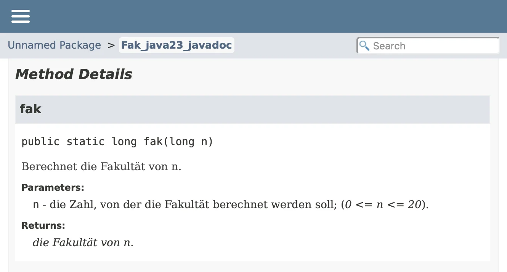

Einführung in die Programmierung mit Java Dozent: Prof. Dr. Michael Eichberg Kontakt: michael.eichberg@dhbw.de
, Raum 149BVersion: 1.3.0.1 Quelle: Teilweise inspiriert von oder basierend auf Lehrmaterial von Prof. Dr. M. Matt bzw. Prof. C. Binning.
Folien: https://delors.github.io/prog-java-basics/folien.de.md.html
https://delors.github.io/prog-java-basics/folien.de.md.html.pdf
Kontrollfragen: https://delors.github.io/prog-java-basics/kontrollfragen.de.md.html
Übungsaufgaben: klausurvorbereitung.de.md.html
Fehler melden: https://github.com/Delors/delors.github.io/issues
KI Verwendung: Bei der Erstellung der Unterlagen wurden KI Assistenten (insbesondere Claude
aber ggf. auch ChatGPT, Ollama mit Gemma/LLama/Qwen oder OpenCode mit
Kimi/Qwen/Deepseek...) unterstützend eingesetzt.
Dies erfolgte insbesondere zur Unterstützung bei der Generierung von Grafiken
(d. h. SVG Dateien), oder um sich Übersichtstabellen generieren zu lassen.
Weiterhin wurde KI zur allgemeinen Qualitätssicherung eingesetzt.
Inhalte, die ggf. von der KI vorgeschlagen wurden, wurden im Falle der
Übernahme explizit validiert und angepasst.
Einführung "Hello World" - das erste Java-Programm HelloWorld.java
1 void main ( ) {
2 IO . println ( "Hello World!" ) ;
3 } Die Ausführung des Programms ist (in der Konsole/im Terminal) mit java HelloWorld.java möglich.
Die Datei enthält ein einfaches Java-Programm, das den Text Hello World! auf der Konsole ausgibt.
In der ersten Zeile wird die Methode main definiert. Diese ist die Einstiegsmethode in das Programm. Der Text Hello World! wird mit der Methode println auf der Konsole ausgegeben. IO . print ( . . . ) IO . println ( . . . ) print tut dies ohne und die Methode println mit Zeilenumbruch (\\n ) am Ende.
Von der Konsole lesen HelloYou.java
1 void main ( ) {
2 IO . println ( "Hello " + IO . readln ( "What is your name? " ) ) ;
3 } Mit Hilfe von readln können Sie von der Konsole lesen. In Java-Skripten ist readln immer verfügbar. Das Programm gibt den Text Hello gefolgt von dem eingegebenen Text aus. Die Methode readln gibt erst den übergebenen String aus und liest dann eine Zeile von der Konsole ein. Der eingelesene Text wird dann an das Wort "Hello " angehängt (mittels des "+" Operators) und als ganzes zurückgegeben.
Ausführung von Java-Skripten Java-Skripte können direkt mit java <Datei mit Sourcecode> ausgeführt werden.
Ggf. ist die Option --enable-preview notwendig; diese ermöglicht die Verwendung der neuesten, noch in der Entwicklung befindlichen, Features von Java.
Java-Skripte können auf Unixoiden Betriebssystemen (insbesondere Linux, MacOS, BSD) auch direkt ausgeführt werden, wenn sie ein Shebang (#! ) in der ersten Zeile enthalten, die Datei nicht mit .java endet und die Dateirechte (ausführbar) entsprechend gesetzt sind (Auf Unixoiden: -rwxr-xr-x ... HelloWorldScript ):
1 #! / usr/ bin/ env java -- source 25 - ea
2
3
4 void main ( ) {
5 IO . println ( "Hello World!" ) ;
6 } Übung - mein erstes Programm Lesen von und Schreiben auf die Konsole
Schreiben Sie ein Java-Programm (GutenMorgen.java ), das erst nach dem Namen des Nutzers X fragt und dann Guten Morgen X! auf der Konsole ausgibt. Beachten Sie dabei, dass der Text X durch den eingegebenen Namen ersetzt wird und am Ende ein Ausrufezeichen steht.
Als zweites soll das selbe Programm dann nach dem Wohnort Y des Nutzers fragen und dann Y ist wirklich schön! auf der Konsole ausgeben.
Schreiben Sie das Programm und führen Sie es aus!
MTAwMDAw:fvH0eux8AZWRYCd4iqKx9ABwp3llomA+x/ukdMmDVDg=:2TdohHTbAII6uzee:itiudz/XlZt2on1q9RwKPHB+uNaJ5m5COHdtPhhRM/4LNnpQw9Rz/lgAyULRrC+X7eNKTOuRPLB/MrSNr9EVn/LAB6mVOhC+91o+7zU8MMhUlHrV5p8mmaMjajymHqxm1WkzD9hUYqeo42ky0dNeDfX/oeIELjNfUbCtEpB5jww2aoqtLW3p8mmBQkFs0OOKZC/IqjgvSljxUGsXmUciS6x2vWm81DTn4JnZSUFKFY+rkh2B3k/BAx1qDPY5v0zSYeoklZi/e55nANRIiQrezNkW0qZSQDXrUsncH5Td5yj+QdN3pJ8+zmDPHvu85OiNAl0WW3PIXFmFU56vLs3dtqQFj15T2G58VvIrtHSPyGHX+hw98Xo5LGkEhsOCYx+2ftkLZMXRYXMgg+x/J2cUJLqG+9LyfJrJJKUHRDdqoUi+gYYXeXs0iG72SZbscBvWBkyxUheZYpVjzU9ORm/RKhQ+H093rL9ChJUe7rvOK9qd0vkXV98RNb0+5dE+Ma7IxZPh5B7WrwMMDNhN/QzrLuY/xq0yY4+VYQ4BUam94SKjohusd2h7iwUrCRoT6A9CwJ+kmv8u9e9KOF9ZRW9ageO5xiglq8AkJgOoVe5pv5rknU8vAUBygq/rXxdYkXvSZ9eiEfzyDmGgrFr33j+VPt0nWw/TZi1gCm82QJ/TcatyaV0tdF4JHLbJpCV+eTDowSuAYu/Qy3IEFc210adP0GrQtvBal0wzfvstm8zWtxqe+9+6GlN4cw9TaqEpKCnYeQACVp3kjkjpIeSK1ioZBrZPoRGER/ae8TST0r6TAXfMdic09lCqeEOvbblfMTBpdvZfRwlHN61IAt63eoNYMrTyTwXmrsQNDg+cdxn6DYI9iQuaos0QW7pIrE/LcINPS382NeSQtIgz3qWz24MXcvKE2IYqU+Vx/sMOFFwOUgBINRw2BXd5xJrUkYTyu63askvr3GJCANQ4wROJBhiqhJ+oNORbuANgMwtQVV4NiLT0YKJr0SIyhCtUuWKZmKpTzVPeq9zZnrsUQ3LJ81sGG99La/32vB1rlH7zNLvTYwmHG++KVzxEhJQhbaqW6PA+8jJnYgCBJPCz7qqFl512U6GQaDZAgBoDqotnHwCwWwPlkkIjKjQLvw19IN6HFY0UMQSvL/W7qvG5tu/Xnmj6p3EtsLKTaT0gL9CqoTtfbk9VrNEQ6+OUmf7eI51hReNxe1H8sxMgHzW/ggAVCgsneW8ubb2nljsMdt1RAaW3z89WGTpmv1E4+fdnMaQcyE2JhARRfISp00Hz+SK/piZnS8sBKW7t5XwIddPpQQfKAJklbSpWYNillccNAMC+l3m579mszcPfyYCLtv9PeNCGlBk+R7dxZwLhACCUAGIGPzHB7HGks8vBVRbZoqmqfRyYeSZWT/bHLJoMK64N0VP9U3NmB5n4SLp5M8EcCUiOP5PpYmgmir0zH48uSwGuKWmBZMM2er5VkiMehC7eX761aZ5gnRI42UA7Gp8B4ciTdh5WFwKvf/PLnXaOOVIazkpO6iXx/cmHdYo9fAQIaoaNpGWGPYIaSU+fydK4VtTKICury9yPtFDso+vpfWJorRaKCR77c/I7l6swuuXBZ/wyy/4ohDSJVu0g6jDLTrvCg+1khijeC4u/RbHCf3NJTOMfvGnYfnuqsgzNJ2CG+xfwmNTnKgMUb8EeKU2pS/gYUX+b50P9ViZjFvqu3Jg9KhTMaxzLwEejItC+2OeF/khgyyFc0fJRr7/FU3ivRaOg77T1uocaqoKgLkvsaR7g6Ky8QPPDzBDhpo+a6J1klJgF9vrgHUMmCRMYlZz0GIC7V+CEocZt/keTpp4l5ZCnfUoN3dtAwPVxXvQ0wdE3+N9GcJpD3itLp7MuTgFKFbsyjyo54wZFFWaJyAkaSso1FV6PviGJOZ4bM2/R/9PNfQOQkydFzYpM4OVyY4KLOmrOOTSvOQ8DN5Zl2Wq2usG4UCvxqTwDuOZE1W/xhhZLfWia2YpcN413UVRCY2fvWx5I4W7BBrNJhlANm9rnPICASkHfei0Fk2C5aKQC8112Du8lwmXjRpXzEk4wofoR5BpunBnf1rHNp7Z8cJdwv1U8+7R5Y/lfoo7BDS+IBy9sYk+1YJEzK0ym5XHUjRy17k6O+rD2EEUWsnY577+Xcvj1GaJAdybcTOf3Jg==
Hinweis
Vorgehensweise:
Stellen Sie sicher, dass Java korrekt installiert ist. Öffnen Sie dazu die Konsole und geben Sie java --version ein.
Öffnen Sie einen Texteditor (z. B. Visual Studio Code oder ZED oder ...)
Schreiben Sie den Rumpf des Programms: void main ( ) { < IHR CODE> }
Ersetzen Sie <IHR CODE> durch den Code, der den Nutzer nach seinem Namen X fragt und dann "Guten Morgen X!" ausgibt.
Führen Sie den Code aus in dem Sie die Konsole/ein Terminal öffnen und dort: java --enable-preview GutenMorgen.java ausführen.
Übung Java-Skripte
Zur Ausführung der vorhergehenden Programme mussten Sie immer den Java Interpreter starten und das Programm ausführen. Stellen Sie Ihr letztes Programm so um, dass eine direkte Ausführung - wenn Java korrekt installiert ist - möglich ist.
Beispielausführung auf der Kommandozeile:
1 $ ./GutenMorgen
2 Wie ist Dein Name? Michael
3 Hallo Michael!
4 Wo wohnst Du? In einem schönen Ort
5 In einem schönen Ort ist wirklich schön! MTAwMDAw:1Rnp3Sre0mqLu0raSOOutOxNGCI6cyOtfJqcDzHX05Y=:gFTgymKPPCEjoaoQ:Aihqao344h+Hjr4U9MZ6WwMLeH4Qz2ksABl3wYQrS9k6S62UuJXS0jWIelayJR8+pArD420gk/8KJV3AWyrDb8Un8uZj9DxtbbDQvoz1X1emJzU7SQ5mjdLcEiqY3WGz4ZJO6/brCc7oUwG3gu5hJb/vEW+fKQAkCJzsjzzgWZPPTPoIOmO87dO2RzklsV3B8+USZajlqm52ZqtxgnWEbNii5MBcxP6nTE4lvyhiKSY68T9KM/+5pTCjBH5mCIbHdyvitT9jtYVqcpuiNvXsiylEz2x8riuAJXCTG0O/8KlY0LH8LZnRzQM2aTNIQ73mR6vmDb7Pq/PuKiBmgAfOrRbT2z0vMN5SFKlQLbRe5LXiTGc236U56DV881B5gneRpET5Wp6Cmo0PH8AiZsNwouYTcLqWFJ0p1uSImw4YJinIJtvMXQ6NDTb2uqNoylE7mOvzXJgraLo6yBiOr9VzXQ+ziHdsnwSHlh0xYpi+mngQDlNZNp2azVPgZwdBq2dQg5C4Q/Wbvy9hYm8hEO5QICUzUzALR9efs0LIip+Pm+ofOpGDECj+DqZpV1ETj2OXW6HbFRN4odzHXCZ9wvacMYtyJO4B85i3nRXFtEdCX4I3g20I0/PamfBEfinQblUokzHWRbLdyecD6Eo/EzSzRO5gtklR14LA5qWvcc8K8Xd/IEcwGqjllVuOtNSudiocNylcPwZ9tAL9aA3TIBp+B/CNPR7tRSB00++WznoIPLWCTBCAY7nFnNCxSB7p2CB0Q2Mdv20IGwcqZ8Zjc4yAm2WoOZKQpb31OB3xTFurqmqtBl/VcWCFgvsuwoxRyDJFdd1jSmhQcur9tKJCegtPMbgswomK5VuckOWQdkIuiXoEPmFFHM9UQlpptPIGAUxVGMs+zVuRTHrKlyEsuYT21HVPQP2ihfRg3jaeOQAiV9Sn+lKMgdcyW6znRn3pWjbH/YMfYxTFYcvyifECUX23d9S26CU3pB1hE9AA0fKg7GOzt0Qw4dn4CuJMYQjujDTHw9lqhJzpSFOrkpp2pU/J7Y/crdLebEh9VAfQiY0Dnj0zrqFHzR4gbd62I7mcMcbEwTuRbDgDtAUenCnN+BOfj662BtjJ19/aYL6uwJbByFnjd76sfacmaYUHZD2Mg/gSFMM1tmrlAPkbnInA9/tmKfei7qOERgbA19z+MIs/8zTxHKsIovWgleH/AiCJl9x19/xIryQd4gVye1lg1vqkkYs2cIolsbZ7kXpoqQ74eHxSjBsvRSZuK+HFudDHG22RjEgrLRhhNRzcOumLfbnTe3hWs2FQ3JvnDB/QYe6KIE//qCwVLu85GzjIXCPgr2gHNwld0o8XpWRoeKvFH/hWXII8heF2smMMCnJojox83RqHX5YMajcw2sistzT0LKnYAfsLKicP3rchhKBKRfRt/ABKwrYxvQDmKcEvC1ZgRMSttt9ssI4JyzfCy0uGSJEGrr16pMZ73JLTNU0Qh6fOKpHlRwJ6hxrogAdl4xsV6KYCvkFWZ6MGHHYrCKSPA4x6YZHI9PRSROcU17XqJ3vBP3wjmNG9fvIP9HqZ6qSAgqhpxWWWz6nm55K/jgz714NDRLLCw6DjMqGN4qpK/u+Rg3Nj2rbUMwEDPnm2gvOSaHnubxN0eBvLiLm1QYXnd52NSmUV3a4i/1KVFfG+PIhex9tPxORvamVPliHih6KjuRVfKptyAXaCfYFGOTgP9U+9gweXJyQ4DPDCY8SVzA1FIxetzy8lapCY4gLYNz7IK5zjGxSjJu37c+YY3POrrn071xSHZtfHA+yYaZSnWwQogY14MyF3S1NnL4oGXlpuLtUaCAg/aww58VvFt9mU+FTPgfiEYAuiojbRM2E3F1/lBUkzu20ym+0kXUhIzHjY53qZFUHvyLhUN+OccUrZwt508uW30cJeYAHDFoDQVK0p7CYa+/gAQwvQOCjMI/Ee3SXRZiRHOXbt22B6K3uvqFjXlxFwlL2QmhGBFLT/UJKvEeiIfPCU/YvUN4x3ETooBRE6rWZyBXHQZ+blF46mZsPn+Q/wZcQ/EaMxle4sLZ+div5UIYllGQ6FVIlhNSVKC98Vs/nHy1OZZsv58fFQOppKujXm2zc/Oez5gT4p8nQNbULgTMAB+ELgAnXnAhmlyTf0JY14OGGG5XWvbQcaHO8dxfYvFuEVSmFJ/yW1Qx225r1vrqstW4kLwRBCyaHotWSXTLTC/8qhm6ZhzMI2GqY/N9KZJwx9kHZ04QpCKZqGjaWSGi+F9NyfqnC9/KNWPBB8gbzmMkuBpo46vXkfUN95a8tSW8UQl6No2kfj0cUf4HkvMesCvW/EHvB4hi22vP/IsEfyzgaltojKegfN8w1RHpgZ8A5nFxRqYQMeu2bLG//9+GzeXl6EEfudIb/Pm4FRIVDHthjEFi1SbAHmpDhYV4CIuOJBwD9Ane+TWPWuCHbGY3OWmrB8IeUqTMw23/SQhpoctCjn+MEWIzmNeLEHH/EZH8nRhSqK3aFu3jkkNzlnl31kFgd9B7xfCM7YhlwqySD8Tq4rQtHwyaT5Ds66S9BZM7kxv2VOi9xlcjhKqO7j3JUfn9to6CphjG+mWDf6inM/YhqTebESMPbvIacbS/UfJt5CijQxRvQGZaBO8k17zZSgvmIzfnkvHgzgNeXIHED8RxC8QJLdHfqm2tigUITaHpaJ1HDPg53VbBct6NH84F8nM5UQ364kmAD6sAa9WrLk5yrb
Einfache Prozedurale Programmierung mit Variablen, Konstanten, Literalen und Ausdrücken Prozedurale Elemente Kommentare: Dienen der Codedokumentation und werden vom Compiler ignoriert.
primitive Datentypen: Ganze Zahlen (byte int long float double char byte boolean
Literale: Konstante Wert (z.B. 42 3.14 'A' "Hello World!" true
Zuweisungen: Speichern eines Wertes in einer Variable.
(Eine benannten Stelle im Speicher )
Ausdrücke: Dienen der Berechnung von Werten mit Hilfe von Variablen, Literalen und Operatoren.
Kontrollstrukturen: Dienen der Ablaufsteuerung mit Hilfe von Schleifen (while do while for if else switch case
Unterprogramme: Methoden (Prozeduren und Funktionen ), die eine bestimmte Funktionalität wiederverwendbar bereitstellen.
Kommentare Beispiel (ab Java 1.0 - spezifische Tags und HTML)
1
2 * Berechnet die Fakult ät von n.
3 *
4 * @param n die Zahl , von der die Fakult ät berechnet werden soll; ( 0 <= n <= 20 ) .
5 * @return die Fakult ät von n.
6 * /
7 long fak ( long n) {
8
9 durch den wechsel von long auf double könnten wir bis n <= 170 rechnen;
10 sind aber unpräziser. * /
11 if ( n == 0 ) return 1 ;
12 else return n * fak ( n- 1 ) ;
13 } Beispiel (ab Java 23 - spezifische Tags und Markdown)
1
2
3
4
5
6 long fak ( long n) {
7
8 durch den wechsel von long auf double könnten wir bis n <= 170 rechnen;
9 sind aber unpräziser. * /
10 if ( n == 0 ) return 1 ;
11 else return n * fak ( n- 1 ) ;
12 } Erzeugte Dokumentation (mit Java 23)

JavaDoc tags
@param <name descr>: Dokumentiert einen Parameter einer Methode.
@return <descr>: Dokumentiert den Rückgabewert einer Methode.
Java Shell Die Java Shell (jshell ) ist ein interaktives Werkzeug, das es ermöglicht Java-Code (insbesondere kurze Snippets) direkt auszuführen.
Starten Sie die Java Shell mit dem Befehl jshell --enable-preview in der Konsole.
Den gültigen Java-Code können Sie direkt in der Java Shell eingeben oder über /edit als Ganzes bearbeiten.
Sie beenden die Java Shell mit dem Befehl /exit .
Die Java Shell eignet sich insbesondere für das Ausprobieren von Code-Schnipseln und das Testen von Methoden.
1 # jshell -- enable- preview
2
3 | Welcome to JShell -- Version 25
4 | For an introduction type: / help intro
5
6 jshell> var x = "X" ;
7 x == > "X"
8
9 jshell> x + "Y"
10 $2 == > "XY"
11
12 jshell> $2. length ( )
13 $3 == > 2 Übung - Java als Taschenrechner Rechnen auf der Konsole
Verwenden Sie die JShell als Taschenrechner und lösen Sie die folgenden Aufgaben in der angegebenen Reihenfolge jeweils mit Hilfe von einer Formel:
Berechnen Sie, wie viele Sekunden ein Schaltjahr hat.
Sie nehmen einen Kredit über 47865 € auf und zahlen monatlich 3,6% Zinsen. Wie viele Zinsen haben Sie nach 5 Jahren bezahlt?
Ein Bauer hat 120 Äpfel. Er möchte die Äpfel gleichmäßig auf 4 Körbe verteilen. Nachdem er die Äpfel aufgeteilt hat, isst er 5 Äpfel aus jedem Korb. Wie viele Äpfel hat er noch?
Nehmen Sie an, dass weltweit jeden Tag 1 500 000 000 Plastikflaschen produziert werden. Wie viele Flaschen werden in einem Jahr produziert, wenn das Jahr 365 Tage hat, aber an den Wochenenden nicht produziert werden würde (gehen Sie von 52 Wochenenden aus)?
MTAwMDAw:rTDILMPbk1W3FKu+KI3o47MuklRiGNYvN1YBO0tW6fs=:EErR58Oksn6Ywm69:fTLb5M8PbxeWg48qnCV0jcEtpTvzEshIfPfVqshz1RuNLfEdKulEgXHH+xIKd+BXQvfEDhCKmvvzHL7ApuY/BpycXfCOJieM+xnu++3JFGUT7Z9JYVzykAPqO7OFaiVsZWWEAkwbZ1HK1aQL3XeNZYrEVsAXnAevqzyTTy8Qq4PJVpsE56uKHIUhq4hjWSlFKEOCx/vIC9y3qhwSt2ZnH/pnnxxLHTY25y7FJm5y54IGy9dx0ND6c37n5Zl4QtACiSx0qL1xzkT8zgb3bn6znUmowxoLVHXAdf2hin+PyY+yQuvGGZoySxIspSgqZ7HRMFQ+gEk7dUFbA0bTcO4CqMIlhoKnEk5tgoQBm+0QpICGcqSBdyGDtmc41Mcacs46+CoA33QfKc/V9GiqRoZGsJEFrn+yUz5nNcOrM/aQM3lmfqWsU7j7cHb6h6LTm5XDvSFaeATNjaMbH7+ft+GHhwNWxyv2rVJZOPrEt8JGTP27iPsvvuQpPujNH/7zSyx0hqU7nLI8CpJ+moNBuRyE/8IQ+OQ1nLkV9gJnwXozYI+BPEh+oavl49wNFUwjTqe0CLf3zlbBni2Ywv+znbBbY/kOD2MucYrMcqZfooNlbDWspozaLN8qAyJalWLET3aVGP0r6uoT9GXVgT+3puvvqH9E9P2gAKqgOJ57iFmiec82yBYT/dqo8BbrAGcNpgKnXR8EHsfNrzyOwOjeGtAXaD1x5FRE5mZUZap4gTDXGjwqXcHpE9PCNwB2p9UsSA/IRDv9qIsDoXXICGc4ZiDJnSdaNTz7uU0i54cOX0E/jI2uYmOHbd+4NTXSJr2wVGzYkYQMBD9IqwVgU/CjA48uvl5AuuEae+aun7K+p5olpNlfqzjtJuFsVkUa0dyaJ0NR6OObviyduGGud3vOQDYTi+vH0SFXvgCXj/OSVJyMJJNXN38Le1n66OIWqeFhEHXlGDOQ4k/GlP/aT8qDtJWFxwaAnGnkhh+lrvDsfvZGO5T8K+Fa4vcs6Sttt+IsSz8JuQC1zY6UdnaMT+1/PFjZAtsNZmGj4E5AtDnrrBMal7fQS6emqDK2AWA2/Ie3fgrUR7cICe1+Yu+7yRETgN7KCjF68jms3aLRyS3T5YRfZFmRomH7scy6hOoYOpzUd6AjBGouLL55Vn1OFxFjCLvO8QQuSw2/pp31VFwZhmMvzM+hXhrZ9Yt270ijRJP+uYoQAmq3ahnR9QHAxJG5ntjwGZMv66fxxbZ6HwuBi8oTjDsMRH8O/WAL8Gp//Uzo2bz5hCCljs++wUglyTe9w2g87zuMpHBtcZk4YGIURRqGLWdIO1DRIoBkzXde1wB6bIWhiSc43zNVlFDXmJ0U7UQ8PQcRzGaoJOXczfJALcGRpS5YG6gAddrQOgFwyiIflto0BoTdiKfJYJvgkvEkXea6QqdSqmOK2GwtUe8s72/huHAanFQy8uGj+cq7Z8higVvWDD7RzLQ7Eh9EaUY8Qko37rLriJDwGeEVDgvnkasEZOBlVVQ6Njl5WlLbz27sfCTvgJawYNGjkL7gq5zop6HPQhCKAqWFcOtbZb6GHNFOB3HDB8TjfLrESVgCC88FZltr2MWk2/ltqobihel2HLkTrgquuJjSNLgDvHbdjsDeC++UySpS8EJBkcgPljDKdQTlMaNh+us9Q0uSxluFgaX/3Ui8mnYiy/gUFCcsEe2hVdRKVHXZxLAdm7SQ/Gyg3idsFS1oQG3+LVPQGyhg88IKiaIj4lkKl3rplt7hlbNn7KVMWsfhmNIzqPgdgNJPAXLfYk7GKMHyLsIj34wpg3LWVVfd3BLB/ETWxk7cj83v0UvE5il+z+bZAJPMHHCpMw//Fwggu2nnBz7Q6i9n4XiPTdgEN9ib8mrhL6e/pVhyXkSucX+da1obbEqqcJM7bIYPtRCXkAwbNvoVncXxAu9VqHv0xh0tOvE2GpPTKCiJDnR3ukZlvfKS2yDxKO+rz8g9MG0vRUPXUJ3V03QGALSzhTCYKjsMYJfj36hfLTFyEbQRP4J8i60yhxuz0mHNy73s8yVaD0G55XCCKO/c/koYWkw+P9epuYPU+/9slDbyP5xveDU0JOo1eb2H4RmEsdUE0gcc4BvZFRpTt7etW4Q48X+1jctd7XaHwj8gqOSydMVBtq+pUOLGSKI4Cw3AFPjYWRdzE0t9ARy9fl6aWqXV2XpkycxGDUy3rzc2EHrsxiPZRppPrtONqfYBpq8VjrQUm4HCZEy5tw1KLT1XSWI+UeSR1rGwX/EyiGQhumzkSDEK2IppWg3PijZ3BPGViX6pMHcEXO35HpUdaB4LXH9LeeUVYFk86zj4GUZGy3sYLKEpMz3atODSxW/M+tDeaYSf7KNttZOBLx+DygBq9tFckxI65tDnSekjP8xxP4DOG4JeyPslMXTJLbLoQKj131nWYDPHx2y9U0Tym1s1cm2nGJs4GZyBzPnGO0lJ6/DTUY6u5DjwnFPZVO6lblFxi8MHzh50phhOZFZEqflKyZ8Eujs8eeYz6gpz+Flp3uQhUgaSZr/3DoCTFsmsR704C9J77U5x30QiH35jPp7mUQPzonYZhxqzm3b8G5uQfpesOmeWNxq1MlIY5ZEQEEAMrg6Wr1D7iVWTrmddizPQIfmcWrMACEBq8afn8UEuXUv33cII7dEsLa30FIKV2xvUG4213tllK5SKBOHWpLRH8YuWSKaSs3j1CSngZGZWbnz9USdQu0DapVv+QgCIQRLrb24uWbPepk0z7X93MLTk2nwad3LGAeT5tGQrnBYuqpV1IjWYCj7iegLDXu7CNM/jxw==
Zum Starten der JShell müssen Sie die Konsole (ein Terminal) öffnen und jshell eingeben.
Hinweis
In Programmiersprachen wird generell die englische Schreibweise für Zahlen verwendet. D. h. Sie müssen das Dezimalkomma durch einen Punkt ersetzen.)
Die Division wird in (den meisten) Programmiersprachen mit dem Operator / durchgeführt.
Die Multiplikation wird in (den meisten) Programmiersprachen mit dem Operator * durchgeführt.
Sie können Klammern (( und ) ) so verwenden, wie Sie es von der Mathematik gewohnt sind.
Sie können große Zahlen mit einem Unterstrich (_ ) formatieren, um die Lesbarkeit zu erhöhen: z. B. 1_500_000_000
Primitive Datentypen Arten und Verwendung von Datentypen Um die erlaubten Werte von Parametern, Variablen und Rückgabewerten genauer spezifizieren zu können, werden Datentypen verwendet. Java stellt hierzu (unter anderem) primitive Datentypen zur Verfügung.
Ein primitiver Datentyp ist z. B. int integer bzw. Ganzzahl ).
Dieser Datentyp legt fest, dass ein Wert eine Ganzzahl mit dem Wertebereich: [ - 2147483648 , 2147483647 ]
Alle von Java unterstützten primitiven Datentypen
Art
Datentyp
Beispiel
Ganzzahlen
byte short int long
123
Fließkommazahlen
Floating-Point Numbers
float double
1.23 3.141d
Zeichen
char
'a'
Wahrheitswerte
boolean
true
Bitte beachten Sie, dass in Code für Zahlen immer die Englische Schreibweise verwendet wird. D. h. das Dezimalkomma wird durch einen Punkt ersetzt.
Java kennt neben den primitiven Datentypen auch noch Arrays, Aufzählungen (enum
Ganzzahlige Datentypen - Hintergrund Ganzzahlige Werte werden im Speicher als Binärzahlen gespeichert; d. h. als Folge von Nullen und Einsen.
Um verschieden große Werte zu speichern, stellen Programmiersprachen ganzzahlige Werte mit einer unterschiedlichen Zahl von Bits dar.
Zahlen werden immer mit 8 Bit (1 Byte), 16 Bit (2 Byte), 32 (4 Byte) oder 64 Bit (8 Byte) gespeichert.
Hinweis
In Java werden Zahlen immer vorzeichenbehaftet gespeichert. D. h. ein Bit wird für das Vorzeichen verwendet; auch wenn es nicht immer benötigt wird.
Umrechnung Binär-Dezimal
Binär
Dezimal
0000 0000
+0
0000 0001
+1
...
...
0111 1111
+127
1000 0000
-128
...
...
1111 1111
-1
Datentyp
Genauigkeit (in Bit)
Wertebereich
Anzahl Werte
byte
8
-128 bis 127
2⁸
short
16
-32768 bis 32767
2¹⁶
int
32
-2147483648 bis 2147483647
2³²
long
64
-922337022036854775808 bis 922337022036854775807
2⁶⁴
Die Größenwahl für long und int ist teilweise historisch bedingt. Auf gängigen Prozessoren sind jedoch 64 Bit und 32 Bit die natürlichen Größen für Ganzzahlen und können effizient verarbeitet werden.
Gleitkommatypen - Hintergrund (Konzeptionell) Gleitkommazahlen werden in Java nach Norm IEEE 754 (Seit Java 15 Version 2019) durch die Mantisse m m m e e e z = m × 2 e z = m \times 2^e z = m × 2 e
Für das Vorzeichen wird das erste Bit verwendet, für Mantisse und Exponent werden zusammen 31- (bei float double
Die Mantisse und der Exponent sind vorzeichenbehaftete Ganzzahlen.
Beispiel (vereinfacht)
7 × 2 − 1 = 7 2 = 3.5 7 \times 2^{-1} = { 7 \over 2 } = 3.5 7 × 2 − 1 = 2 7 = 3.5
− 7 × 2 − 1 = − 7 2 = − 3.5 -7 \times 2^{-1} = { -7 \over 2 } = -3.5 − 7 × 2 − 1 = 2 − 7 = − 3.5
7 × 2 − 3 = 7 8 = 1.125 7 \times 2^{-3} = { 7 \over 8 } = 1.125 7 × 2 − 3 = 8 7 = 1.125
7 × 2 0 = 7 1 = 7 7 \times 2^{0} = { 7 \over 1 } = 7 7 × 2 0 = 1 7 = 7
Datentyp
Genauigkeit
Mantisse
Exponent
Wertebereich
float
32
23
8
ca. -3,4·10³⁸ bis 3,4 · 10³⁸
double
64
52
11
ca. -1,8·10³⁰⁸ bis 1,8 · 10³⁰⁸
Ganzzahlen < 2 24 < 2^{24} < 2 24 float double < 2 53 < 2^{53} < 2 53
In beiden Fällen gibt es noch die Möglichkeit +/- Unendlich und NaN (Not a Number) zu repräsentieren.
Gleitkommatypen - Verwendung Warnung
Bei Berechnungen mit Gleitkommazahlen treten Rundungsfehler auf, da nicht alle Werte in beliebiger Genauigkeit dargestellt werden können
Beispiel: Der Wert 0.123456789f float m × 2 e m \times 2^e m × 2 e 0.12345679
Gleitkommazahlen sind somit nicht für betriebswirtschaftliche Anwendungen geeignet.
Gleitkommazahlen sind z. B. für wissenschaftliche Anwendungen geeignet.
Für betriebswirtschaftliche Anwendungen gibt es den Datentyp BigDecimal
Zeichen - Hintergrund einzelne Zeichen (z. B. 'a') werden in Java mit dem Datentyp char
ein char [ 0 , 65536 ]
Alle gängigen (westeuropäischen) Zeichen können mit einem char
Warnung
Seit Java eingeführt wurde, wurde der Unicode Standard mehrfach weiterentwickelt und heute gibt es Zeichen, die bis zu 32 Bit benötigen. Diese können mit nur einem char char
Für Zeichenketten (z. B. "Hello World" String
Unicode Zeichen und char
Hinweise:
0x1F60E ist der Unicode Codepoint von 😎 und Character . toChars ( < Wert > )
In Java ist die Länge (< String > . length ( ) String ) die Anzahl der benötigten char
1 jshell> var smiley = Character . toChars ( 0x1F60E )
2 smiley == > char [ 2 ] { '?' , '?' }
3
4 jshell> var s = new String ( smiley)
5 s == > "😎"
6
7 jshell> s. length ( )
8 $1 == > 2
9
10 jshell> s. getBytes ( StandardCharsets . UTF_8 )
11 $2 == > byte [ 4 ] { - 16 , - 97 , - 104 , - 114 }
12
13 jshell> s. codePointCount ( 0 , s. length ( ) )
14 $3 == > 1 Wahrheitswerte (Boolesche) - Hintergrund die Wahrheitswerte wahr (true false boolean
häufigste (explizite) Verwendung ist das Speichern des Ergebnisses einer Bedingungsüberprüfung
(Wahrheitswerte sind zentral für Bedingungsüberprüfungen und Schleifen, werden dort aber selten explizit gespeichert; z. B. beim Test von n auf 0 im Algorithmus für die Berechnung der Fakultät.)
Konvertierung von Datentypen Die (meist verlustfreie,) implizite Konvertierung von Datentypen ist nur in eine Richtung möglich:
( (byte → short) | char ) → int → long → float → double
Konvertierungen in die andere Richtung sind immer explizit anzugeben, da es zu Informationsverlust kommen kann
Beispiel: int byte [ - 128 , 127 ]
Bei der Konvertierung von int byte
(byte) 128 ⇒ -128
(byte) 255 ⇒ -1
(byte) 256 ⇒ 0
Beispiel für die verlustbehaftete implizite Konvertierung
jshell> long l = Long . MAX_VALUE - 1 ;
l == > 9223372036854775806
jshell> float f = l
f == > 9.223372E18
jshell> f == l
$1 == > true
jshell> ( ( long ) f) == l
$2 == > false
jshell> ( ( long ) f)
$3 == > 9223372036854775807 Wahrheitswerte können nicht konvertiert werden.
Literale Literale - Übersicht Literale stellen konstante Werte eines bestimmten Datentyps dar.
Datentyp
Literal in Java-Code (Beispiele)
int
Dezimal: 127 ; Hexadezimal: 0xcafebabe ; Oktal: 010 ; Binär: 0b1010
long
123_456_789l oder 123456789L ("_" dient nur der besseren Lesbarkeit)
float
0.123456789f oder 0.123456789F
double
0.123456789 oder 0.123456789d oder 0.123456789D
char
'a' (Zeichen-Darstellung) oder 97 (Zahlen-Darstellung) oder
'\u0061' (Unicode-Darstellung) oder Sonderzeichen (siehe nächste Folie)
String
"Hallo" oder
"""
Text-block"""
boolean
true oder false
Textblöcke werde seit Java 15 unterstützt.
Mittels: -Xlint:text-blocks können Sie sich warnen lassen, wenn die Textblöcke potentiell nicht korrekt formatiert sind.
Literale - Sonderzeichen ("\" ist das Escape-Zeichen) Datentyp
Literal (Beispiele)
\'
Einfaches Hochkomma
\"
Doppeltes Hochkomma
\ \
Backslash
\b
Rückschrittaste (backspace)
\f
Seitenvorschub (form feed)
\n
Zeilenschaltung (line feed)
\t
Tabulator
\r
Wagenrücklauf
Variablen und Konstanten Variablen - Übersicht Variablen stellen einen logischen Bezeichner für einen Wert eines bestimmten Datentyps dar.
Variablen müssen erst deklariert werden. Danach können sie weiter initialisiert werden, wenn der Standardwert nicht ausreicht.
Deklaration: Variablennamen und Datentyp werden festgelegt.
Initialisierung (optional): Variablen werden mit einem bestimmten Wert versehen.
Beispieldeklaration und -initialisierung
1
2 void main ( ) {
3
4 int alter;
5
6 String name = "Asta Mueller" ;
7
8
9
10 var geburtsOrt = "Berlin" ;
11 var wohnort = "Schönau" ;
12 var geschlecht = 'd' ;
13
14 alter = 25 ;
15 IO . println ( name + "(" + geschlecht + "), " + alter + " Jahre, aus " + wohnort) ;
16 } Konstanten - Übersicht Konstanten sind Variablen, die nach der Initialisierung nicht mehr verändert werden können
Konstanten werden in Java mit dem Schlüsselwort final
Es wird überprüft, dass keine weitere Zuweisung erfolgt
Konvention: Konstanten werden in Großbuchstaben geschrieben
Beispieldeklaration und -initialisierung
1
2 void main ( ) {
3
4 final String NAME = "Asta Mueller" ;
5
6
7
8 final var WOHNORT = "Schönau" ;
9 final var GESCHLECHT = 'd' ;
10
11 IO . println ( NAME + "(" + GESCHLECHT + "), " + " Jahre, aus " + WOHNORT ) ;
12
13
14 } Bezeichner (Identifier ) - Übersicht Bezeichner sind Namen für Variablen, Konstanten, Methoden, Klassen, Interfaces, Enums, etc.
Erstes Zeichen: Buchstabe, Unterstrich (\_) oder Dollarzeichen ($);
Folgende Zeichen: Buchstaben, Ziffern, Unterstrich oder Dollarzeichen
Groß- und Kleinschreibung wird unterschieden
Schlüsselworte (z. B. var int
Konvention:
Variablen (z. B. aktuellerHerzschlag) und Methoden (z. B. println) verwenden lowerCamelCase
Konstanten verwenden UPPER_CASE und Unterstriche (z. B. GEWICHT_BEI_GEBURT
Klassen, Interfaces und Enums verwenden UpperCamelCase (z. B. BigDecimal
In Java ist es unüblich, das Dollarzeichen ($) in eigenem Code zu verwenden und es wird in der Regel nur von der JVM (der Java Virtual Machine; d. h. der Ausführungsumgebung) verwendet.
Ein Unterstrich am Anfang des Bezeichners sollte ebenfalls vermieden werden. Ganz insbesondere ist darauf zu verzichten den Unterstrich als alleinigen Variablennamen zu verwenden, da der reine Unterstrich seit Java 22 für unbenannte Variablen verwendet wird und dies die Migration von altem Code erschwert.
Übung - Bezeichner Welche der folgenden Bezeichner sind (a) ungültig, (b) gültig aber sollten dennoch nicht verwendet werden oder (c) gültig und entsprechen den Konventionen?
Bezeichner
1 var 1 a = . . .
2 var 1_ a = . . .
3 var _1a = . . .
4 var a1 = . . . 5 int i;
6 int _i;
7 float $$f;
8 final float E = . . . ; 9 String Wohnort ;
10 String ortDerGeburt;
11 void BucheFlug ( ) { . . . }
12 class FlugBuchungen { . . . } MTAwMDAw:I4QK3AYeoHvYtbmMUq9pVfKDsc+dMgEF8C6C1XDGuH0=:wEGLX0gfz6y0v8re:jVTNoOqL5K7wWRpirJsLYlGKsDgNyfvIKarjum0ZBOxaKaRgXjvlq/xV9+TvK90a8tMI0+MLQxnzGsBemEMJh2/YaxTFEuStfqsh1VPlkV49m8Oru3ZQx/j9LRvotI1TYkeIgMkD7pI57zPJCQtgRA9pTnDP43RRQVg8IAWvr5WqCVzxR9o9erLxXHwuiP4QBmJ1PjOy0zj2fKc7RXNAK7tvdl0z6rclH9/8c9vhArACGS0jY/Xnn43fsARwkbFlzXqZn5w0sqFW9gMuvbgwGBoaXoRgMhEsae/6OOo3f3Euz5m6Vvu87A5Ie7wS1RXczRPnd2QeLotyqRT9anAdzE/Yo3T4Y6uckGxFFm5DewmhfjX23CVQ61CIc+0koDfy0W4Q4rrGffuNSVwTYmRY3M4k2CdyBc2JzzUx6+73mDJ7cUDhIaodZlCUCV+ByR7z9aWatuDrSXwYLmeguVLNgQ8nbyyTht6FM7U1S75dfdio4hzI80NzvcAa4UAcFiVqICP/4+mMVOwpP1KPhleEmHHZM+oasis++DhLHjxhfEbgfFFnp0eVlXfGX+uZZGGrTG7uUZLy48RigKAmO9HlC2lNB4QNS+13o4TeCXNRJONLcJFCksEdj430jYZRygvt7+EyU62Kopf094Soc3W04cxhxEG6b7PgohLlSUa9wqBm2k8FNmfU9Gbo/3IqpAf4OoXD7XJvBAE6jmlpAmDzEPQ6QyA=
Übung - Variablen und Konstanten Grundlegende Datentypen
Deklarieren und initialisieren Sie eine Variable x mit dem Ganzzahlwert 42
Welche Datentypen können Sie verwenden, wenn eine präzise Darstellung des Wertes notwendig ist?
Welcher Datentyp wird verwendet, wenn Sie keinen Typ angeben?
(D. h. wenn Sie var 42
Weisen Sie den Wert der Variable x einer Variable f vom Typ float
Ändern Sie den Wert der Variablen x . Welche Auswirkungen hat das auf die Variable f vom Typ float
Deklarieren und initialisieren Sie die Konstante π (Wert 3.14159265359
Deklarieren Sie eine Variable poem. Die folgendes - von GitHub Copilot erzeugtes - Gedicht enthält:
Roses are red,
Violets are blue,
Sugar is sweet,
And so are you.Achten Sie auf eine konsistente Einrückung/Formatierung des Gedichts.
MTAwMDAw:MWiLzSHQMRip1WdM+ZIQ7ZWm5h2BuOemOZhvg95USz0=:82g5gKR53fX9PHEb:caxQmpcsSrrAh+trWcyzsu2T0HW4dvakJI67LtKsQQvlF0UUyMBhmYAi81srI1D2SExJrcpUaKXTHgL0pJhjfpK+58I/9uJIrU5Yd6v54bm7mlMfX8KRYEs+2x2tNua/MxhMQZzmASR9bz2Y+ud0iuBGI7K6YSIy9rStqMZtpQXJyxh8YNPqiPOG2BiW3lrBm5Y7dQqErsGirM+TIp8hcBtqqVxL5cgwMVofmC4YPEjCeBaPKxbf/AY1eUl8wZSsweX+Rvv0ASqJf8XNmJpE6NHEvQoP60aOXojy8ZZHbCs5T3raUKflDSVpKEaJlCEQmLxpshda9jv5T7aTDRwspqwmMTYh5sWdEhG+BRLIWBwGgIV8NT1tDCX3/JZeREFqfohV1bWZnaOhOo8PFe/pOk/wlvMSZNX/4dzXKokfcShh3V41VfareZTPOZu9n2kXkoCGgq2um8G3MC35a49Hk1uSluMXRNz1UGCvwn/l+MZsn+545hMG0AAZSwfdM6fWifV8NuFr/UBZElVyaQxrOH2IOUp17qjoaOhdnSwjvMAxiO9sE5+w2v0BDgJuGW8qi0PsI5x11bk02bEJ8XVXuZK+zsqzpBg7V6GI68bfdm0HFLzHZfSCoDHW1X5nUd4voVVE/DaiiJrgazqZ5aAwCxLSW5V9hoLOdcVoLFACKcPz3x+tJX1XzBWiKud2X2h/bI6OZCh45O/krcF1wz7DOua6qkHRYXrBiaxi0PhhOg/9EBSLSc1iGr0Pae0/oKm9i4xLozkqn8yEvNkba2AkcPtBDJ84/amrI+uMA3TyQO3xOJGqypA1x5Mxu08ziBiUphKayN7qz7pT/u5FUGV46teB2nYI8LtB2E3/e2aPLti4/j2F9gXYJvWnltBQOuKejy0BjI/EJUUxceG35zW9230HJricn5Qz47kx9ZtvmYFkMzhQRcipVal1+IqgT8xqkbgz3ipMyTG8YiDxqnseeNpmlt/86Omzqy0oTYoEnzDp2F0/9sK/p7Z8qldgX47gavQGTQj6nafAjIGYjhpoO0qtHd/zXmJQeX0aDRagsqalhy3fOpWs+pHmvr24R2yYQ3DEqNO1wWE9J0VPedJZYhyUQRMgwCAWDw2ZCjBSkyxRt4dRrLO4ry/MlR3Ri7KkFQi3jIDVMFP+qOlGAooAGTIY3tsvQ5njStdVfufQA8QkIGKdGRj5PAwGue7ZGoLr+qyjYTX8fn/vWQHPhZgaQ3Tj34/Vp1U6FH1/hVOBXN7jXosifp/X2RnwfYT2ACHxkWw5lXzSzjq4rRiG5YXv7NytYPqlVBynmzKbpxcX2hJH07xdWZOQNMXt5TWc2KHKZVNst1qS0HvbLWEVIeuXtK3DvSkR6yMnL9Y10LV1DSKs1mCBsAbbJbFIyp08G3xRzbGAFgxBblHsVbq0+/t9wwKzuDGi16+G/9n1+Ktc9IsL7Hurunu+AYeTDwOgBITkO/ykhu36+7D1oHGQ62DYwM5JzB0qnlnlUJrbRC6DcMWhQkbnHffYn1stNvVVGSt6ci+vp8uTvEeDscyREUYr49Kv4bz3fV36hkfdIIr1y35nyY7mupDoYFZI9VkYufU4eyZL7CpZXJAjmS9/u/Q5w8mXq1a5rZWJOnNw4lWJz/1TiA/U/eCOojLLUQdeergDw9tVEIdl03BhvIK0whURpLkH1+2oIncbCSlXYJVt8BYHyNzi2EGQoxCB79rFeU58uXfbZTd9xKmiOI8LwYRHV/lzavGtYruHJUXyUKzNRHhrU27gk34YVGXFvQ6QttV6WI1xFXG+N5zNjfy1c/zOT5F/YQNf9LMYBDzKQ2QqZ2ANygMlIdmJNcsshEgzCZ2SWhB1yfJU9rGV3fMf582Ck8ma+zTOD3Bvs6LJJT4vcwHJbAJ2iAplcIYdiCo2inlzVQF605Smy1zkdV3KlUkd2fu0xVydQGLNdSY4yvSusx9/+euilkQZcBEh5RQmJ4b6TWwtHCmTQCy4TIjX1ObuaNC4XKc/cLFM93adAp4CYvk07eLoF73FowbpOwqoTb7XwCWJbggr0fGG3VN1sgikD3AFpi55N9aRZXwSsZBbWVmKspI+6YbXkDxq0oxbpjeoWMgznBJRhcidgaffF50taQ5AuBS068Wxn+nz6ZezINdSqVRslv3IaM4i0VaESDk06yyODViCxvqum3pu/4aHiXoChQ7VEFFGopLSAEmJTDrUsdfdio1jMvDVq+JVekIuNS5Hqy5f/x1yHMBxrp+r2lX4g5qZTIIUTxFME89iAhU+B7LQRGh1MCuJIpFHu3yoxiVGkUI5q827gM4zL/ocU7ekjDW8TsmmyJpxEI0OYIGaUsWIi4MjDyoGlPIXAfihEvL3mfw+sLXPvS2tQWFOjracNjvcQTP4lXGGJCP+dWX1ZyR+WCVI0V7VrjBe9opggHxTwa8ABjEkjP17ROObxdqK3ZEweonZvqj3s/eg7iJ2s3cbanOIGDtUW6N4KW/HXpz41t3fftAaSDg1voI4aS/beJSfBBl7uC97cht0xvHBLaEvMf0GHUAt0oDZ5+c36ufnYAP4PXTT0DLrVp/yiQfTBAoSxH1Sdl0RM5q6B42mrBxvOcl3wFRR6SsVcNeiVLNSaf+sGKsfyFljOAOJKt867OwF34Tkk40+2fr1ATP0kCuie9/X9B4rrf4EdZ6tAbv5KdnB2ou/DuvSBw/zBGkR+CzW5m1VZ5dXqPjM7a8U9BpKdRFDUE1o5QI/kkajORURChy17RN6aPWHi7Pmd8Scsmc2k255nXOnx29QwwShMjZzmObp+bRPfAlweekVvv+vFtpiA4ox9g2hv/bQqP5Bjvh241POtpmorl5TtN6XYsY6M30ukPLZDP1lpeFi0rR4NX5C+elp/mJibn6IGYPRCf310rkMomOBvyxT+5EfjrtgHMwfp+H7UGzDFZ7FD+jxDW5vp4LwP7w661dMPLROnpOaQnFCRg0Zj1LoT6SQnjDUijvupFHMGn8mh9+B+RhiMDuIp0Ii9isPl7WIsbAWbS7I+jT8QHe81OZo8TpfgYqCNMdTVkFBV8/YChNnbDsMqziWJP5nRwEDiq1cUCiWANv9G2Se48kVub0DWis5ezlCHxhu98iFMPXmjSgqzY6SuSFw7t0qt8gmkMjW3wu/Oc3xDuB4bcvf0elK3qHeswEpypV7hdaRCTBLkFt+tjdLfvdR8ccx24lfMjOBp36FUqm+Z4Gd4dHYKYBEx7A2yutTGH+JL+4ccMrQSPXh03iMJde1xxegE0en1fKtKntp/KIAXBMEAQPGaynQ5SBoKN2J7wqKtm8A9rWJsbWQzAKGdRR4d3qIm5+mxUuOabzcmqn1dyguaEfWgS6DQIf/m7kB+wqGGuk0UBFbsEku8jfmTE2N23bnf3sRmBqAt4zS+I9v7ufoUm3JAQOKWdbl9K0YQXoh38Ar6g7e4KAxTIxCXBFsBREbt1VTVxgkkIbpr3QxQ1q0I1F4Qo1apN1cx5ufSXr2lbNfcZYnWC+luhIOPUKVdhTdKGxcCHpXZBOxYgk5BeR8pPjPi6sTvjfYZNiPDD1De8sDvLtz8ggzHPWCsVj6zznMt3dCryNRMH81YL7giNTZgS3ZZh5TCUzfcsMTTuSZZV2jcdcDFWI5pluqKNM6XTRvlojK9BQQd7xFOVTbxocJJDjiiosGOynPQdC5OOdXo2Lctv+Rd+nlzXf+QcLtZE9mko6rcgAFhDz2mcF5L+YR4Pk2dzdjNaGO/C8ngM4r/czvePdlTmMqpJYe2nkgccERpxYAGdgZdBSlppWnawEaoggOwsue8EWn4wNEzmeeL0JlE5H0jMMi9prRvtjfakFxc3NpSaXBo6XJazygZ1p7oEZtotXfq+RSi3KgTZzXQNoDh8bzdEQaT2e2QFLqADQ0C0Ip0Pehjxbn9Hz9E6Fsix2RY2dF+R6Tf5AgcxPvpueQ8NVdFuFppNjYClho8f0veqeMdxiUbT0y7IL4Rz0Kj+JV9+6DIGEfgAHyE7PEAr3gyj9txLI9E/b3znLkNn9AmkhBJfKM0XhyXsG7HcrTUiwahHb3nZVRGf+zHA7NuIp/91/VOyCzM3REf2NpnIedmOxJpBsYSaTRiv53znQ5qCIAwbwh1m9FSRHh7vAxkXr9bRWVXYPL2FrhS01lkvI4SCJFe/PhReRd2OBxBN8CwqVQrhDYSDrySQQzzrZkDLneBGLkl3sOfvIsYTem4Wm0l48AWtWpIhm3GMYPq78B/D+hF3UcCKTegx3MpWuLVHTkdnZVz0DzTX5gqtq0MnNqKBmf9tWGJjE7msAsJifVg95p9ey+nOqEZbSah2uGmCsB5DZD9YBtgekm4ILpYnwVjMLlE9NFbzJwbycNYGqcf0biRnA24xGfyK2yt9hkz+MOgf/Z1DrQ0UtM0f3pZD7GNvvIwsNeJdvydrQM8K8ZtHXeJ88DJfktawkOiyDJCywih9bk/ehu6SgKtSKgeDBrDSQk4EUwxwq4F036+CFeOJR/evUxuQnNW7716nUxpqpoMhpBs4wDLbP77eOjy0lUzW3Mt0uNt7B38dNYvSoC3epxV4dLquyUZxDvI1NlMOkCBdmSR7DtawzliB3wCrjmuGkPaXHQ6UjXiW6FA1q3FJ3SZtsQImKyMnHzPjW692eOMtm7xXtwQX2pq3C3lDybwkx1FcSdko8W5VkVGaTm8pmILqtlyTw6G6TfHvlT3E4dmw21WVrcJxLSmYYBs4GVKxmQdodzTnZOXloBYz032xREwqysZ9M5/tqtSqkaHdYRZH2vXb90NHslqERkq32XjZk1KjNjNv/iHiraHUXmVyGf66c+0lH/2OWVVA8/H2FnCdHNkzN2gevFmtU5OPdiSZRyJ7ZiKaGLzPnWinyVP9FGpmmWFpKyOCh41EZl7GKxUkewxRf4dnQ1hMKeKNWxiuQE0UIkMQ+YWiCGpiA7S6m2JHSjuZaToDQoY5/NTiuy8KbRCT7ImLtXgpxy7erM66DiP9xLMsP8A8wjSx6rsftEdFWNLW1sSf7Ltht7wCRh2zu35WxBnhJ+plsIHqTQ+8NND08mCf54aNjLjruaadihMxXuuMybR3lpCs1wf8yp3cOP9txoxcHriXgxGFDLX0Tl0GOiyVrHmQUdmjsBS8g8jVvILQSP2shRWvSy7WwUuiluNSgUObtH4uiNKgqvR8gQWE/IDBz6ZNCnAikYYrb9SJN8Of1d/xfXTuEK8HMPvVP2ZwNHtQeeChrFJFXHiTw712jHIvY+giJR+frYT2cZGc4XYqdy0UOyMKC/F6r8YDT3dpWL5EiBLKkp4oR0flud8I9DGrvJMMtp5eyIX82HNlzmeyzvKfnRe7xNvFGTU0vUKjtdhKG68uQApHvNhQ2PKv6EEwgVGyRFPn7hXEyjmyvm1VmAkx3qR20T5w1srHTsvvYnyYT1tYVsyz3rk3L1tXreqCKnvXvfRhOUsj43LtcdQJhXpeCACIwKYtOKct3R2waJFhP6VVcBcIQ=
Hinweis
Für diese Aufgabe können Sie sowohl die Java Shell verwenden als auch Ihren Code in eine Datei schreiben. Denken Sie in diesem Fall daran, dass der Code in einer Methode main stehen muss (void main ( ) { < IHR CODE> }
Ausdrücke und Operatoren Ausdrücke und Operatoren - Übersicht Berechnungen erfolgen über Ausdrücke, die sich aus Variablen, Konstanten, Literalen, Methodenaufrufen und Operatoren zusammensetzen.
Jeder Ausdruck hat ein Ergebnis (d. h. Rückgabewert).
Beispiel: (age + 1 ) addiert zwei Werte und liefert das Ergebnis der Addition zurück.
Einfache Ausdrücke sind Variablen, Konstanten, Literale und Methodenaufrufe.
Komplexe Ausdrücke werden aus einfachen Ausdrücken und Operatoren (z. B. +, -, *, /, %, >, <, >=, <=) zusammengesetzt
Ergebnisse von Ausdrücken können insbesondere Variablen zugewiesen werden (z.B. int newAge = age + 1 var isAdult = age >= 18
Ausdrücke, die einen Wahrheitswerte ergeben, können zusätzlich in Bedingungen (z. B. if ( age + 5 >= 18 ) . . .
Ausdrücke und Operatoren - Beispiele 1 void main ( ) {
2 String s = IO . readln ( "Enter your age: " ) ;
3 int age = Integer . parseInt ( s) ;
4
5 if ( age >= 18 ) {
6 IO . println ( "You are an adult." ) ;
7 } else {
8 IO . println ( "You are a minor." ) ;
9 }
10
11 var yearsUntil100 = 100 - age;
12 IO . println ( "You will be 100 in " + yearsUntil100 + " years." ) ;
13 } Operatoren und Operanden in der Mathematik Binäre/Zweistellige Operatoren (Binary Operators )
Addition
1. Operand Operator 2. Operand 1 + 2 \begin{matrix}
\text{1. Operand} & \text{Operator} & \text{2. Operand} \\
1 & + & 2 \\
\end{matrix} 1. Operand 1 Operator + 2. Operand 2 Unäre/Einstellige Operatoren (Unary Operators )
Negation
Operator Operand − ( 2 ) \begin{matrix}
\text{Operator} & \text{Operand} \\
- & ( 2 ) \\
\end{matrix} Operator − Operand ( 2 ) Fakultät
Operator Operand 2 ! \begin{matrix}
\text{Operator} & \text{Operand} \\
2 & ! \\
\end{matrix} Operator 2 Operand ! Operatoren Operatoren sind spezielle Zeichen, die auf Variablen, Konstanten und Literale angewendet werden, um Ausdrücke zu bilden.
Die Auswertungsreihenfolge wird durch die Priorität der Operatoren bestimmt.
(Wie aus der Schulmathematik bekannt gilt auch in Java: * oder / vor + und - .)
Runde Klammern können verwendet werden, um eine bestimmt Auswertungsreihenfolge zu erzwingen bzw. dienen zur Strukturierung
Es gibt Operatoren, die auf eine, zwei oder drei Operanden angewendet werden: diese nennt man dann ein-, zwei- oder dreistellige Operatoren.
Für einstellige Operatoren wird die Präfix- oder Postfix-Notation (z.B. ++ aa++ ) verwendet,
Für mehrstellige Operatoren wird die Infix-Notation (z.B. a + b) verwendet
Klassifikation der Operatoren Arithmetische Operatoren (auf numerische Datentypen)
Vergleichsoperatoren
Logische Operatoren (auf boolean Datentypen)
Bedingungsoperatoren
Bitoperatoren (auf ganzzahligen Datentypen)
Zuweisungs- und Verbundoperatoren (auf alle Datentypen)
Konkatenationsoperator (String)
Explizite Typkonvertierung
Einige Operatoren sind nur auf bestimmten Datentypen anwendbar. So sind Vergleichsoperatoren wie <= oder >= nur auf numerische Datentypen anwendbar, aber == und != auf allen Typen. Es gilt immer, dass die linke und die rechte Seite Typkompatibel sein müssen; mit anderen Worten wir können nur Dinge vergleichen, die den gleichen Typ haben oder für die eine automatische Typumwandlung möglich ist. Ein Vergleich von einem String und einer Zahl ist z. B. nicht möglich.
Beispiel für unzulässigen Vergleich:
jshell> "s" == 1
| Error:
| bad operand types for binary operator '=='
| first type: java.lang.String
| second type: int
| "s" == 1 Zweistellige Arithmetische Operatoren Operator
Anwendung
Bedeutung
+
x + y
Summe von x und y (Additions-Operator)
-
x - y
Differenz von x und y (Subtraktions-Operator)
*
x * y
Produkt von x und y (Multiplikations-Operator)
/
x / y
Quotient von x und y (Divisions-Operator)
%
x % y
Rest der ganzzahligen Division von x und y (Modulo-Operator)
JShell-Beispiel: ArithmetischeOperatoren.jshell.java
1 int x = 3 ;
2 int y = 5 ;
3 IO . println ( x + y ) ;
4 IO . println ( x * y ) ;
5 int z = y / x;
6 IO . println ( z ) ;
7 int result = z + z;
8 IO . println ( result ) ;
9 Zweistellige Operatoren - welche Werte werden ausgegeben?
MTAwMDAw:Ta9o00846JypIdjghFz9406FcTOHzkgsQFCbJhWsZwg=:bSyQpFgHGaD5PdMq:hMCNhs2nK3zFcckKanaJCV7Wp+8+hPry/zNclo4cxk9X+KdxCsA3M6UrKxocEadh7cme1HscYes=
Andere Sprachen (z. B. JavaScript oder Python) haben häufig noch ** für die Potenzierung. Dies ist in Java über Math.pow möglich.
Einstellige Arithmetische Operatoren Operator
Anwendung
Bedeutung
+
+x
Positiver Wert von x
-
-x
Negativer Wert von x
(Präfix) ++
++x
Prä-inkrement: Gleichbedeutend mit { x n e u = x a l t + 1 ; x n e u } \{ x_{neu}=x_{alt}+1; x_{neu} \} { x n e u = x a l t + 1 ; x n e u }
++ (Postfix)
x++
Post-inkrement: Gleichbedeutend mit { x n e u = x a l t + 1 ; x a l t } \{ x_{neu}=x_{alt}+1; x_{alt} \} { x n e u = x a l t + 1 ; x a l t }
(Präfix) --
--x
Prä-dekrement: Gleichbedeutend mit { x n e u = x a l t − 1 ; x n e u } \{ x_{neu}=x_{alt}-1; x_{neu} \} { x n e u = x a l t − 1 ; x n e u }
-- (Postfix)
x--
Post-dekrement: Gleichbedeutend mit { x n e u = x a l t − 1 ; x a l t } \{ x_{neu}=x_{alt}-1; x_{alt} \} { x n e u = x a l t − 1 ; x a l t }
JShell-Beispiel: ArithmetischeOperatoren.jshell.java
1 int a = 5 ;
2 IO . println ( ++ a ) ;
3 IO . println ( a++ ) ;
4 IO . println ( - a ) ; Einstellige Operatoren - welche Werte werden ausgegeben?
MTAwMDAw:Lw/A/tCodAgupPTPJ6rlCJdbIru8ZjaG+ggHAEd24Xw=:SD3Tt2eOBtC9Fr4e:7FP2M93p01HXFLQYsCtK4WpfgIWh+0jHwDGISlAmjQ==
Zweistellige Vergleichsoperatoren Operator
Anwendung
Bedeutung
==
x == y
Überprüft, ob die Werte von x und y gleich sind
!=
x != y
Überprüft, ob der Werte von x und y ungleich sind
<
x < y
Überprüft, ob der Wert von x kleiner dem Wert von y ist
<=
x <= y
Überprüft, ob der Wert von x kleiner oder gleich dem Wert von y ist
>
x > y
Überprüft, ob der Wert von x größer dem Wert von y ist
>=
x >= y
Überprüft, ob der Wert von x größer oder gleich dem Wert von y ist
JShell-Beispiel: Vergleichsoperatoren.jshell.java
1
2 IO . println ( "Michael" == "Michael" ) ;
3 IO . println ( "Michael" == "michael" ) ;
4 IO . println ( "Michael" != "michael" ) ;
5
6
7 IO . println ( 1 >= 1 ) ;
8 IO . println ( 2 >= 1d ) ;
9 IO . println ( 2d >= 3l ) ;
10
11 Zweistellige Operatoren - welche Werte werden ausgegeben?
MTAwMDAw:dlMjCu2OXW66VEJbm6J0hbw2c9UCIPUof6EZq5YeBfs=:oevNRhb+7/Wg5RHo:vZfQLIkZXCEkph2Vg+ceccCTozUY4qksidPUZNmHuZIj6yHOKWHoOjqBE9kw43g0y0pwwgEPhFCChCuV0Ull/fuxhArs1Ospsrih1ebxsBIFefLrxc3GZPUHol/bsiY4reqv/ahHxWXHoQ==
Ein- und zweistellige logische Operatoren Operator
Anwendung
Bedeutung
!
!x
Negation (Aus true wird false und umgekehrt)
&
x & y
Logisches UND (AND)
&&
x && y
Bedingtes logisches UND (AND Short-circuit Evaluation)
|
x | y
Logisches ODER (OR)
||
x || y
Bedingtes logisches ODER (OR Short-circuit Evaluation)
^
x ^ y
Logisches ENTWEDER-ODER (XOR exclusive OR )
Wahrheitstabelle
x
y
!x
x & y oder x && y
x | y oder x || y
x ^ y
true
true
false
true
true
false
true
false
false
false
true
true
false
true
true
false
true
true
false
false
true
false
false
false
JShell-Beispiel: LogischeOperatoren.jshell.java
1 int x = 5 ;
2 int y = 7 ;
3 int n = 0 ;
4
5 IO . println ( x == 5 && y == 7 ) ;
6 IO . println ( n != 0 && y/ n == 1 ) ;
7 IO . println ( n != 0 & y/ n == 1 ) ;
8 IO . println ( x == 5 && y/ x >= 1 ) ;
9
10 IO . println ( x == 5 || y/ x >= 0 ) ;
11 IO . println ( x == 5 || y/ n >= 0 ) ;
12 IO . println ( y/ n >= 0 || x == 5 ) ; Logische Operatoren - welche Werte werden ausgegeben?
MTAwMDAw:IwHx19EExJnBDY6HojIsNmA0kvPnBpJeeGeTwQxKvFE=:406NmTqtgmxWWUit:uPyOMdlA3M9QKgb9EvpOvWbIrOldzWFhw2a59DYFxwgYL1ef+xZK4Qxfm7Ll2JMLlI/3ruUUQbGpxB/bgd6xld41+krr/wsK0He9DFjCfzYUz63MJRyeG8RhgfRnOoOFfmMPE0BkvC/wOOUUqN8vgjZbNfPhoByEN/l3Ee+i6yEfCvgBd0DhKjmoq4Dt6TZwGo6OVnqkPABhkfT3+o6JH5cymVXoIH0SqIUL7JIUgZmvuVD+o7smTKRbyI0B5Sg9vwovMQRaxo1FfGRiYVBtlfs0u7eI5qoXoDLJbw2VqycPQ/0zACaCfNOdGCmuCZ/W11h2X3QQKmG9q2Z3RG1XqwKu4FMHGon2E/U2b0BaOOdLH8m5avn+36hoz3zlN14+Ax7eWRlJdtbQTuWMwEsQh+afuuWklYhN
Der Unterschied zwischen & und && ist, dass && nur den rechten Operanden auswertet, wenn der linke Operand true ist.
Der Unterschied zwischen | und || ist, dass || nur den rechten Operanden auswertet, wenn der linke Operand false ist.
Mit anderen Worten bei && und || wird der Ausdruck nur so weit ausgewertet, wie nötig ist, um das Ergebnis des Ausdrucks als Ganzes zu bestimmen.
Übung Vergleichsoperatoren
Lesen Sie zwei Zahlen von der Console ein (siehe Von der Konsole lesen ) und vergleichen Sie diese auf Gleichheit. Speichern Sie das Ergebnis in einer Variable und geben Sie das Ergebnis danach auf der Konsole aus.
Zum Konvertieren der eingelesenen Zeichenketten in Zahlen verwenden Sie die Methode Integer . parseInt ( < EINGABE> )
Denken Sie daran, dass Ihr Code in die main Methode gehört:
1 void main ( ) {
2
3 } MTAwMDAw:sdnRmUf1iA6ykbOFBb57RhZl80DU9Uk75VIkk6AIo7w=:9luekbk0gacbsZvs:YeI6kjhQPz7AfnMcWRXev1MZX1f8WIL6L7A/rh+VNiL+z0z5XzeDIqhZTJplI1N3BdpFiau4hvnaARY4Zz3Asmr+lW0g/Kz1fCuFfzn3lIDjowE8eW7/seC3PJNitRwvrnLeKPFT/1wxbEk6tsIMnKIqkcxPoLnMRSnrp65NwsVLD/J7GghYhAVqcT8Okct5gf3nO+B54KvWmEHLlOAvAy1Rsjq2kyotQ2QR5CfJJLjY4iNBHYQaW8yGTKfVEsTj1qFLUhopTcgjOXlhHM90/upTt92IjCa9lyrQ3tO+4mXHm/3iIPV4BdLR6tKf/Log30ujSihMjhk82ReGrh6e6Co8IhzljwOSDjHzOUnxWvZ1PcbPD3ITRjXduwFULDqag++nIS+5w/bd38RZqBKDpkOdZFQ4t36B3Hi0OPXeXeH6Y+N7nGb/gg13Ft/Nf6MI9PyTgQ7Gyi8oHpkOxaOxHHz5IZejANZ+afQSdjRhcWu2+AgT4Gny6r3/P/+GBtckju6jDZbA2SsU/j6VVE1L96CbqTIT6g4JQMWY+cOHYHAdS3WK+RHHRse2j5+m97Fgtja5t+AuUUEgO82Hd9oksOmYw9eia8Z0x/L5/nuKXxqjrkdf+vaaiN3Q8gXHbdnwo/WwMu46fQoRbAN96wsEEt5VKbU7/nEqOvaShjUqcDInuzr8sCNPwcZN8UgDc4hVN20C+S5kV+sVewT2GXX24vBSJveZSts2hqjQO/ccPVhgT6q9dgzjzttLao1l/yDHvkWuD4V8nkgSjC0wB/f/dgFxMyJKSuOCdmeqnfYiEAnmCkejYBoLjT9Mok1UeQFrbbs9fuaHJ1qm0RrrPijM6Sbl0QzrZyREKLUGhmTOjrxf1PEaFhKHwqYFrVAiZjmnJb1mxpqO3Baq4btUN6gvoxyhen49lsbFsb8raIobyfFFdUtjH8zG+N1c0wOfOtjnaT2bZYKJCejCyEL6/VJ4fr9YjHHHPPhhiWq3SMzZbz9FKklFMuEtWczq+Jr4YL90jzF8nnp9mN2UHG2rvbmKIcRWkhAvL6i0JmsWycDDGMq+1CKFlGMEYMGjYaXn/oNyWYZXFV8XtY0mL2vCk5cy9EqUQ1ZZRguvp4tj+pkP5R1m/17ZOmSAsyIihSlvoS588yWKh3369WrqxieC38F1MGoIcX2VfONUuGzf9cDbC0LWjFlS+OJFRjk3RBpM+HTX8uwhexKJTq5r5M2Y57kmSWYW4bmNypiMPhbCNE/igdqNr9JnTrQnVb1LPMHXhLR7SmacBliIS3OpGg3Q3Dalk8W2lkdLo7Mx2BkTY8olrzuDGbMBvtZm3Pc3sorAH9xR1wF7xGo9o+0mWjBBWejXI4nEFcnndp/Qnuk5joX91vZyS+Vp4WwTzRevvKCg4ThoTjVHdOPMeRw6TgAwyczAp25mbET1IQVum9bbKFvkpb2rBicnjWUMntXQ//eLEDrBKRAhU1Bsurecydq5mfEiRLX1RX3/r0tKD+X7klpmmV1196munYonvA+dlqr/vXJNk4yB8gqwyC3FShZckeKJndPpGkJcYOA5QEwTB9+zzvSzNw+16SZkZuENtcZiY6itazbRkyXWPfqtlP9/ps5NVSRPcm33VyCyDy80cOvt3Q0PKXek1vBXPMPWkf80oDrlLboto3RGSkr8tEhB4zLSRw+tM/hpV6Gr9QgSyyr2QCYmldS7bQecuYJ1Dio4pNG105SFkGJ8YmKW3/hIq6VWH5XVHBKyTYbptjDtUsR/dWYcdzISfO7lwagP2ILKBu2h7Zl/8VHC4pH0GENhD2W6QSFyOz+KcWug6LXQyta5dbP6daabNVFyit8tl3aCgfCr6nf9WebxT1+Pxg+xpcl1SX/7nbKLydKqduK84V7HIJV9ac25BrPFcvY/rp7HBjlgpzISaigLN5TvrRj7IZam8k493rkLSwL6WDJneQUxEG1qCYf22yFMEOAxKZ4tohqRyZhG3HJ88JVXUo8yv7LOj4g/70+rNu7xPurkagtZmoPWod99Z8WnUJWUA2mraV96L2jeoYJIFIQky6KqE8zAVlKl3gfaJ5Zkibar1CnqWtkitWNVMRxmEPZpHL/orIKeudAQVvTzF7mkX/UmubkhXcxQ4JQBy6swF+8/i1VyyOc6a6e+t4fM9/uODNFGpVhFZXv5JWVLcXv0krPRkI6F5IaPtvf4BkEFWma6X7J9Ld+A9fA8fl1kjZQLMfgqRt9a6GDv0wiT5kOGmczM5h6Uzukdj2VPyM0RR5ubiyG6tsZch/g6qgJuoOL1scBRT9BVscZPFMoQK2V+/H64bHDX17RCHl2j42W9DJXeRu/FuaqKUXTJVy4rlg4dv6Xpnd40cmBuZeUgo6p6LyBH7lHg8DHVhpp1d2nxxYpIyQi+IgiUVgodSST9kqTs9FGHwLSoWmlCV1g0L8srtT9RQk9nQHIdroohrMqX+PXugLADnZOvlHzDnGLX3LcDORx6uM5atcLZf316K9HBFg/8kW27E8iWDQQEOh/ZhM3RcfU2zpFYrNIsDvgbKQ3wn3RQBHysU+vQxzqF2MNAcmLGupWJbTQB6fUblG0S8CSoN4bswwDEWxLn4mo+kPXphL1SoUOsArN6UwCzOaWGyy3UJtnmQwWb8VAEwvXdJPtjnJ5Z51wNI+mPQ0w3lhdeor48avHzbyKp0Oe+Odpy8g5zP/t934B4p1UQt/63rqQ9R8fEoHM/qDm2PwDrnxnacfoFkyy51Oud+q/a9ir9HTa3ygp21QnIyhcK79mjZEswakxwpZ7BLO9FLt1Ap31ci1JeyA6GTw9PhYu3/fTClFKcKKArGb0hm1USVf0lJmLuUtIJEZn0kooBXUeaYcD4oruT1B3kGZmGy4TZtLb9c+gfN7tbqDEiVmnH6EZ14litWyCZ34lGEn+5EqOWdf8Q9vAV+sU9zxlTsLngutSs1360YpdesIOn+Hp80Yx4XelI73K/Cgx3srjk6LQPdnraRifzwWX9PwGr3fOTpC9oFldt5MPXJPJUT/BvHmAhFNrk/SlingEdiw219mlfU4r/EgyzdgcNNcR6SasaC4QrOnfW20191wXMZFDG5Vi+PXcUMw==
Bedingungsoperator Der Bedingungsoperator:
<Bedingungsausdruck c> "?"
<auszuwertender Ausdruck a(c wahr) falls c wahr>
":"
<auszuwertender Ausdruck a(c falsch) falls c falsch/unwahr>
liefert in Abhängigkeit eines Ausdrucks c (der einen Wahrheitswert liefert) das Ergebnis des ersten Ausdrucks oder des zweiten Ausdrucks zurück.
c ? a(c wahr) : a(c falsch)
Beide Ausdrücke a(c wahr) und a(c falsch) müssen entweder numerische Werte oder boolean Werte oder Instanzen einer Klasse zurück liefern (d. h. Werte die implizit ineinander konvertiert werden dürfen)
Von den beiden Ausdrücken wird nur ein Ausdruck ausgewertet .
Beispiele
1 int n = 0 ;
2 n == 0 ? 1 : 2 Verschachtelung ist möglich aber nicht empfehlenswert:
1 int alter = Integer . parseInt ( IO . readln ( "Wie alt sind Sie?" ) ) ;
2 alter < 18 ?
3 "jugendlicher" :
4 alter < 65 ?
5 "erwachsener" :
6 "senior" ; Bitoperatoren Bitoperatoren (>> <<
Bitoperationen werden häufig für spezielle Algorithmen verwendet, um die gleiche Operation auf mehreren Daten (den Bits) gleichzeitig anzuwenden (1 CPU Zyklus). Ein Beispiel ist das Ver-/Entschlüsseln von Daten (insbesondere mit XOR ).
Bestimmte mathematische Operationen (z. B. Division durch 2x ) können durch Bitoperationen ersetzt werden, die effizienter sind (z. B. 16 / 4 == 16 >> 2
Operator
Anwendung
Bedeutung
~
~x
Bitweise-Negation
&
x & y
Bitweise UND
|
x | y
Bitweise ODER
^
x ^ y
Bitweise ENTWEDER-ODER
<<
x << y
Bits von x werden um y Positionen nach links verschoben und von rechts mit 0 aufgefüllt
>>
x >> y
Bits von x werden um y Positionen nach rechts verschoben und von links mit dem höchsten Bit aufgefüllt
>>>
x >>> y
Bits von x werden um y Positionen nach rechts verschoben und von links mit 0 aufgefüllt
Bits verschieben (shiften ) um eine bestimmte Anzahl von Positionen:
1 jshell> Integer . toBinaryString ( Integer . MIN_VALUE )
2 $1 == > "10000000000000000000000000000000"
3
4 jshell> Integer . toBinaryString ( Integer . MIN_VALUE >> 31 )
5 $2 == > "11111111111111111111111111111111"
6
7 jshell> Integer . toBinaryString ( Integer . MIN_VALUE >>> 31 )
8 $3 == > "1" Verschlüsselung mit XOR (EncryptionWithXOR.jshell.java ):
1 final var key = new java. util. Random( ) . nextInt ( ) ;
2 Integer . toBinaryString ( key) ;
3
4 final var income = 13423 ;
5 Integer . toBinaryString ( income) ;
6
7
8 final var encryptedIncome = income ^ key;
9 Integer . toBinaryString ( encryptedIncome) ; Warnung
Die dargestellte Verschlüsselung mit XOR ist die Grundlage aller modernen Verschlüsselungsalgorithmen, aber es gibt sehr viel zu beachten, um eine sichere Verschlüsselung zu gewährleisten.
Zuweisungs- und Verbundoperatoren Zuweisungs- und Verbundoperatoren weisen einer Variablen einen neuen Wert zu (z. B. int newAge = age + 1 ;
Die Variable steht auf der linken Seite des Operators.
Der Ausdruck zur Berechnung des neuen Wertes ist durch den Operator selbst und den Ausdruck auf der rechten Seite festgelegt.
Das Ergebnis des kompletten Ausdruckes ist der zugewiesene Wert mit dem entsprechenden Datentyp.
Standardbeispiele:
1 jshell> int age = 1 ;
2 age == > 1
3
4 jshell> age = age + 1 ;
5 age == > 2
6
7 jshell> age += 1 ;
8 age == > 3 Folgendes wäre auch erlaubt, aber nicht empfehlenswert, da schwer(er) zu lesen:
1 jshell> var newAge = age = age + 1 ;
2 newAge == > 4
3
4 jshell> var newAge = age += 1 ;
5 newAge == > 5 Operator
Bedeutung
x = y
Zuweisung des Wertes von y an x
x <Operator>= y
Zuweisung des Wertes von x <Operator> y an x
Operatoren: + , - , * , / , % , & , | , ^ , << , >> , >>>
Zum Beispiel: x <<= y ist gleichbedeutend mit x = x << y.
String Konkatenation (Verbinden von Zeichenketten) Literale, Variablen, Konstanten vom Datentyp String werden durch den Konkatenationsoperator + zu einem neuen String-Wert verkettet.
1 jshell> final String name = "Max" ;
2 name == > "Max"
3
4 jshell> String greeting = "Hallo " + name + "!" ;
5 greeting == > "Hallo Max!" Implizite Typkonvertierung Bei Zuweisungen und arithmetischen Operationen werden die Datentypen von Operanden unter bestimmten Umständen implizit konvertiert.
Bei arithmetischen Operationen erfolgt eine Konvertierung in den nächst größeren Datentyp der beteiligten Operanden bzgl. int long float double
Bei Operationen auf primitiven, ganzzahligen Datentypen wandelt der Compiler die beteiligten Operanden mindestens in int
Bei Zuweisungen wird das Ergebnis des Ausdruckes auf der rechten Seite in den Datentyp der Variablen auf der linken Seite konvertiert gemäß der Regeln (Konvertierung von Datentypen ).
⚠️ Die Typkonvertierung erfolgt unabhängig von den konkreten Werten der Operanden.
1 jshell> byte b = 13 ;
2 short s = Short . MAX_VALUE ;
3 float f = b + s;
4
5 b == > 13
6 s == > 32767
7 f == > 32780.0 1 jshell> int r = Integer . MAX_VALUE + Integer . MAX_VALUE ;
2 r == > - 2 Warnung
Hier erfolgt keine Überlaufprüfung und demzufolge auch keine (implizite) Konvertierung (z. B. in Long).
Hinweis
Bei der Addition von Integer . MAX_VALUE Integer . MAX_VALUE - 2 Integer . MAX_VALUE + 1 Integer . MIN_VALUE Overflow )).
Integer . MAX_VALUE + Integer . MAX_VALUE Integer . MIN_VALUE + ( Integer . MAX_VALUE - 1 )
jshell> short s = Short . MAX_VALUE + Short . MAX_VALUE ;
| Error :
| incompatible types: possible lossy conversion from int to short
| short s = Short . MAX_VALUE + Short . MAX_VALUE ; Explizite Typkonvertierung Das Ergebnis eines Ausdruckes kann durch explizite Typkonvertierung in einen anderen primitiven Datentyp umgewandelt werden.
Bei primitiven Datentypen erlaubt für numerische Datentypen.
Wird ein ganzzahliges Ergebnis in einen kleineren ganzzahligen Datentyp konvertiert, dann werden die führenden Bits abgeschnitten.
Nachkommastellen gehen bei der Konvertierung von Gleitkommazahlen in Ganzzahlen verloren
Bei Konvertierung von double float
Standardfälle
1 jshell> int i = 42 ;
2 i == > 42
3
4 jshell> byte b = ( byte ) i;
5 b == > 42 Sonderfälle
1 jshell> ( byte ) 128 ;
2 $1 == > - 128
3
4 jshell> ( byte ) 256 ;
5 $2 == > 0 Überlauf und Unterlauf Unter-/Überschreitet das Ergebnis eines Ausdruckes den minimalen/maximalen Wert des resultierenden Datentyps, erfolgt ein Unter-/Überlauf. (Overflow /Underflow )
Bei einem Unterlauf bzw. Überlauf werden bei Ganzzahlen die nicht mehr darstellbaren höheren Bits abgeschnitten.
Bei Fließkommazahlen werden die Konstanten: Float . NEGATIVE_INFINITY Float . POSITIVE_INFINITY Double . NEGATIVE_INFINITY Double . POSITIVE_INFINITY
1 Integer . toBinaryString ( Integer . MIN_VALUE )
2 Integer . toBinaryString ( Integer . MIN_VALUE - 1 )
3 Long . toBinaryString ( Integer . MIN_VALUE - 1l )
4 In der Praxis wird häufig der Begriff Overflow verwendet, wenn bei einer Berechnung der Wertebereich eines Datentyps nicht ausreicht, um das Ergebnis zu speichern. D. h. die Unterscheidung zwischen Über- und Unterlauf ist nicht immer eindeutig.
Bei Double erfolgt der Überlauf erst, wenn man eine Zahl auf Double . MAX_VALUE
1 jshell> Double . MAX_VALUE + 1
2 $0 == > 1.7976931348623157E308
3
4 jshell> Double . MAX_VALUE + 8999999999999999999999999
5 9999999999999999999999999999999999999999999999999999
6 9999999999999999999999999999999999999999999999999999
7 9999999999999999999999999999999999999999999999999999
8 9999999999999999999999999999999999999999999999999999
9 9999999999999999999999999999999999999999999999999999
10 9999999d
11 $1 == > 1.7976931348623157E308
12
13 jshell> Double . MAX_VALUE + 9999999999999999999999999
14 9999999999999999999999999999999999999999999999999999
15 9999999999999999999999999999999999999999999999999999
16 9999999999999999999999999999999999999999999999999999
17 9999999999999999999999999999999999999999999999999999
18 9999999999999999999999999999999999999999999999999999
19 9999999d
20 $2 == > Infinity Auswertungsreihenfolge Die Auswertungsreihenfolge von komplexen Ausdrücken mit mehreren Operatoren wird durch die Priorität der Operatoren bestimmt.
Kommen in einem Ausdruck mehrere Operatoren mit gleicher Priorität vor, dann wird der Ausdruck von links nach rechts ausgewertet.
Ausnahmen sind die Verbund- und Zuweisungsoperatoren die von rechts nach links bewertet werden.
Klammern haben die höchste Priorität und erzwingen die Auswertung des Ausdrucks in den Klammern zuerst. Klammern dienen aber (insbesondere) auch der Strukturierung von Ausdrücken.
Priorität der Operatoren Übung zur Auswertungsreihenfolge Auswertung von Ausdrücken
Sind die folgenden Ausdrücke (a) gültig und wie ist (b) ggf. das Ergebnis der folgenden Ausdrücke und (c) welchen Wert haben die Variablen nach der Auswertung?
(Achtung: der neue Wert wird dann für den nachfolgenden Ausdruck verwendet .)
Initiale Belegung der Variablen: int x = 4 , y = 2 , z = 3 ;
1 x + y * z / x
2 ( x + - ( float ) y * 2 ) / x == ( x + ( ( ( float ) - y ) * 2 ) ) / x
3 x + ++ y * z++ % x
4 x < 5 && -- y <= 1 || z == 3
5 x << 2 * y >> 1
6 z & 1 % 2 == 0
7 ( z & 1 ) % 2 == 0 MTAwMDAw:LlUiX+bUldxol9gjAYdoAjYCmLUehixyDzdvr9zofkY=:eL19ujIVz5PE7sRO:UHrLe4gPj8+eyaJfVUihYBsaGdGDuD2xInpeQVbUEv+DjVyXEZQsQs/0DCqVos/T5Kr3uDDCTOMIfl5o2pgUMxLyFW4Qc8D6hBSULMoOYj75rxRRe+B5oBlhhj2j1KsTGsKJ5G/S7nBha0Re2tOzw/u+rTIxqnUJd5cv5oqAwjCWqL+PVupAE3fu5cetqKYaTtD1qA6gnXcSZV2+gETmLYNWoU657qkxnX7/oB4xD7JTE7JkUWNdrwXLTwqKOEORPJh1f78pkQfZewZ2OHdc3Q3/e0qYrgtynPwBpvsrHgmp3iPj14dAc7pw3qmg6afOBmB1TneXkwVX6UXT71RKMpwY/9liaYLif7ZF2ucMmf/2SzpJcGRD7rl0csdlzCZrJoiyWZrNVtUyD7xgB5GR1wvlweYi1m9Om8nyTsHu0PgTQIlR489WQNu3ujCJCNu1cz8jKwPQqS857R6gTnYLj+tmO35ZLtv4uN7TFtSBf6lzWhkLRTcwl7YMyuMyX7/9PCFhXTWDIV0EWV69SzDQndrbE92CEFhgc93l8uqYmg==
Übung Umrechnung von Sekunden
Schreiben Sie ein Java-Skript, dass die Anzahl von Sekunden in Stunden, Minuten und Sekunden umrechnet. Lesen Sie die Anzahl von Sekunden von der Konsole ein und geben Sie die Umrechnung auf der Konsole aus.
Beispiel
Bitte geben Sie die Sekunden ein: 3455
0 Stunde(n), 57 Minute(n) und 35 Sekunde(n)MTAwMDAw:S3ws1En9BzdP1Sh1x61BKwD1VzKO7SdzJphgJy1nBz4=:kKXMayk37WIkzUDa:T9b9MqH1qS4zoTRpJ38EhhRHQIi6+ohaukcCFdw1aFSdsk3q7aqtRhCLS8/E0fw6F2sCw8iznFxs+n/tOrzUHnS+VQxJyadFseI5JRZKY8TMujrLgg/cfkumCVyT0BTBMFI8WnNwxBrALQbQcYeX79lsMIfwwFSkRDrFl0ddg06+Q94hK0tpkXwgTC8IULzX8ByrCLTpVvFR7sg53xo8Agh0+SGtejJHTLbIRhRqgJ0tVleLixYwsETW30uSDfoNs/tVthfg9IQ5+74B5gqRHfSbfZy/ol8t/xPKP1q58q8PFnIMFBmHAnbKEv0ZFi5NeVy+xJwmY+FUFFrqXWCAyVSfO6WmLyfL87C2nE2CpGnsB7BoyoAPZf96ycwnyBDawzTjd21CRgFykxve12kd0bXcRxt+Bc7ltkoFoPlBJ3mXqYskImMBcjbmJLm6BoeZBsKUwVBcQ2Akb9eKgEAZoCO0NLCYu90eboLiOnIn0sxaoUgwK8kZVS3WGBmEWq8QDV/+EK2bdGp69pRXmTfuAsjGALmxRFI/csPeeYzpSAUHNpekC5viq6abmaRwaclvYnh2llUogxBL3s0sHL6hQqChbPHO2DvpzvNGrHO5TdumkrEDeldvPF2ji0mYX2IgOaUoOIQKaykacb4fdJnDZkPu8/eZi9XWj1hQzLn+Y+67oUgjLSKzWdo5Vahocul6J9zXtTI71795upU5lqRuiYxLk9F8Ok/BARd8MRUt4A2kNLj0ayrHKr4U3tOuwKvlsFCLhH2gE+68ZjOY8FOgfzWG/aCUMxxzDWuRy27pyupvHETXeT/8Ktz47nmgzGREQBECfx11l1k64BeQ9tUp5FPB3RF/WzbKE6zMiMs7UshMD8YPuODz/vubmVP52wwZmmQJS/6zwjngBhPNTY67Q0xK52IApebkVzyw2GTUQMUAYPC+UUk78UeGZkmmCn8iDhvrt6L9toJXpHD+XWByzaFao8GCJbNqqm6BYnqvl6q5BZIEv7OX40WYitF9NdxiCwYXI15hXzyW8qwdPBbRsrWx3FwXN1Z0193vS4kfNEpZhFUrxoaFW5+Z+AX4+s/FRN6VrfzQZLqu8uYaflYtHs80s2O7FI+n8Yj0dR+owb7KqetLjcjggk0ki1ayYPfY2IimAJeod6VGXRBMJI87wnt+Fogk+A82V0sHK2buh/RXf+7apSf92XAlf6ganIlMYKqDTlRcwBtC5l4W2nH14JFYlo6sVvivNTsnKqVFsF9B1YYLgb32XLIgw0ZKE3sEdgxN3v3VpO2nv03JzvJyRCLyY7/jGc2X3QYO9cT0jcPS2aeQvi0mAyOOJsTMofFZmr0v6wZHtFgfieHV4UqCHhYN0sV9osVWssc654gpHC4cnFzm2Dt7JxNOqrmxiFJ8rB5XuZyu2ZB7xX8rJEVhFVsYkvuHSGTm0QKMQVq0DvfnMw9Gin8tedAaW+1yLFI7icpX5j8WF1iKslVZwWoWpIiT/Fb6CIsVRNINf2D5JP3kr6TQfpDv/6Y8C2cD7U0/DTN7VFSpUCTr42TcUjaZjTGQMbmzHQ1ZXvZntUZLniP3NnA9bFeS9RqJrVjwJv7bLdaAJkS8iwWOogkPg7ilTdQW4aPKodmKSvNAFuocQL1tOpW+/aGUKuLcNZgovRS0awoMeYLX6ob34DrI+tqDkwI3LUNuk1t5QTWZjzvX+4Z6UxbBMNzP0luH91l6e/ikIhIn5JRG5YTX6m6d91ZmQHP1kb+nT51yY7wXpBVMlkYN2r60gTIP3bOmScFfTI1RjCbK435nrdPCBaRbGN4FzBR6aOGo/hPqQiGvw3UBywH5sCI4RfI86R8BNDY85i4KUC/8I3eE6FGY6SFJR1DuzIZLvuUEl2jHYZx18vZLTTx2lCX3asf1A2O4fZntqwhG6euP+/wrBNTddcN3QsCa48x5arS6Pjo7f9bGguI6VOiLL/vqBHhYPvWE1DAa+bIPI2nJJB2k+lFvrsA4TmDxWyxbp/6pQqyuU1rJKSAHdTgRpu+PPKu35Y5xU1mkfqlENyFRXia4Cm/v3jlaKKkmX3p48pj5IYK+w/EoeTKpbW76vvH0gLUJUdYr+qrDzrCOXUv236xSQG9Kh9hRyO/SKMXEF1LsoFVuflIp/XliqF6IYsvfULTBPtKCaes40QVwhgmSqUkjguEdTO9Wbbg5mJPjRzaJQ59xJ0wCYEH4f0cBJhAbTipQ4lrvtPuoUtvgaiJac0XUltzmRufRFL3O/Hq005le4B+nZXov0vdd9/7i9G8k7JronYyEJvMp8ikuBq90YkfpN2X9skkEQ/4RS6PSFlasCJ3EO6s4CQ0PI1M7ucsjq0AHZ9fO02RZ7iwWo3UYfTbU3UUJ+11Pg1rs1IWCWTx0j0fad7coIU/LPcFCT5terckh+73NR0VVObL9wmFSc6WaTedHyyOcWwKO8GRaWAEJCGne/Hm1V6K0dYb4JF7kAfVkxe8MK4Oc2/XQ+gj75A5WfuTYHvqcDD4iPMKk3yWKzL4ywsygjY9AVhXT4zHPFVQArigi4Gtgwr01lom/IJJKhAvlt7kc5NgL19w3aAWQ4dS37PkQbzkHZk7AwObKo9/RfdvJuN+cvdhXMwLauYAQMLAijbjZZmNvCr+1XtosNH697Lgf/ik8+lOvH5z9fdtnANMWhz6zTA9ZGWP4cf8zKwJgG5P9JeyGFiy8wcKV9WlCJarcFDPiXaKnmbQolej4+Q==
Denken Sie daran, dass Ihr Code in die main Methode gehört:
1 void main ( ) {
2
3 } Denken Sie daran, dass Sie einen Zeichenkette (String ) in eine Zahl umwandeln können, indem Sie die Methode Double . parseDouble ( < String > ) Integer . parseInt ( < String > )
Schreiben Sie ein vollständiges Java-Skript, dass Sie mit dem Java Interpreter (java --enable-preview <JAVA-DATEI> ) ausführen können.
Übung Body-Mass-Index (BMI) berechnen mit Java (Skript)
Lesen Sie das Gewicht in Kilogramm und die Größe in Metern von der Konsole ein und geben Sie den BMI auf der Konsole aus. Geben Sie auch aus, ob die Person Untergewicht (BMI < 18 , 5 BMI >= 25 B M I = G e w i c h t G r o ¨ ß e 2 BMI = \frac{Gewicht}{Größe^2} B M I = G r o ¨ ß e 2 G e w i c h t
Benutzen Sie nur die Konstrukte, die Sie bisher gelernt haben!
Beispiel
Bitte geben Sie Ihr Gewicht in kg ein: 85
Bitte geben Sie Ihre Größe in m ein: 1.80
Ihr BMI beträgt: 26.234567901234566
Untergewicht: nein
Normalgewicht: nein
Übergewicht: -4.0 kg bis NormalgewichtMTAwMDAw:lhnPtMB7mjJc7SLZOmubLdZW5QNf3x0gXUZmcvXZ6us=:+TEh/KKTm4gE34xo:X7oLXBMI/4NaXUozzjFJmuRRkaoLSZzY3SwbSxXtRvZZzE6rOFkgVDY7SWdGIU2vVK+TNcLlQ6ulEQf5KWgBkuk9HqNXfwium8f6w95YuQ3G729mP2HzUaA3YL9+wneLLJ578qFJnz3Apn05qS1A5M6MkhTLJIcfBNBYurvKg+W9OVTqQpjEOiF76BX6ozzMdbNKq/SBQ+lj3s/FQgGae94rHppRMloJ5vXlv0oN6rFcE3mGfNg3wCYERdG9L2EAiPijWR9k0U4nwfEaAFOd+r6n0JFuv5E6vstnbWHqdsg2UtDGPdv9/6xuZPNT8Spi1phgqxnisayuDK24AdddVDKs+S0lU908l4LCNmRFilgZ6FuNHlvWhyl2tXv/lfGXlyZc0DozSCN2NJQR2sCLg2SBnEoq1uxT0BdEpS+uvNSTCm5Tah8wZOIQWKG5cJtQfIaTseviM9ZcOUSr2Iz/ROHtoqQp6llBiFDQWmd2x91fc3oPFDEH5yzeK+6Tlgs/d164of1ivsBjraOpDcFXrIAx+pEeQQfMsZaomFuwu7DLsQ8brMeRKsOUPRUiLGZliiBLo8cKejg5lZsgctx1qdJ5eM/Xm4kWf0wAdvpKZbhTeoMPVXMpfmS20bWCe2INfSgYgMFDL119MoeZra6I+9i5+WiZ79uMhet4Aj2kGvSfB6xMlT2Nx9IupSlr9js99olKFGdPDK0taIKuX0+TKYLmjc1AXoBsdFEAWesRlRO0jKs/cX6TYE+s+f19LBe3bzLVz/l5qKadp8THtDlYZzYiRSPIG42tkfqYHfF5RPPq0I1MReUgviYrQ3rcweJBmm8wN3HIhF1aQYYJZIwcxD+aEastn3NE1ZLF3MsYEW0lJh8CUKt3YfQH1p5kkVJ0oKk0bf3JkrmosFWbBDny1arKdI9My5m4kl9aEyyx8s756NxWI+YgjiJ+MvsAjAyXF5mT1f9M0/KS7sGqZTieD4KM4kdFWg1LVLMt2rrgqxgVWsLVA7315N1Hv7+cgYNynix221OgefG0bLM7e1lsJN4vfW7n6DVHZlllJ9DGXtN+55S2TMKGics2vOUOymF5uUXhUUO1ROlbwzQ6TE1FF8LXYY6p2eoLwD9h4Ur6XgLfT60xUzFZ5PFGr8oaPySN3FpUi4gcRz8S9GArxa21BLLrOGC49hCkSUGskEqOqJx0JyDneQ5vVOUC2Tcr1BW0mogVAqSmJuyGFiD3MNm0I1DRWwDixpTtdOyBEWu360s0AzcIaWTOC32RoeBpjgB/kc4BvMrIGKSGkRQrZh1cgKFT9EPnKOz4V1h+Cn7uZPob3ctFhE1vMd3jC6Y3/w2QZwB8+0GI6kqrg/vsv4f1R8uLjwyOVMUMS0+MPKY0ympXFS6SlfkvT98TYhN2N3r1Zs5Mwnq/bpHstSBCRiVM9uqnDo5LoFmUG9QsP4lhX1egXalQVPr6T9Oc9hh9EfEVm3/fzTPMIx9RU2ZdNM+KIdBX/T6HnhDq8uqeLB+ipGsmkZGElOxNUkINhGGnmFf6bPat8xHMHH+uCZZiVRTH40AVresO3Pz+Kq6pdjZtMutsNyNp6VFzNecYokG+6Cej+eshHeJZFZN66jk3tQA24XCrO7QiOnqZ7c27Wvd2V0SneqsXaocd3f62HtC2yeoayip+O4M0v2ksvQJdKqHderwKJfjC63grBRb0czGy4ZnnzIwLtVIfEqsO9sMO+OZ4rJrCe9zb3PD4KmPGxShNWWRMmcEVprhlQUy26eqqEnhKMNfNavFoT4HnrGS8fjMfmpMy9/M6x4RUZM77GxWDcaSADzzjEy0rq0jKtEcuvmCgflOEKF0PXSOXbfIsuzouFYWaQS12SG3FalWsVVU0is/HYlqK+w564bMrex4LqqrtONDaan+8cRgcGSvT5Dz2j5RzGu3y4oZeueL+xGnRZ49uT4CG34LWxv1OpIqjhhLdhuJCHyx149EdiPfG8J6/Y+Hb2v/a2xoc1zSufzS24rcUYxS/llP4vIrq8LkhUCRWypA8iPYw56+XsVoIdU1HpDUJqidS22oaybUtAt/THB/+smAbxgvomYTyNGnvUx4Ipq4CVgSD4LX6kolJGufCZ4Ys8PGamtjpSU/PPJ6Zt38m4bMehiqEdyTA5hi5a7qJeravs44hTy20cPj4Z2xw/oS4ZxBMYZeOAsn2ThGlfTJFQC0OKFo/ZcX9A0T8nQ7FunI7fSZ+k4nxXQmsZyaSPxR30SPrhhY4uaZF27ukai8fFBAdSs1PXEn6Ob/5mY0v80govJ+mOpVbXnWOGXhouFguxLJWVTpa7N9zsRYNEvMly8YsqEr8yhf6mC4yr/RlobdlqGXlG0kI387WsOQ3NJeVwHmxsZ3QJkEos3+XiWGAhejJGFygKTX81ljiCtD9A1IEMy4F2hrSukhUuoTOnPqplmbgnC2mvS0Lmc7/opR7owhSJrKy0/lQieGe09tO6BEEW3t1qb/kCpUoktiKjiRbDiAV1XLmGg95DHZaESWf45GI4nt6roQuaBCmFNgeajLPtugeIjLyUT4CBxZhw4G974vC/oihKfTO2LsTjmi7qYsW3GhoJdhB4dNpA4ipGtQ1uERm5KMgXIv73Dn+rGWPr5MSY6sdoiGoDokzYpYLHhPIDv0AbMJgXHkAggj3CknO8AjqjTV58V2YWdOw+KmjJ/JE2+m8tdguiCnGhEar/A9D3vYRKlgo4tYFsNeakHofYAWod5LKwla9slZOMtU5uNgJBhPVsTP6FRt+s87ZLb6UNcNDMWU+YMXIG+3qc5hgl/n2aw5eWpoI+o6POQdmK2AcY532taHopVq55AR0EikO7Qmz6n9bA6SUR5q0gunlqZUBzc31vad1BIxAz7/5CeFVUwwvoP9506jxbJbSQzbU+2vKGEbaUY3qXavJvDCeaunNO/y1OcZnAfy5uL7wsjgReqAHIVcDOdnrUUKpyQm3R80jWC52BO2ZyN7Kj8x2zJhnuncZCLenMkWKKh3GIuMdWt/QNO27ouOBEujUMY3bjH0+kvwI01oV8lQJz5MhdMHavoaqelEEfpeRTFkLoZs89EqRBRX/3aQfp7wwfN9HyHcPKogtPqPX/U3zSi9MYBuZn4qTbieqMdlZrMA+X4lSa0DSgH9OtrxEOgYsHgZH8tL0X7m7Je0t2+xtueC1GkHrGMbaENjoMbLJ2LHQYZNh5PG9k1h18YsH0YpFSgqnxPp97LIBv5rKeh1xP6MsFzYNrMZNc4hSh/GFwaxfngRM78k24IUTWDh67V+SJ/6+D1k8Zf3l04pkzgme9fLx4+ICIL0ZqS4nhiFPgypfz0tTxjjTJZvGD2HEeZiajA+eEcFETCS2GSp4HOaOP6zb1RGbb2Mf2v4is1h6NOFX+nAaxVzwtmQ/uDcvhEzCOWHlTIey+CbdzW2TvePcxGO4IVQs7lqxQPetpbb/Qd8nDh8IokfXbgAHHnPzL3VaV8O+666KCHXH64uDk99vxrwLyTnNNrXbNROGV+nUt9zuQr08/9aLiwjx7FctFwgnIPHukhg6jOE+AcBQGOHwvFVGnwgnk9WwFGD1H38fN2G0w0ZAHVBYLqVMOdhMvkpxP+Rx5HRdAPaPI8e52qQSpGQE5izcBysVfMPobT4WiL+ZQHJC/SsejPuAkT5Q3jhb05niwOwgsUNjLxmY/2CurT801idC3i9W1SY4GujPQaIdJw/OVcpXAMKjYflm8YtRH/uFFWu/Kazgf5bY6X4ivtKRZ+C69sSKc1fRBZTD9neUhjaIUtZIDFdpTa5aqFO4LakMoh52TbSNUC7XXOkelTw45oWPna1oI0oL4ZYTljJlCMM2Gdf+OJ4OdmDgooWBMfx4zjcrYZXCf7/Rsdramf8YSNCL+lSG/I3epqoZjEef/4abUiQqC7AJtMx34lOCt2Nlt8afzKy7rkTQUkDiGCqAJBMjbgHWsahwl447sqarNUXVEr5poKHCNzH/kqNjdeRktnfP9d0vvQQ9NSqG85TWCyK7Wyeswj6Aqn1+Q9JS6GxpZZA4zRUIPOVu5VWzWTRhJBbTmaMuI6NvcyUF8OqnyjaN56tAVumke99Hoo8w8pSStFBlYOuBvQHIEjq3163FI0DOGOAWyb7YLe9EOcUN3Ts3Q99W0dwr5cv9AaXJZ8SvXFniUq19ojcsi4AESJ0gE9YmxOypWhhpc7YGVUpIBuqWrMPqXEoSL0tOGAnsn/wU4iwXMcAYZQJn/b6p90F/kDnI4Bql2Vag6FzqULy8QzjQdpq3/ocUdo7DMovyBDYi+/4XELrziYmgtW8FHnqdM/2JqBo8sapllpACkzr1mnt2o7Sr8RFLsjCtQhuL3nzpGqBDrHSKegKbJJiFb/18e7jS0DWamKNQLmpVfckNWKgW12NshT6gCiEduX/I1u8aazxTLRFs0mUDMevZXQM9MXsfja976gyHDCIfuoDuDlP9nFZYpr+8n4/UMQvn859IwhKQIdnAk59shL2LMa4JWbI36ig2aNpi7Kd7I6Avuf5z21LmTvmtueB3rZzYzpsmdRlYvALvPBgSGH08WU5HOplg6UoiEa+QQopzptPjL2xcvyDr9eX/v9ZYFg1/Z9mO0aGoJcfnp/808PnH2WrQkhuTjudl/WGt9xOh7TfZMPbYAAPFzAGav1p4QRgKlwRYHCHR5S6yoEit9o4jxg2bHkqV3dNZvpYairF/X9jiRuGGt0qOBxBQVmMc62D3IJ3pk6u0KzL9pgr/HwcHlDQPCDA5plEP0RrTs7yl3lfAhT6ugc17q7OQoK7PXmbVU74SPJyYcI/SHdIBcJQMnW5lGHZOPucUCgM+VnycZ51aROcFVvg/bVdhQBi8wID5EWautw0VPnaG4qyTzc1BKzbRjkcnOB1DP+D1v66ejSYqjQyTK5QQ/WIRvvpmqb/0rLjlDgnWw86Ui66DIBvMpXUo8DL3aScrVrGhUOBjgpPv4M7uv8j9uHlqGuTOmfnB355nz+gDJZ+YuO+LmrCnPTESaeCWNTG8JLvsr2iOGmdYJhIS3c+Cch3ZXyvm1qcgR5TbXKjwYWWApV8kD8s9DG107DyfOdGVwDL7tmg0YpGIA3lJj7XsugMw5ly5LVqs0hl34hiUtaQ66JukNFd/nT7mEdVqIotvoD6KryCbopk7OLzpevuaIybPXOyNHImG7tQTGFDHfATRr3Go/2Kw3WDfCCADcIznsYtXz2DWrq6wfefpFB6g3cUN3JuDxsaPEcnwlvhkBkYqVYRX/5rxbMq8dvMX4+rE1MbskO6oMyzWENL4s9LblKBZ+jZgM23TU+l1fklrE4b/f7N0kHQXxdIo2QjRpHPB14s4QgGU460pxUi7qNFvFBhhUkIYacPLTkPVmfFQG4z/Edao2JkdBQ1eeOEH2fUX6m6dfXgpqQeiauqN8GP68mDnNfyI3Aa9ssgCNv2oKzePYjt8fJlvwAVsqzhHWFe66nPvP1ILPWbiZ8Jjusoep5guQ1P0oQdwYRI8mCm2EMTFPxodKwifNic6cbRhvMfHz1EYJ1XtIi/dfT448t0ODNDLYjIMZGtnQ3Q76PYP0nO1yxGxZ/DwqN3eRewQEhHCm2kfUNuDlBoX5kH1LaE/4GMYmnWbpQIH7S1r0wYe7X9ExfZRJJPW2AfuafJgels11mSIjrb4DtKy0Eg3XZAq7A3AvnpufeBt10WKqygCJu3m4RoHcv19EeuoO/QxZMM2uH4zZ/3nkj/9bAolq00g+oy5m+oXVJ6YiHXOftRdjmRT6sLFUTkheNQQqBecDEOBo3POox4g/lmxbkjLs2Qy9GYIUppsl5ismNN8DxehvhPUlaPhFLpxIcRZBAi/mlQQXo0PSo3XCnu8NTMQyayzg42but0UBZ1tzC4ZUN2qvyUHYWX8Flng6cz+Fm53nrOjkfsPAcrqlmRb39Y297W06Oudia5WesNcUAdSnZNlUSgBV3Wnu6C314wFDQYYJNMXqsMF1z+svoKS9KZ6YSnJNQ5VZaj9valr0INaKSRec9avbVs5l9+Zt1L5F9juKxQHfeqggCJf1lvV30Lde6ZcrsL6EiShsXnwWYBRKa9454S0Erjwk555Hn2Vm8RHgV57SHMVv/TldzpbYpp1+eddyoZqh/+ZX/uwlxdj64R8opOE0DyWBnf1bp6Ka0uzPD1HFJ+9pDyjIzNmorY3BNlU2C+ctvFG8SKFwJ05sBuo5kMMKfaE3RCpSdg99cXGSU90n4SmscfVttSekgw7c7P1y5E3YLHFpZz9yGLdo+ZVNe1Q8nPpTXGxkZMu4awg/MsOvJEwG2oTGsljUK4H6ybUPvTCD3j5zj9A0RI0VFPLmF2gRuBgi9hhPGNbEeOOT0LZiuvzj5tMJlsbFl7w1qB6KL7qpDvtEdfbXdnyVYLMD6GiTVSlC4Bcyl/MobG+fvVjykmoqmNjFyQtygYKtQCEQeuHtOPBBHuBvhBWbL5zed1E/XnZzy9OdJZoETAJS9iP2CJcyBYFRupbJrq+rWpuMe4zrTxdrgPqE+Ltj9v2E1Qamt1hleVDnoSMySlb5jjjixa3NP4qflGehMBHuoA1a0H151BNIj6mLLlSF1Uuh/FClM2qnmsjyQ8K8hqg9HERHsKovFnz5BYTCbXhZ+7qgt1JZUAeJXcNE9FGGl61ZL/34UjpD2tnectUs7CKVypGcj3NdKyk3/yp0RQR8Y+I+aO0tCE7ioMcrSx+h1nmS+XIAjW78hUtmiEYvH7/TzEmCItH7t2C/BsXHnBxDUpuRlrpmrSxwoeObQ0F4OwTImIgHaX9hLcvLWRsQrUyiwmcDNRvF6e2CEEXvw9eKRpSKVjkxLW9ZqGAjCRGWhlRcPcjYB5pc8I36XlCXVONWjpgQ1qs6IWEf7/V/lyuuQPu+Z+h0MJDrp2oLWMa3SBw4T+HgbE+0u/xaYijKVe0bfTbYatK2GDazi9e4RBXNNyBTSzPHwYY+CRu6wvtOeaQ6yzRpvNGGqNfqxnN3lbKWj7Xgs8cZxH1T8f0JN6laj4prjv35zIFOqwxpYjTqSCY36FoU4rEKuVWbMbr9UGxvKUYV9NjtEByHZYjbkxMsppskcY+zvMViTWLns0POUpRpUABS/SLZhV84C8/0lmaQ6pC2Oi3hQ==
Von Variablen, Konstanten, Literalen und Ausdrücken Variablen sind Speicherorte, die einen Wert enthalten.
Konstanten sind unveränderliche Werte, die an einem Speicherort gespeichert sind.
Literale sind konstante Werte, die direkt im Code stehen.
Operatoren haben eine Priorität und bestimmen die Auswertungsreihenfolge von Ausdrücken.
Ausdrücke sind Kombinationen von Variablen, Konstanten und Operatoren, die einen Wert ergeben.
Implizite Typkonvertierung erfolgen automatisch und führen meist zu keinem Verlust von Genauigkeit.
(Bedingte) Anweisungen, Schleifen und Blöcke Anweisungen Eine Anweisung in einem Java-Programm stellt eine einzelne Vorschrift dar, die während der Abarbeitung des Programms auszuführen ist.
In Java-Programmen werden einzelne Anweisungen durch einen Semikolon ;
1 void main ( ) {
2 int a = 1 ;
3 IO . println ( "a = " + a) ;
4 } Programme setzen sich aus einer Abfolge von Anweisungen zusammen.
Die einfachste Anweisung ist die leere Anweisung: ;
Weitere Beispiele für Anweisungen sind Variablendeklarationen und Initialisierungen, Zuweisungsausdrücke, Schleifen, Methoden-Aufrufe.
Blöcke Ein Block in einem Java-Programm ist eine Folge von Anweisungen, die durch geschweifte Klammern { ... } zusammengefasst werden.
Blöcke werden nicht durch einen Semikolon beendet.
1 void main ( ) {
2 {
3 int a = 1 ;
4 IO . println ( "a = " + a) ;
5 }
6 } Ein Block kann dort verwendet werden, wo auch eine Anweisung erlaubt ist.
Ein Block stellt ein Gültigkeitsbereich (scope ) für Variablendeklarationen dar. Auf die entsprechenden Variablen kann nur von innerhalb des Blocks zugegriffen werden.
Leere Blöcke { }
Anweisungen und Blöcke - Beispiele 1
2 int age = 18 + 1 ;
3 char gender = 'm' ;
4
5 ;
6
7
8 {
9 boolean vegi = true ;
10 gender = 'f' ;
11 IO . println ( "vegi=" + vegi) ;
12 { }
13 }
14
15
16 IO . println ( "age=" + age) ;
17 IO . println ( "gender=" + gender) ;
18 Bedingte Anweisungen und Ausdrücke Bedingte Anweisungen und Ausdrücke in einem Java-Programm dienen dazu Anweisungen bzw. Blöcke nur dann auszuführen wenn eine logische Bedingung eintrifft.
Bedingte Anweisungen und Ausdrücke zählen zu den Befehlen zur Ablaufsteuerung.
Bedingte Anweisungen und Ausdrücke können in Java-Programmen mittels if if else switch
Der Bedingungs-Operator (< Ausdruck > ? < Ausdruck > : < Ausdruck >
if Die if if
Syntax: if ( < Ausdruck > ) < Anweisung > bzw. < Block >
1 void main ( ) {
2 var age = Integer . parseInt ( IO . readln ( "Wie alt sind Sie?" ) ) ;
3 boolean adult = false ;
4
5 if ( age >= 18 ) {
6 adult = true ;
7 }
8
9 IO . println ( "adult=" + adult) ;
10 } 1 void main ( ) {
2 var age = Integer . parseInt ( IO . readln ( "Wie alt sind Sie?" ) ) ;
3 var adult = false ;
4 char status = 'c' ;
5
6 if ( age >= 18 ) {
7 adult = true ;
8 status = 'b' ;
9 if ( age >= 30 && IO . readln ( "Geschlecht (m/w/d)?" ) . charAt ( 0 ) == 'm' )
10 status = 'a' ;
11 }
12 IO . println ( "adult=" + adult+ ", status=" + status) ;
13 } Der < Ausdruck > boolean
Die < Anweisung > < Block > true
Ansonsten wird die nächste Anweisung nach der if
if
if else 1 void main ( ) {
2 IO . println ( "Anzahl der Tage in einem Monat" ) ;
3
4 var month = Integer . parseInt ( IO . readln ( "Welchen Monat haben wir(1-12)? " ) ) ;
5
6 int days = 31 ;
7 if ( month == 2 && IO . readln ( "Schaltjahr (j/n)? " ) . charAt ( 0 ) == 'j' ) days = 29 ;
8 else if ( month == 2 )
9 days = 28 ;
10 else if ( month == 4 )
11 days = 30 ;
12
13 IO . println ( "days=" + days) ;
14 } 1 void main ( ) {
2 IO . println ( "Anzahl der Tage in einem Monat" ) ;
3
4 var month = Integer . parseInt ( IO . readln ( "Welchen Monat haben wir(1-12)? " ) ) ;
5
6 int days = 31 ;
7 if ( month == 2 && IO . readln ( "Schaltjahr (j/n)? " ) . charAt ( 0 ) == 'j' ) days = 29 ;
8 else if ( month == 2 ) days = 28 ;
9 else if ( month == 4 ) days = 30 ;
10
11 IO . println ( "days=" + days) ;
12 } Die if else else
Syntax: if ( < Ausdruck > ) < Anweisung bzw. Block> else < Anweisung bzw. Block>
Die < Anweisung > < Block > if false
Im else if if else - if
Bei verschachtelten if else if else
Übung Berechnung des BMI mit if-else Anweisung
Stellen Sie die vorherige Lösung zum Berechnen des BMI so um, dass Sie nur if else ? :
MTAwMDAw:2yt2axcXuyqI3RaDgw+BbCYsVzsMqQM64yK9XcrU0wA=:+JeOWbrrlDAmPwbT:gsWuH/TzuWJbgqcESVPnj8CiIdPkErP8+QSGvxdUvNLG2f1ZqwVtpOW4YssrED+/GkuQu5X4Y0zk8fjJadr9yjOck0S2Do2sUIp0meuRoI6iMeJQP8RRZ2rq9AJHDVpHPpe5bXE9CNApnmF4aY4w1yaVypvAFNtQzuzAm86EYZtHLnj1/f16RBuHSGpLoIwUBkNQAwQnTyU6F/Q1Tjb//HhKN7gS5E3wOawwiff6/r4vJ9UesmsKO5OpTq3oKCopErZkyquC+2ZyBr7agsgyTCJ9bE9iIvzKdK6xDQe/3vR5HjuB8EjxUQemygS86AtEjZ5W2bW2ZxaASRY7uQydyLDaIUQ0dKVeJmMpdsG06CKK+MtxLBjcycx1Xa6mfpbzuIANj2zZ10vlCYjuoSICq3CCu9Ggnfzkg6C2Xo6R/lAbox2ja8SrWLR7R8+xhU9L/z5fXnILSznFF2IQpmYqUt0QCSjK4MneVlWXHQ/kfN+PSzbEN2ZOOLWNEvJtvQ9WyZq+G/a4yqOYZuw8Trcq+6DsNIqejFUJiAodaSccygypQcQCL4aIqyihZMVI7yZQltjwV3zsHF6j5MfRKNJRRbhYTLUOL2FSdBz5TmGZsac9fJjXtYgK6/DZRqebtviyK3v1YCYT0jWohvSWvfV64m3bz7AmP0aOl76MZhnxCctk7CoW3WxwN63eeSGck8yoK1G7+Y8CK5tXL27ApstLGsJglNd42Z1MMJ0pwAiXJ8BfEz5eijzrYwQeb0FJLkNS5YA5PO+l1Yiq7Cd9S4BMGM0JfluCZE23ZTiygtvUunJwbwHTDZ8U3m8+KkJSPaOnoncC/CcyXkEvXUE07VhPiq1OqQyT7uwhYL20V9vqpdzIAUaJaxAIsJnyAf3ygZ2HqS6PRogZPynrkM8/hGRWBiMP0DowK2H3Vq62uTir/j1TtdYXHhJuNj9EH1TuZ8kdC9HDm0j0ePHZtLqBsuafgZQ+naRnONohDYQZV82sRhqCpWjVzmId8BMAYWAXx8AUSZn16DkUEFd1UjncdbYUkKtMpvThQEhQS897t+TRPRYKNWP/Y+z/C/YRTyR/FIIMZly5eOg59NCrtFjyageb7QVvWbCz3JKObXEwZXnRNbeXvVs4cM3OFuVdPHpYorSfH7rB+Yg3xDnyq9gOYsPpHebVrFFL1F2nKEUiVjIY6y2dO3PFuinMBsV6KufYbOrYHktXsjlZlL/XskEo05JOv7KixtZUaLGOw0nA1hmuHld8yaJWpmg7PFbEBfakx0pTEZ5GndtTtLIsrqzuPl0y8dtFNdIHvPba+j9ITZKpx8CX7K64zL0ImHPyTL3LA30YBEG0e+6B9j5o80aozPaiaWs1dYs2Ho5+qaLG8wlM0PjRJ/VWLKvKx5I6++2LDKbQAmWDH5mowDjFxJoF+ySACGw+DUDSLMkqUSFsZ0pbdp5pQgMYFUEjyAvQ0QEyww+MK08vYcKCrM55ND6KivzFH1sAXPDNa+lI7nUORsroWtqOY6TeF7AVZfL1bQ7qvVphrxff2mpN5iGt88vmm3kk+n+EyCyOITU4FfOftz5skCjIBnb6GAy8oqE766vw7sCNKPrAcrRVnDp/qnJFjiOl/k5sVe7h8NQcaLjTrD4pxotIX2zRrUPDR/SnWwIi6AV/EBh2y1y12sXmiKjLlFe/tSYA7e/r0jU0ABR4h3yscDEK58aHmBElULkHwLdXyE6uvEfcBqSlah7+8GIh56Sf5axKAVD4A598r/RQKGDfk03DpyxObfCIShJt5nIQ1H2NsfAIJZwcvG8FMoGGRmajeEtUofpnCTue0aFYmuGyIxwDwwiJcFADb7B2hmRyq7BlWsYCKYoJ+Rco4sPg9jloW0mx19cOOi8jSJ+hOfcllzKlfg1x8+9lDrMXU1ml5pf2RlffD/RxAIgtWfIKHBjQV6kz9/s/VHNKRP+cv/HAWRAAvMz9ljdqtaNaB+a2x7tlVTYh5MJ/DbmwQi79hwIXGZzClODIizqXRA5rAtSajrPBqAasavndI+NLbCop1lJT9zZ5Z4QOO8O/zzq3TUvlZWl7/8EjIJthmN6j8eJwyvLa8iVz3fUMGFU3d/mxlmGN/zv1wTji2pzDFbBbPhER0W4SfhG0zO4+aWqTzif9FK1Bs+cKAO+xEQ0m8TlDu2iZKWnTn4uqcbvA/No41fvDYkTSWzIkXf6jBymdZHGZqSgHmb340vmTevthPlOEbb6sxxlz4bowTHLhpHnGcFktSPu+SRZl1UyGnCIKsVRzkmGt/qemWTEPElgRoKnr2uewHHEtJ/as3U/ZzHCI8EguwGrYkCOiMtPRGfLs634BLsQEowhq2nt70T76FAqMz2z5dE2GfIRN8/A9/RmIgbNUpeZXCfhloDzckImBLBUdZWni85xo+lfnxupF5f77UuA/moS0WqlE7DBHvYNufkOtOLATE0DjxTwbjukMl7ykgAt6CHobdvrBW5KysqgMPkunSzvjl8WFovTozQD2SdmBVfQwu6YvOg82pJTx8DaYKuh03C+fRcMfxK1XjCHcI1pBVDK8GwltxzqcbBsAzfHUOfWcEYas5Nmnk+WMnRJSbXGesy+cD0MHyrqEZxoMkNyzljBCm4Ietu3sjMsV566g9i+hQRFuWgQO6s88eH5WCRA9UvXMWRPZ2JLRx9s0upM5PDtu6KbhSfmo13wfPjSde/NMOONAkhGEPG5g7fA5VVgFm7Jr/IaCn7xEjXK2fw0cL99BvWXUhk25ZBmlLKOarZphztJMNqWf0+E65nNN/yxOXEl2V4p/1dyCa4Fo4rU60OJtcZ1XcDkQYJBSFHEdDWuPe88NK88LapVreuokXRDC5V7jM0LVAOdVh005brrVZNHqX6yzJXfOWEGrq/86ZyBi9sKjJ9HvDWlZzVwWkdmeOI5g5WtN+kZHK6PJunwmJFf9qSC2e+iQcKTKWu3UveaNUxStp307rCAtum+i62gVlbHGcaptWHEfG4Sgtv5rBWQRjpUhboCgf20aaYcQovAIqH8UYb9nlbfEg4cmZlKf42nyA747Akn3Nop4F2s43/lvx9Ht3N7r8V1SBMz4aXFuS7gyFtUd94sa1w2W+ek5xCpG9R/5UZZgi16N6PeBkT+IVjwms6MXeU6icbpYoMF2UBdGn2KZm6Hro3AWk9YVMEAD0oiBtNGkOOulcJ0JMBuTABYocaVsPOmKqYrmVHYxts5xeSS9aObms7ZWSxnIDSEX1QH8Sh+fyZylEk/89pvSoBmYrEbQRw7BxAMSd0vp4Zev1Ys+1ivPpX1XtVY3j/yljieCwF53Bkm6rAryt0QGku/7ayhKsEon4JuYQr9Rkpf5uMqPSpc/xUVSsY+qK41UHzZqTHwiGYh/DJYepFL5q0HAr9/CwkyDLe7BLS8YaibdD6bX/6Qgmz1EoP4NbEBWesBwp/YQMnhoXPHCMkGC27BMhfuHvzre93AH+K4zaCmZ4eOItrFxwFedb5Z1RkWDBlv0LV8VyIKpymrrlUSkCrDR4FfCC2mgdXhuKVhetiUkDoLl8/eGcBhxF5LqPEPmU3qa0nG8UROdxI0P7zWsfzwG2DsbbLVTTzPYxvUwBWW5t24gKKr3tGHJlQ7m2TC1nPtnDtBF+kvWcaV4QEL2aWMDm6hxPJ1El4f+wJy1nE1euzsNNzWuihbmnTQlo4ZWxPkW3OVwWPB07Nq4LA7V2KiXNGfxd1af8myW0n/zZnsdZXReUulGHQdAuetB34E5TpGFan07RM2X0kWw2gtAEdOmCCvset2oLJI4rpubp4nEpwXsTrzjeg8GhZtyDJc9Zj85KU5pm0xo8BgjjBxemqWMaU89mXI5usJ2k+u01kem8GDUmnlf/TdpDvRvztLwA9YTgVtnXuiKJi65+SPpoqzkud83f0gdrsk3qETNXfU/PGUogTi12Yw7JG/QtnJCvFGTLXqb+l5cc22wpkec4Am1uN5jozqvyXhsuevsxNjxTA3HhLCMr1uPtLplKYmo89Uy1wEYDqrtG4pOSLZvNSBLypjsercnjWXgjx6shkJpDT5wL/cGk7vtggWiG948K0pSpE2u8cuIBkAMqsPlJc9/MDtzLNPIWyM+/ymrR3V1W95kVmMdM3M3vnLt3rjyK12ibWiVN3i/dlaD2Ty5Ad+8yAB851hBpguDOZuvdnXR0hAB0KQWH/O5dF74ZleRh71wgqnSfxgzGh1iR5/1k7UR02KWZCqRF31c6z7UxXQkTK8DmXgJ84AWdcSjSxJadSmfw9vgnQDmVvQYzJmvIWo+T4CR9+ww67rsRTBWHZNyXLV50aVhIBTAimZwNCGHMjeNxwrfvwNUZq0tO+M3QzsUUWGB13QPInHG0gIAEwgqR549eEsiJjxqejDX6JjKQ2p9aWMCglwAbMJ4CkLtywGuhlgrkZRboHdlRJyHD9OGfv53XgzZU3dsYngCmPtlQfQjEI81R/bSRmM3y+fTBHZXKIio3qkjq8GOHAr2Zzya6gWrEKdF0Tnbt0RM2gZrGayxL0XydMyr8x4YeND/HTj7H5uyWb+kFFlO1bF0Yj4XrhVEw0A20Jvla56mJN79vleEoLLH3zj68Uqcmr9Lg/F5xUMffMvqJESMXfkGYfXguXhlOwyFewSYu9h71UOC8BsulOwAUTov8hoPHpzxsHNk+OPTl+Zk6O0zYHEHYqdc4iLH6oNcQEvAUDCY3Ms68wa5TLPloqiG/Z14r5XXfNT9oXiTVJszDvUfZ1DmjTOz0s2q7m1IK585crakofCk78YzoGhSF7Z9SWABUaBixKtDWOY/XUwQVpPDptw6qPOxUjuQqHmf2Eb0S+xWEnGmJgdgxl5GuaUOIKBIMpPxhHFO/Ze79kCQRgMUThx2409fRZAPZ8UgykKjvg3n1DMg17D/HJWZJ0+5P0PU9AWcbu/Dl0N2ZQlMTerXkL5AzMX9n1TD1nNxM7j11bEUCZwNJiVn9sF7odOxegipbqdsmNrrrRAdJ8ZucEbUWjOtP7cOaYeQUEeaZFYGBuV60dx+C9MtT5ogp3PUinVsp6sxFOCjOZ7zYlogRtMHTmy6z99CvXdZzF/yEX6RDv2y8F9BaeSLVvPVo56iMpX8o9dme3puuhnJ5lx/Luh3BqiCHgW/WEz07zxYRpqDiIrZW3CtYaaHkcE0IiPSDVfZabQF1m9/evfBcTR7npicA16+1TNOUhUJn7+BvJtpvtD+GqeToaGxrrpPf3MaVhhUvTyRafSonQqRPwl7D9CXGhu603SBLVMHv7/w5Smz0W0F7wLSw1JLfj6MV3lVG546/FZ0bzEknj4oSsvPd3vAf6SpmGItVNmxRqfb+ZKnxO7N9MG1OTITQcnRY6iscZuBAFe4VJO3N7r+88ghA5qrJrht3xhfWc5cQfLMBoJnDsjHx09mC6xv2nKSrKJKOk1cRpN4CyyZ4EZ+rddev8Fwlcpz1EjVsdi7w1diYu8PbDmtKYy8zRW8rG89nZ27P5sEOGjc/dkxcf7MTECkENGHPiTsMvkp046fclt6nsxTet7ZEmZh00o35qHn0yyEuFrjHOgYpKc3U0P4/005m4iUysdXXOJPJbwcTRXDLnpLAJ1L2JguUo+Fpwq0ARPMPMqiOOd3WbpLn7LLgtDY2DUrheGvDv/AL0l+Ew+HBFL31fCqkgxagEjmVaV2DmLUoYXKNpG/GUEWoroa/hmy0cmDpkXaLI+2zswmWELO2SliFYFYo/HD07aNkoUsg3oxMUNtw3N98c1Kct9JlzCRfLxg4h9XCecumu+UxEgTM5uLHSKzFxZbtu3iZ9kyMrPxfdye+qPu5MhKQdcCuuvEVEPSBipzfV6vso/tHd1MUTY7Nu9SY762xVkHbsNg3Hec9HpTaYz3e2eR0YFljhSKgBeU8OGx+2hCbCr/y+XixJjWEm+uYgbyh24gpzzFEDQXtR9xr64u5PEmrdwBQSTH/Z4tIUhJ+zYtoSxtpwkLtVYiJ7LjM/pcdn+RYT9TkIrsHlxUPekR0dbka0PJOtrHWCvwUXTPb2L1yq8JN18v/+q1z81wAZlUuyif/DAGBm20DnRypT9k6hW8jk610bzRwz0mjUA2x+TvLTth3m5fdAo0fCgokah1GjK8ZoD1F461z3P1t0abrrdzh9C8SSoCDexqHsW5tDYAoaGLf8njCcrGaVWqMK1pJmr5Zl6iDma2LWPyRlIaG7KscBc0c0QvrJwJgka89JQ5BTpIoehyXdEgXdGLO4VbPFtFHap1kRdORwkOASdjOusCJmUvLoykZXrhos8ayQkrjfLrTQ0D6sIOqHqaVvZolujuoluSHIGraqY3BoTNFsQZEM18Xf0Q6OtOh0AS9FtUOtZg48sBkWO/040an33E29tKnui/ADJQeojiTKaFS5n4lBKwjyNiQDKhDodPTM1A3wHxkhWBCZQ39GutyN0QhRCU00c9hdybH1tIMYiZUOVH+9b03MEjE4dpq1HZfbL6YaW3SVhBe+zEDQL+SCRMmUzZNzVBlnmMWO1AUzluuYpa2ZoNHCAnKDvtYMFs/gmimZUFpoHMVu+j8NG7arFBRYM7CVH0aBqf9Mzd9B6eQCXCjSeDPA8rV3cD+hbj7mbdPiHJvP2cmKLCSQUNaEQ5d646ukFlGqh0Nn+zcF9EOnXGXu/0XiiAlvMIV3jw9duva4RtiHfGDEM7MFJo4fny+mmWQemni/d9R1hV4GSJLtNrjOJ6Zaqg9n2oGVZq7TnwZano5Hjps0FUitf4KtTZoUItGr/gVWHCoEFpdZWCdd7SmtU01zIMck0g4l8thsu4PKBYrlHyloR9cqHrFOK/P0t7XOxBVgy53/1mGTtNPlZYGOgtdsM0mS2HcEw7PNoXkGP6wIJjsoGwQHNqtutCrT2UqsUS1yXvOAbFccFMEJjyOOw2gwCHZq86B0lG1EuJ9y1ZCcjamWOuqhFckJ2KCpsex1X5c4zLte8Row7o2jG5cjHNewFqTvzfBso+c5WysUh9Xq6/LVds04++ghz5boyqFsNp+RBMUuGuIQsxpqghZLnsEvLFDWmcSz3hszbrpcx+rEbO5UC3iQOqrHVBY3mzJuojo3PHLZjiCCTtcYCNVS+qlGuCzBnOL6IeDjGuhRdktM/r9DdhkB316yxNPp3ITdUZtxS0JB9jkI8Uw4mX2QvVXrbDxzuiSNGyguUt0WokYeDfXmWJyH71jdi+XjQpWkTlxNCJIkq6E17UUIKm00ZG2dD0MLquk7vDgzuZ5WU=
switch Die switch switch switch case
Syntax: switch ( < Ausdruck > ) < case - Block > * [ < default - Block > ]
Im Gegensatz zur if else case
Der default case
Syntax: default : < Anweisungen >
case L :
Syntax: case < Literal > : < Anweisungen >
Ein case case Literal
Die Anweisung in einem case : break fall-through ).
Gibt es keine break case switch
Für switch case yield case
1 void main ( ) {
2 var month = Integer . parseInt ( IO . readln ( "Welchen Monat haben wir(1-12)? " ) ) ;
3 int days = 31 ;
4 switch ( month) {
5 case 2 :
6 if ( IO . readln ( "Schaltjahr (j/n)? " ) . charAt ( 0 ) == 'j' ) days = 29 ;
7 else days = 28 ;
8 break ;
9 case 4 :
10 case 6 :
11 case 9 :
12 case 11 :
13 days = 30 ;
14 break ;
15 }
16 IO . println ( "Anzahl der Tage im Monat " + days) ;
17 } 1 void main ( ) {
2 var month = Integer . parseInt ( IO . readln ( "Welchen Monat haben wir(1-12)? " ) ) ;
3 int days = 31 ;
4 switch ( month) {
5 case 2 :
6 if ( IO . readln ( "Schaltjahr (j/n)? " ) . charAt ( 0 ) == 'j' ) days = 29 ;
7 else days = 28 ;
8 break ;
9 case 4 , 6 , 9 , 11 :
10 days = 30 ;
11 break ;
12 }
13 IO . println ( "Anzahl der Tage im Monat " + days) ;
14 } 1 void main ( ) {
2 var month = Integer . parseInt ( IO . readln ( "Welchen Monat haben wir(1-12)? " ) ) ;
3
4 int days =
5 switch ( month) {
6 case 2 :
7 yield IO . readln ( "Schaltjahr (j/n)? " ) . charAt ( 0 ) == 'j' ? 29 : 28 ;
8 case 4 :
9 case 6 , 9 , 11 :
10 yield 30 ;
11 default :
12 yield 31 ;
13 } ;
14 IO . println ( "Anzahl der Tage im Monat " + days) ;
15 } case L ->
Syntax: case < Literal > -> < Ausdruck oder Block >
Auf der rechten Seite ist nur ein Ausdruck oder ein Block erlaubt - keine Anweisung.
Bei dieser Variante gibt es kein durchfallen (Fall-Through ), d. h. ein break case
1 void main ( ) {
2 var month = Integer . parseInt ( IO . readln ( "Welchen Monat haben wir(1-12)? " ) ) ;
3 int days = 31 ;
4 switch ( month) {
5 case 2 -> {
6 if ( IO . readln ( "Schaltjahr (j/n)? " ) . charAt ( 0 ) == 'j' ) days = 29 ;
7 else days = 28 ;
8 }
9 case 4 , 6 , 9 , 11 -> days = 30 ;
10 }
11 IO . println ( "Anzahl der Tage im Monat " + days) ;
12 } 1 void main ( ) {
2 var month = Integer . parseInt ( IO . readln ( "Welchen Monat haben wir(1-12)? " ) ) ;
3
4 int days =
5 switch ( month) {
6 case 2 -> IO . readln ( "Schaltjahr (j/n)? " ) . charAt ( 0 ) == 'j' ? 29 : 28 ;
7 case 4 , 6 , 9 , 11 -> 30 ;
8 default -> 31 ;
9 } ;
10 IO . println ( "Anzahl der Tage im Monat " + days) ;
11 } Als Wert im case int String enum pattern matching ) unterstützt es können auch beliebige (sogenannte) Referenztypen (nicht nur String
case L -> Java 14 unterstützt. Ein Mischen ist nicht möglich.
switch switch-statement
switch switch-expression
switch when Bedingungen (seit Java 21)Seit Java 21 werden auch case match a pattern ), und die mit when-Bedingungen kombiniert werden können.
Syntax: case < Pattern > when < Bedingung > -> < Ausdruck oder Block >
1 void main ( ) {
2 var name = IO . readln ( "Wie ist Dein Name? " ) ;
3 String nameAnalysis = switch ( name) {
4
5 case "Michael" , "Tom" , "Erik" -> "m" ;
6 case "Alice" , "Eva" , "Maria" , "Eva-Maria" -> "w" ;
7 case String s when s. length ( ) < 2 -> "kein Name" ;
8 case _ when name. contains ( "-" ) -> "Doppelname" ;
9 default -> "<unbekannt>" ;
10 } ;
11 IO . println ( "Namensanalyse = " + nameAnalysis) ;
12 } Erfolgreicher Musterabgleich?
Bei welchem Name wäre ein erfolgreicher Musterabgleich in mehreren Fällen möglich?
MTAwMDAw:6i3aY2pHo9Tqm8EwRuF83k3UcFIjYwyKVQRJaAF7gQ8=:JzQREl52uLu0LHDf:rCXxyAbEltLABF4eyyYTdzYqA768nWldjs2oKYWRbvY2n06uSeE8
Wir werden Pattern Matching später detailliert behandeln.
Effizienz von bedingten Anweisungen Bei if else
Bei (klassischen) switch
Daher benötigt die Auswertung einer switch if else
Übung Wochentag benennen
Lesen Sie (a) den Tag des Monats, (b) den Monat, (c) ob das Jahr ein Schaltjahr ist und (d) den Wochentag des 1. Januars des Jahres ein. Benutzen Sie switch if
Beispiel
# java Wochentag.java
Welchen Monat haben wir (1-12)? 12
Welchen Tag des Monats haben wir (1-28/29/30/31)? 24
Welcher Wochentag war der 1. Januar (0=Montag, 1=Dienstag, ..., 6=Sonntag)? 0
Ist das Jahr ein Schaltjahr (j/n)? j
> Tag im Jahr: 359
> Tag in der Woche: 2
> Der 24.12. ist ein DienstagOptional: Erlauben Sie statt der Eingabe einer Zahl für den Wochentag auch die Eingabe des Wochentages als Text (z. B. „Montag“, „Dienstag“, ...).
MTAwMDAw:urXy9XACuom0ExdMpeGF9U12Iab6btb2LLxKU1tFesw=:akc9GcYtKsP6xaAu:9LW/+4ahebJuKSOaZSLk7hTddIcKOjGdBpfz1FtYgisKhs7h2lYVdVqdiTa9i+YwLLdLIB2QLeQsz2ncOML6oi+Bbb+GeluEOQp+VVlau3YBqzhGMJgq8iyFQ8+agV5ZrZ3PHhm7eXbi5jJPWWaN9wF4UsaUnY1DRVuED2dGyenNivujvu63StZu0vVyKGRJKZ6e5MjmMu14afWwG+S+LfAHrobCQ6xfrIAZL1o5uoy9JpfEsrgGJ3kfxjnmH9sNycpcN53TnE6PLxg/mtYnPoSL8dCF6K9Gp7c1u1N4bbY/Jy70KxxbXakD9W00WWxOvGsaYLzgKln9YARc2DLnExtt0aRIg+q0CE5VrQZuZr4pCAGLvNcP62TL2rsLqgNm1kHC/1T/c/v3LDbjrZCuARPDuvbVRaJjetWSN0ufsCAsm/pPrylh9gGOeNsk3mVIE5rTYz9/+K8GTww60HkkG8XnOjaLQFFDyczQtM6ydXEI+9NtjrH3E6JTfI1hToNVeNK1FhmsZn2uvsrcqsOltiSCXFqfRhVQe/Xw+qeB0tznJd3HQ1Sp3nvNuIxLK99adP0QWcxI/AWbBvYMddImGLPNMN1ZKjDfUW6RKEJLGKMv76sXKjvhlT41Bls4F7Fi2BcfWGYItATCXDvUTcueZaowub07+yjEy4UR7dvLfmcBZmXpQIsi20V8eiF35cMUY9oW4oWLsBElnOeIO/c7N7edBvCoJPr1JwB13jjJX0je1I1bC9VQ308GjWPi4hyG0D4x/pqsAfCCUKMCv1jwydAsrdcTJLJYERhjRHsvbaChUbSb7e3bSmavaRZ/xQJ/2O+qdNFc/WMwE0jm4XsKVZ1xJa8WVmV+kmgJLiDgeS9VazrImWJRvb6/0jWT+LwmMHUSTQfd3rYv4XuBHYEkcavBwmcasEpoHH/7kdPCgfrnxKcHkaChyd+TbSaqFQr5EjZKUjutdcOGAeoYyooJ2sJo1fEbnr8G5CJwVqpDdmtnL2ofDqj/4Jk9gpR1r+t2aN9cnDs82zTDzN72WKJiK3KXCz3epGmdtn+6Vawszh5ZcfA6NCObVB6yYWTzK7Nwc3UtQOFJbSCJTzSSC9huJLVgoZBDLBhFxEn7MPIVYep1qqbY9MjNgCLbtx/HXRjJObPwaQd0gN2zDsbRU58mCdxHumEfzkpw4G0+3xejzuVGYod6jJtHvwwJUtHjwwn7e1jgaFpcpE088rPwB3XQwwh6Kvvm8FwfmSrej1knFjG9vkThdtMmkAqhxPHjIwUbaxMFKidjYA2GoYT/rtl2439/TY3qhdBA0sqZ/sn3CviG8vSzg8QWZ2wV+mY1w54zOyigF+g6XNlBDb8S5mOyZkIDrAVDlVkpffyyRmfwzB4SK0c9RHFWfxfwxlN7+s0JT2SUP0WBSOTPopiKxstTFAzpfvbBuB8KZRIBcZtYtcud3BS2PWLaDnghznRKep320JxLdUQmhXM995Ys5gLTtWeVHbjJc3T6M4f9W3fwtZXjZAoo9PqTvzpx4kPCweRs9YylCNcblVBJxTQoUnRbKCLbLJAqbpz0l8N9FHDp6leshB/LXdBaJPXjDZ44S7InHKlm/YwBtNZxyo+KNSFmUjkTKNMrqUaM1g8wg7O0wi/mFcE+ywA5DYcIFge1ekeuFNk1XgxKX0LIJMgsigA+5gJWnYU/RHgr/pj2zu1XuEfbOIb099vAziYmVNKPlnRDXcbepy8weKBQJgcoBjmFlBPjETgAPRxhH9/X+1WSLSiOoXc5qpZTxodRS/2v2maBpxrnFdcq2JwMe1gSG8O+pVTZQR1mVscy3gFWcLHXrQEXwRfVv9upXhFu3RsON9MdAEF0eEj8DQu/hdyLMNE0ConO4Q02AUuJOeSGvH57DTSlmBhiHxmdYJ3g/huZnnmJi/tzLadsElCV+5i5uLhiXmkpJgapGvrhsoJyjZYOwRrNj0CNMLNLouuJlfrGAdHHMNO+UmvVXchtLpTmXjTb3z4MjiOkpsAwph7l/M48FcZ4GoFd7GcudCpvGcQApfRdmd/RHHLKikqvXWeLaoHtB+f+0ZmLQk4GEnMtF71+41GzoSxCZwtPZGkydrFJbE7seD9R2w0FwAHmX4EqENtJpL4O+1bBIIH7Jx6cq5KIWnAXzm2OktdqDcldBWGeDONK4UoJW7qE+ANhl0p+kZME2hUBr2rgeQ3ZzkZagUDpcqAq+Iv5MTRXP7fLvj9WvUhCq/4tml9HjxBJVQ2NGM96pvPqDvN7x0McE0YWqt5m0S+pNpWSN9FJK7HTdifaMZc0OTHLUw7mLnxvvLlFnYxQVjMSo/gPWVek08PhTfxPIuZyMsO0Hic2QSguVSYjp0axtz+GhMrzOnqm2FEw4Xb//KXZxY+WYP0/wkTOlnKPtjaPzU5Zq9kRuqcVN8C4c3Qu9/JdPMWC3Wg1rIOJmJytILGe/uQRsQC3OItB3hB6jN89q4+ThXQZFaJiKBTohbJjWKeCqksxtI8zs/t1BZA75HEgK11nPYQFB23HM9isTca/0jSztQ2TMwo7axMu4MZipo8Cl+LKbaxRKo6QxbX3PU7mhf1rcJqJYxT0a2uhv5qf9QKD8dSf3a/b5q554KjApo/RLFVIbJlWvlGUmNQGlsX0b9BSwYmkArdkIuOXAOxfJmGgAVa1kn/TwGNI3uvcy/639PfGNz/5i0YmUcIpxWdIiAitTdoE/xJ2qtA9MYDf69hAlr9RGYX7FDB18mOry1S8nFlY+TNRFcFBO5N5WbME6wPFniE9V+Wg/Hi+oTDVmtGJlglpu57x8+iAKSFESMXfeyjHCXI/taRs0z5Wy0Lp8Aot2Lif2oulVNi6n1toueV7JMmY2POqXHmEnLdZJPGF88qhF2vbhZwKGJPaYgH+wnFe6OG8dpJlk7BLDGCpcgG4k0TaK5LfTPD6JlRkT7onaD7yj+FwsT3Vb/kfWfdO0DAwTsNT4EBvEB89JxDkn+EzRKzxirac/AcxQVdvgvOYhAWzkaaQT/rPrv3gY7on/a85F2dKcbiX/CfkopZTXuK+oXSrNEF/zFy46FDYOqrX8uf4gIo+9rihyD4GaeJ3CCV2e+rmG8Kwh/8gBhrFKagQlr0yA1eX+/hTTuuI22F8jTqOfjKTlxU/RkSUW5AF+p/vud6I4/JLOuELUOim3iy6ZcDFQ/CEKVHG2m+81DeimLlURkA5xNzEk7GGmh+VttiL1zRVOSEQSUwVrscMpx7dbAmVH7CHBn1Th77hwfgz8g85Hs+5Xep3zKyfuzQ9toculMU4kWoMDnFh9qpg+lKZN2Tbnej3o4g4g3qCyPSYj7IPjzGFonN3PyM1uPei6wKsWllt5sDnLvi5q7ydV4AHhy7MC0MT6VqWLPR8p7atmy7sTAZMmpmZqU1j9mCJtXD8V3HTpdsWUW26RW3WXCedGLVndxqvltY15ZKdR53RXyoMx1x7qMtSMFKGgLQmpM+4LOoBN4keO0Y2wwc2kTpn7AF01Bc6cCPwmzrKl9hjPVbXMe2hw5DvBH207kGxmexlxH/nRF11y88sxbGt+wCGclHBKe0Uk6K757ccZP5+UnuoKYGhZI4rZPx66PyaEkqoC/jHdUIi0RVGUlSrgt2Ag6377KLcVamRClR2l1mmjMXem+N98xyyNhwxKFCGKYLe6vT52TP729GRrznuIiyNu1DmrQz+0ijLXjJNcfMXDOqpMZ1yjbLmfMWPxRL27ddOYz+uw07z+biWM56MYppIQVRKPy6LWkKCcbGkq6mgVUQp3uzN/omYmXsk+D4nWIZZDeUG/UIhwDykAnsGt5uKIDhQv2ryYS/XJd56xVYv9E6arXVchdoTfChkNm5niZ1B91soEGE2S/uZLoG2g8+mM2h/+KrNDoeZBWj2WXoPRYkI4+8x9cjjsWaeeraTVOCc05qbBcY4IIFkE+Y6azBHaPO5jQhpWPi/38wL4slieVTQZDJdz2KvNs+paokMQ7qJYB1DcVSgmHoNhA4TwviYso/TrtX3DFZbAEEHmUhybARHmjeXVWCmcDIBWZ0cDVJFbUpJf6lSdSofPMT47yTUeEYo1xzd7NMwu6IFVfjgx/wf0mjTp/RSoFyZP1HOUCz/lGDHb2JyU7JhGRjnLvBfRCGCyjpjnKpkjMsHU1JlBm3iiaB6WYBOHZYhVocq4vzrmKpX5RHYCBDKaMjn8awu788LsCig2jwS/YtcGXVF1q8GHa8lMVBmt9SdqJ9OKwULyLfHqNLtPlrnb9699AHP2M0ZUwpV2jlaRkUXNLhjW6jn3J41VRDrhXEuTsWkrOlmgyr2oaDfh9W0WdHWoo0nTEdCTLLTrlQzM0+fkaGwsnhNhcV0uKKn0RmQ7yG4f5wTb5GceyT2H7Qol2N+I56PU3BENqCYzEg33ie3AEPoTnherMhYRfLzwhHqOKSqssdMFGPBsHqrNM8VTOE0e9XOD37OIQAR8oNYiRUsc/HxoPc3UennA6a/cPpvh+C73A8ukyITLJ9nQ2o7lbsPb3wYvVuu6SU0nsU03uFzaystBUGP3ia8Zlij8rso/uyYZFUChAFgV6b8F51cbxeNL6L5rMqhKNuY32v1yIXm4rlENr5oU9PASIRL8wQmTSKcHxtCcyL4NgN2W7GWejFerqKoXY4x8fsrHane6RmiEgwlhrWTMF2iiTVVAj8pKvkkwfGnYc7YEncsKKwm1FtUKQmtYjC/mmy2DGSXwhQ45NH3U1FnI5lM9ddwEgOI04zIz82KoKYoJL7n6a7fFjVZJFBCyLlM4rItQO1Xk/wYCqdVp9cd5ICPtGSK0cn0A27Kc9uMkyFGahLldBylCfWHvVoJbZEXeXErx8C+CkKMCuuVFuDdKQBYf9EgHaKciimBgOG2BHfV/J9Kc7MQ9kdyQj8EIQ0jUy8Iwa5L8FkQRKALX/8P2KJ6+fpdtWsiL3mpwyXnLNJbYaLO4MKiEKt1uoGTtfeHdXZ3uL9FAEas3I8VUdxhOVh4veqIGNpFmTn+2OBa9dwmrJLMdoX8CAKFdFbFmcnyTswADMlRezQNEfudpJ6XdjbfMnAqBZJvWx03fqxIm79l2BTtv8GwP0vVsdN6ObEbNncLJwcmd2wTPSX64lBhk4jxyYqQflZouorxMVd+bcJpjUdPrr32vYXow2LkTq569EVsng9IQn7Lmd6DfN8V9zGhqS6iMMwN0ePCoEsq3jfqvQyqYMwOpIURTLYFiUBaIwIUH02S3ATHX6x/Nb1grGBC9dR1ipWTI6Hi9PYPWpRlITLLgYEX5aacKD1QD+fVTq3Jk8IpmpflMF2NK0nXaDdLBx5tM+EcdmbznOk7tQsC/vxsSVoVLC0Nje3v9Rzb3YJ+aaf1K3v0xUEqW9A1eFBXv5u7hy0Y43yVBOzjUMOxXmSGH1V6ZSqC82hu1obbVWKbPd8tBnW4hiuZCQ+YbNjidl9NKvIUGLMQAkq/TyFlWVQGjle5gZm7KTdNFXKMlLIIinIIB7dq3SkpdQ+b8pAqaN+684pp6ZW6FjiWYYI4cqU2dIyb/0s2BXjT5G+Vm49Ql9l8P33ZzH0daKAo8ebxf+ffZru8FhDZF+5BAF5dDRQ8q/XocalJosy76x/y4UpK/YDQX/OHDHmVwFs1zeZJ6CTYWxXwSH0GcKc1DDJRcg0wX7mXCn2RThZaoFMg6s7dvPb4UAlHdwhpznHHTmBIzBSXVRj9bov94fiOrTOTUz/UtSKVgQZ93Ey7GX56/ADWU5nC9VImImROcilDK4npNp8wn7diEgzHqs5iiQeHYqPZVU+H+yVdfZl3BCeqRfViDHcf5YV67Yo6tvtaTpd/QjdYmqP6mvthS9hscy6XVKqV89wD2M0wTZ1Wl2q512kGuI8+l7myaguRW6VWdZkYFynJsGSaIfdocLYekqbHqGq6K09Dw/jNJYI+TksQ5pIGxHyoMBTyVGhlgePhSfNvAHQClx00wFfrJVyz5CN7ez9UJIYAksg38Lr5gc6RStiF2T5TvYWwVH8pkHP4LgxqxCJhSoPIo9f/BhOaGKkgy7bFsL7zBr8ztfajt2UQmMFifcm89/1h1a0AYxGM8R9lWi/JuZy7+pT/1So2bWpHQ2Pt7u9ASBqOOWwNcYdCW7rWoS+dGMn3shUXRLc6UbgC6n63MnM4L6ZY3FmFc7VGEMM8QusRH4YRsDDDe05JfPbwxnHSInEbevgm8NC/h2KKB9L8l4L4szvEZff9xmZ2WqlvkSJDSSFai7gU7YKDH2sG2xYi3hjYmf+se2sqJgFBMjOeORyds8DiYUoSm/tTB7zyLAGwYHTdh2TTkteK4jAnW+WN776lryFzkZ3a+6urcSRwb8qzsItIfgf7eVpkrj1mDWSlUBjx1OcVwbmtvHqudJSC3IC6y5p/VIeYsChaBUB0d+MIpHc87MUwWUD1NH5SlSD9rvom5tk7g5XvXXI+MLIVdWz7qPydBpVQWhP+koLeDmxHLy5JtuViPY4CqzCCPN2enGX2VY7azoFvLQYrN1+GDQ9l6Exxf/NBUS0HC+HILqHnc8K3KLqReSk1GLNmEEqtgIE2AkW/6R/uHvm0nGW1/J2USsZwVvr62mU+AqWUuHefo7pduMBPbPzXRPGPWeVXkcMY3fqp5bZXZrkDgT14PI+EPPgT1mTYxEyOqhmzR0rNq2HyYrzHtwes2XEi6Av8abMkBn/7s3MBowDysQyq7j+NR+z68vheMK5A1bEOK7qRc3U4oXUHpVkVMmivJEILspi8V0mmgH76KLhOB2CyWomFumQ2HqjLftveuBbLn2gL4Tlz+9XPc0KQjGj6qqAU8oB+uvtICyAC+QE8/CXIlyrVMd+1Hhtm1OFAYtoqqmPQRIibjOrq3eo4wovfngVB5UlVioBtlO9AjSELX8T4fSykhJpG+udaz4DqQCHWUutK3kk6BC4qBbWVZJcfrv5UrxH3IrbMmoDlRdpEFL4R/ZQJ8a/Of5osIwpSJcurul6xGUR91fZxb6lPEDbc7i3ztAL6qkQLS/tg706W/lJ+3BOKCit1PkqpadRnmXFwZpybD/WsVUyXtvi/xBgcV0mLa8c6HjBO6Vg2sXmpes8p1yh0Kp4KQNzBPm9hLwZ9sUl1ggk+1EEJ8AHrL9EWeZRTf5UazBJvQ6Yw6aloWU82+7dtuOVnxc9Mrkjts0rfA/CDcW8u1JNpGuPuurX2yDEsShEdYHMCxVv6eWY5wIIIISAot7QWeILO65X/wjeXeG4oUvHddG/fhXUtulZmJSZmGsgH7NClFJq4UIhOh/OD1qXwRVca8ix69HZ8HLqxTvzIuqxmj6lTAzhXRWMoA2oYpmKFkalyClGzOyVxWGzP7Gmlt9CLgHQbckrNe8DAk9s1xa8yl9sXbyFm72X08F1c8KLHlNqSMdGyg0nTthJLRmF+Lre5wkXn9zTsdLltZPQbSSAOMdnnPNRNRgp5fJNVJ8HJ8GCXU8XerBrxEqvlzkPr0azQcPtLsrTRdyGGxrpn+Qf8MWM9zUsndLL+i4curxHXZnTdQTsC06oFCSx8nP6MwV5a/+vdryqogvzYlU4xyDPfm8RhQIl1LmVEEI8AA3eD5ML0I7HJ+VgXzlwvNSLxOZdhUtLFHYEhGr1ZVlJToJWeJhLMajEBConfIW6FQe2+ipl2OayHl2IEz/esXW3f86PRvvpI+gYchPrhr5BBMpGkEieEDscytIuMwOX6NitAoLwZu7e+zzlTf4tjGbNgsJpVB+FT6t/REWTHHO3/iRv1TodyisOTVAEh4ViibcxjLYp6NWgT+ItbjorOQwtevrKdbUo/dEA5+YXRDuJhptfWpZJQI5tWKLfVTcV03cKGhNursbizGpnF13T14cnyRuIvc1C+tbwDVvsAT3iWuyyOaWNSB6iM2aw0BM+CF+fAf92ggPoYIv4IFJn0iURBcY7wn63iQCmeT1PK+wGmTsIMc6n84Ez5r4kmYi5AgW/AgAsoGCVxiYhBc1GavJQsu2j4XYXuqs9bLF2578DsMyqn1kwa/z5dR/Of2h9XsfOUKXcnNF8B82qyGfEXr9CrALyIc8sD4gBrO5AtT7nvW5FsyDFDCSNbKaXlF/FS8CgELkX2qZbxIqLm0E+xawWyPChpPQoQP3URmxqZdiQtTLh9MVcdyPG8nFVHM4ERb9B1Fngyi2ySP1VoOCTSXUkEhGd0SAEvrE0WAbm2aPPWH1VsxVDOJm5CHmtSTqvW01v9uCUeUIZUzK03QUccD7NBmRArMGafvBxqEcuCN29azzWIgPvLbVx3AKK/pFpJf5xxxBfXM6/scghc5+djQgQ1gnHcHwntenZGQkMdIvU3jW1uubSq0RXMc/Hwe5akYqJCUvRiDRzjsfIUt0PdhqRpVZuvxjKValaXBxdWdjYZOF5TVmypsUuMl/doLYH1FM0V2nzrZfEc61W4iesqvVkOrHo6NVxN7wjj/pqoE7AJQ4aQVFMJS906XRIQGXcbjV4E24Q6rJhWwuhP4cHJA/CoSJc1TPF8fzleDGY6BiQSTozVYQCaQ59UOvLKVbmxe8qOjsqjp0zzI1ClKRQlay6VSFT6O9CQspbQDk6Koy+FtyVGBpMK2ioIxev0LLwX3R3BibMu4TXFcpIYa/kWAWGqhHu8GJCCMw34C8SjnFTJ19fHGYs1mVt4AIKMGipyBFcJteFM4dlb7+xujLgssM7gO0l4g2HhIjeif9OvhIOl7KPKnP4R3eyN48wxtUO2Ulh7/qpWvDGdRbdwX2lWUMdjYjBBVmXKBzHqOTGra8EJi9i+Tm0+p9u5KQsGqTB6e2A8mJYFotrw61ix4gbbAQusf7NchWJPdBH+QedGu8nNGyMjWZOWfugUTB5bmLuFOcfTuIS3fApbTzE1ed3g9RMJgY0E4HA7iF6rV5H9SeF0pZaHsiJu/wQpmb8f8zH2ZL7OQCy8r+BPWlGqZwE8Yykk0bQXmFRoYLh2WddKOmwCeOdY+caUSyqljrPGg30Gl7fKW4n+lA6OUwIpiGxi4rnHTCwxbN9XO3fmTO5cJ84MOVBFWR7uofggG6OjYfv3X81JXa50cKxzWjwpFnURu/mfp3SIZRJwGH1ZYkFbZlwhPEBU8jwUkh/bUTNI+vfISnVpeIu6Jn9XAq28NCimnjhJ/NRiZkNGLh72Pqb1/PEmvvnQtZ8OoUjnMsrgEMa5vcmiqSyeyREDt/bAbEZDqRheYWPAORtgRmuFEV/znAn0ljXit8WIHW/zB9oMdig1cuMcbucGMQzfvU3fDyN0vsVAgda38Wk5gqcjiWRGJXO8sQ/caIPNxsstPDXkXFCAWYUJFxG0ypsj2B9VkKgQlUAAY67rm+Hw81z7ssRZMdVkv5r3fc260qVz66qhvjhotYfrHH08ECTp1u+0SD74WM/92BKbkx13J5lnYs0D+fd4TcM9FvApR/LJa4JBn9haBvLgTnhSZXD3W4sjUZKakt1PM4/AWSO3zFSQNUTpL1XYooHZSES9bZY3XdwvyFq/b51SfoRVswoiaeHFK1lJOgeJ2n1kshNDhr/zk+YUgAFhd0mK1Ngki64uuy2SBDQH9iV8C9bBoy5bS9NbHDjPwpKQnN8Liwgbv6XvNuLI/N6BOvSCIIImMI01+sQjqPje7WYtRbY71DIOAZYFB4XMATW/79eeWAHSeNT0hDt2H41MqCcdk1BTJQVEw1UXxTAGDt1xCKDxoqkpgAI/q1Ih8lRjORx57Kgaf+zAgJD/js4Pj3gy/8Z3uhG+5wllmLcvg0DzB8jkprxmrYGfhmchjcwzM3HwQvkQSCTJ7mGJuiVNibMWEyuHi3QOd0SPnQItj6OSIdK1yeMEzjmS9GBZw6xswK/mh410iUITzVlXdkOwVzLsz2Q7vieydURVBlaaO11m8k1DlhZdgbwuW0gDMGVBB8uFeCoHBpyKOShq922ZkFc7hCo38QFO7sgtidx5dPglqsrvLL5TL/OirBnCsQNL7ulvCauYXiMx218QKohCplGlrTwtkEHOZ3wAKW9fH05bqrq75dGyX4nSTQY62OGN4XnoGgcq0He6IOohKD4ixY8y546wB4qHRQbcVMCEmSCWhQmjWC9NeoNtegQqlrsKZJtqwDM3snEG1ufDzuEkNdBMMLtPW6wq1wSk2lRyRvJUUP1ix2A0itrt07yYFumewWre9CrOiAw368ESHNzDCD77htTn2wWCH9y0hLbd+0JfLKXir+61Gb7sNC4v0+Sd7JStGTLi1omWFyff3ZHVWN6vmiKQ22TCl91t+C3mWDh/1iUqOaybIPnq1seNol7pjhSlWKIfhzLmDmmax10UD5YTLVwhWwiheBKUX8UBYSOafZV3cfv8B2o6JbUj0IzQ5cjJkYQeyNKbXWvFhYpaTmvN7qTc373Vovg9Y821yT09w2FPu4HMcUiV0AXSWQQ4+tJWnfnIcifD3h0YD1zL0WjdnWwutvEuKkpO3r0CbMTcWfDbNK/CzKjTr4oMeXffJI3G7til43gzfM2/z69yQb6hfAoYKW+/u0hXLM1Jr+yI6YKgfhew9+sOnFNMTsHeohng/dg/5Yb+gLe6+n6/DYS7tgPHFRiV5mMQEDU37/ppuxOfUgTZ7rmVK1oF9Vg9TbMhtNd+uBmfBlhCNv6L40bMGnnmIMtYSTLp9krYUAzIiMzmx+UTIoG1jvSrLLIsI4phgkDwZUv00xg1VHpU5AbCIGBA+/8m/v5zcROxTq4vkYPE4ozL3seOdWqa5LSTFa+YxWN2nrzsetV8zSTqrs6Y8DDaXvg/hgY9JEYzhbXHYIXf0Jtfa8DXb7exRByf4pu/FprG71H6toOnp8kaYhLizJFbFiaSHshInAlSryGNNxak5G52VQjBcSF0OxKQAtMrMuUKHPuI5r1xpNP5Pli1jp0jmCchern1iXRLnWhVrKYjbZ/w89MIiOptTsqnsLjTCD0x0A3HBPvnSsH/1j37KybrfvEqYSt4kfW3NQEYtlOXHS419ysvio+QW29/QRLsda1cHY+qazFHqKTsCWUbixlbSrbmb/VY7a58VCbaznG6OAJiIhnuKoC99pqlbGNXA3ywyCkVdEPvK5qaS/oK6y1ujeiNwhIF5XBSe+JUU7SswFnw2yeCf8qHrT2dbpfyAGiinZu+1/sD1qKhrw4BocSGUw56fYYCZMGEkafZBbzQm7HM5pcQMxhqskBsvkM5mrLa13VpGls5BWfKRsRld4LAh/KQkmTL9B0zIj0wXW//aa8gb7kNCboH5Fu5XzSqSHagxKD3Aa5nDpRCUlmqQWo5pOYKSfgvCu2cqC3hZMD2X0oAR3LFRe4vXA14idyRxOBEgDxokvCo7kUvkBM7lV2HM7LtimhJCPWbYpN6pfJUa2IfuuA5Mmpgnmwk8UzZSFmErjPGa0d7N0gyHxkyGQWTFpia8g1sp9EONOWye0ac0lDFR5ZLH2NxyOx0xIP/zfecWQMQqCoDQYWDEtLJgPVD8TV6yBV4D1QpapV0foNgdDuYEW9iZ3v3uPnjphcljVSmSvifFyDVTb4QEevU7Vomj19bWtjca/2gbqmXli1v6FzfqZfcPp6gC9FtlIhJzckCBfFJQ+mc23drDFF5gOo5sFVNYPA8X6IyPT43eIC1Ov7VoObeRmi5j1raujuzHtsXtsHFLgMXYNNUlI2vcB5yKHUlxDaFqYIa2xK1/dKqWbICzSyqXWlwj/sf1JoLyJLSV8i6kqbwJCVFHBv9uMqhaGRVY0fpVJ7E4Wyg/NpQK7a5WdQoyKc0F/DJyo5gm4mHMLOo+fQtmodTXbOUQ/ArdfCCtQQE+wx1bBQxh/tVBs3vLjmr8Ao4+ZaYgqvUt8t+tHtMPGGuIfi1jfj6AqddnWg0pWxxkdJ11ssapvxZ9eBT6RRqrf5QSePAOi4SpOk+XZKxr6UE8LDadtc7p1IyYTDezEzl31yRJ7ZsPm2yvEIArcP0Hu02lt1yhzCbozsuPeRr0HCKGhdkXFl9vNqyOP+iAyzzA98qSiF5oyc7exHqAUtY+qrh3O5LB5GpZJBQ31a2+Lf9TZnCvtTibDxjDit+oEIZ9DqPwahAgmzvRAE6/7NEzoJ9aXRZqbtEJS7zr3iOtaAIqblmgJwqTAR05dVuzepWBD3b37HBhdkmjJdOVoaiw7F/4ljRWbJwmE+qMd7/ZlIcKBgilchDUxUBIpQS0FQO1BGVfjI7U5kCjct/pLODzCBiU6i44HIZUwGq7B/zzobfrCM5pc7uB/p8wahPAViBWaO+n5k4GCOFNV+WWRo99Ka6C74nmm4b/5aU9mbqXYoHCsF1rix9u7VgkyMrEOmhx+DKc5dOY8FWWxZiP4+aPgvgY1Kbe57mpXYs14HEdUBWVNt/OmBt2X+UTitGcdZdPweHB93Oa3Ut/T8vZlJ4hvPGVRwCPtU1yxjlsNI+JCIW/ToYH4mteuzJ3E1H26UiYoCVZyRDAzvB1hiKmUGVZ0NfoDogpUFrdRLQs5x2WGD6We9TqE6QmUlBzOsiyhbqhtNuS+BZHs5gbRH5HlF/ie4rGbH8k0LGsFaJelaRQSl0jVawBmwW9dt2ytHpR7CGnAs2bVYaZOGB79rIhyZsg3sn2jbIuvYmmG/6O9wgu5Bnxytr+0axb6dYb4kVliGw+o4nkuYF1ORpR3BCnTk6A9CTmdW3ON2GjMrGPjVWEdaw8JSAgBXPmXACy0g/h0XH1SNvdlMNDdGNeKt+i2+d+81uw7lVF6FS3L6+7VdbwQ+W0LCADbeyhaDDKWGJqeyrHIJvsbd1Y+npwnHfaKcS3W6hz+HRFLsoJWYe3V9hcknIX0wyq1215vRlHJWVbI6IYikrJDCHLczGuY2Yw7MesD0LWtMBO8lj24uNEdioh/4nzceUs5yQMLmiPntpHj8hzW3LGNe8JmLn0ZDtZeAfaSd992FmYO09s3f4FjXLaD8sAgZJRuwSCnKY/+aBEtFkglBqbSFST2Q86PG0P62+9CTk1WH7OqvDV9TgxzHmjFJNSOz0UyxhZA8VmhHTPFSdvcjVSBHyR0w+Ts8OvHUDLWwzGyJu+AQ3UbuJ3wLf91TLhQvyGQu0U59h+hvyBzsoyTcDd6BFxi32U5iV1R9RvNTqhFpUmIhXN/XtimSPhKlTiRrMJGC4RUkDaOsbyDgsh7yjcOMSU7Bk1UeN5oeS0mfh7EHaPWsbQVLCo9xW6Nw9ZcuGXoy/cM6fvpS/Oqwe0/A8c0lqVUO9IZW6jo8/mJkfsDEw62XjS5OLdeEYmDGqapOJzxvV2jI8yKg+/VLmENMVnavkRe8L8js86j6Z92T0NEqnam0XqUJ31MHWn4Vbq59yVSFRUqRufdz3knSqQjQQ/bccqKsSzRgm+appM4wjpAXWYaQAZedA3rML2ZkAHzd54pezHgwVVXbUuYQp865ep08QaQsYQXgnlUzqbOTaABGK/nVWGyG5QmxZZDP6hPTZ5cDqaZ7dDUQInbHSyel4iUbzXqSe3EH1dyRhw5YCqWZi6B2Fx4KubsvBGIffpHhsBhCMLUJpaJpGR6TleEJ70CRrEPKYt6q3DSnUQrWU8/Z3K1uj0i4gNU0HHqZfGJ1vGbAJLNfrmAwg8fA/cR7/SacEjZq94ZGcG6StJYFUMfmfdNBgC/rwt18Iv+3rOfgCqmjn16ypVPuekJvQLogNPffnUtikeooD5pFrOlt4fggv8IIiHqI548AAboImHVUxM036torneJZuSJDSfeSuT29x7/eDiQZ14vt9WdQfVLuibuWcZ9HjOvp8z3AZ8aREnmk9itob/fHm1PGikeVbtSNcCAqExKq9s4ekIeK8e2OqdK61FMqS0ug9KiZK9lCRh3SSL20Sa/UesYYxGsCyvcaG8jdiD0JiT0Tlp0QD+o40pgMW/8fzSITCSOBXYGfsFieMuSLKEWBM2m4K5VDEcQ+dI5zXMH/6B4h2BIYV4iayiKBz+LolPtPCqxHZ2LxwV5+QnupKNbHysLco2AMV+c9B2TpfqPcEtXFX0ga9BZxx5bG5NhiLXkA9oGgHEdnGRJJkx5a1ICfRdhFyoDK35e7wawE2ELnA9Pi+u9X6L86cYoHfGuStOgXjH1cHl+g1p1jK0yYPTWB4VOfADnHbhrfJGBM4Avx64e2beLF6k9N/ywNCKAu0UsR4wDAUKDbCzZzOszfb/BjefPdjZ+hk4V2wA9Hjy8cxBnUDmbaaDWUPrhE6vUmLxPH7A2MD79HpnPqDRmIz6uhc/RBycVDfv/rvQ9LQSXo6zXZS4jQGvke+G41mNC2GHW6BO9MN9K+7OMGBjMDplmxL4PakiPtdrZsmp54V10t0mj23Xg9kGg2id6FfvkfUWtoTySe+30pdANCeBV0UKDtBPiQ5QkeNiQDsYrlVcdV97cDvXdLqi8UVepLb9xzS3SPXCJQ/EETwAVTB0qx78G/A13IFEXhTINr6DqiSAtZOMYVyuWDUv1yL48Aq35H8OBnv9EPKzRqTPWpV8pzsgI7Bd8s6nSIr+aFcRotSWCFMTqUEARlgT/iyPs81kE2PGpWAYAUYPtCWJks2FiK3Aedrlg3Vnn5ZaI4mNlJDbF9stmTMnfjd8GMpyfk0aNh7SRbLbrjRq5g9QEvJwc60Kku/Fbt38S90pM5+znKyUg1kQ6iDxe5aJ3TqHb5Mc03tcoxFUYBdaFWsLIM0QERtac0fCLWq6+2E7rzBwkeLn2/zOHZMZ1Xk9wRgmj4Cq32d3tWNPifOcK06b9s53MMshLXZFHko16QqLLFKpJj4nSGfNcDECLqZ816/3wfWJgkeN0qn95WHjHt4GtRMCAdRz8FnPu7zwDbzJtPibfpXRuA0J8rn1vZZe6c18VRM2A84gqovyTrqnPpnj2erQI/Ds59VJBb77B4GdftBi04ZAcEVqNPP45hwmgJAmPeWqC1LPs6qpkXnbb/VbdqlkY5FkOW6PEmAjCE6gPTRNYs9YN6+gnCQ5HYdtSAm69DaKjk6lU8E1086VfyxMBsdJgZXD/VOywlwM2oxZMleDf2+XZiMxOlh7folfa++RsSWr2fAceqIrUM+ysND+Jk8VEgDllPwz5K/1O155/6xY8HeSz1vrsLWRxwVssFsKHK+v4SbcLAWgjc6+saVuAjCLlc5K23UZF7eLxlFlkQ7D92LVjWYjDhtdgI/ZCEp7NRfRu7UiHlMlC7luDL005VUmd6kI4nExVh19bzscoG4HUBKwb9BE/qXdobwJBqr1D9gOz5884qkoRekqhlEMztDRcFktqrdeAb0QoEW3h94r2MJySuanU73GcHFWyRXDVvIEMTNOXgCI6uL2i27S5vuYTsWNAqgmjOZehnI1OTT5aiiPcCMsNYqeCm5FbzunzN+VAqJJTs/c+rL905RIS73zD+8ExHrRjcLfwA7jwAuHIU3PQwKfunnD2fsNvgmtJPHNNswR0epi3gWrFYIIcCtqw9enhcEgTGH9cLPbYs6SoUP2yj1YCLYVsM25/Ix7M0H1U3bCtZazaY5qV7t7reHhNrB38GPM13du4oSHmyBv8l4V0csIvWaOa7unLnhGnoY2+gfateGBKW7dLMMTWcYkXRYjgXcM58X+424Jm7YZTL88ZMMjjMsz5P9wfCeoYBHLIYpxjDA3a6XtJG+5uzlry0nxrpmISlT1vmv0NZyu1NMPVJkb92b6oFZ5I0aoH1gPfUhJhNwRJqcma7gu2hVaqVfXX1tUD/H74VRNUd5IgksTwC/gLHnVrDnNRCA/Sp0BvtSj09gXj766Ndp8CBPS7yqZ/tgVXYCj0Ni457wrOM6BEVj0g/GZyYbyQO9lGxBocNijshtN4itiC0993Py82PgYQsO5AJuEMSCgaItOptmASYokG8uuH1lGX5FKz4OOEIL2rbjIXe6iELT16fJv8r+fHGTOAdrX+U0moESelmmMYkCbx7Ghivc2D43AFp8KMj+Fx0wZhXL294chGcl0+ifOf1pJX/Ih8tET4AJOzG3pwbb/5HQ/wIRaSTMpMcwlzhxMk0LUeEZdML9sIre5DkqJFVUnKE6oTge9/yPCzbVW9JoS/mDGIcEu2DZLBeUsTOv3k5H9OUtsxwLFDlOBo4altgwPuU3ZR4JRcWwOGxTJk/FIe5FEkmn7BGzYEpCAl/y3HmQUjKcyaBe9UdoqIH/ejiRkm+xy7w8Z/na7ymEMAFKvYwMYP8HwbZSw/1ITySG5PFzMObnBbrGz1KW6P/lK8/nKjltA50tVv9TZoewIY/V8Ysgm6r6mLWfjtrqmhK+ZIsKqEsRVo67MABro/bcF21D0a74fjcp7A5CDKEIKFgdqcYIYcuH93fwOTMkvc7vVTqoAeOCgBn//7suKWCiVvYohRJLQdoim5Gr8bwMCj98/b/NOAa4PoA/IsO/doFL2l5HbYPagDTfyVowSESEVjww9IB9v/KFCGgcxoaD6f1TOiUP4mmBJSMaSelhCQ3zgXb6n38kmpfm878MLDVTQENp2qlprrCUGdFU/kMbnEt50UFRl+IyKDUNLdkmw4v0PagD80ON9GxX0Y6KX1bps4AZthCOa4jv6s8A0uRtwDHBtyHHQNrOkjSFNsCyR0Y1kuG9XXYBR2UA2yNbdYX8jS1V60Ulgvx7d4JxgUjm7qrhjDn4WpgQAsGJCO4GJXkM7NZesuDgZlCsft+s078nFEg/1/DDDrh+ckteUkx1kaCz2eO2mR/nZnjDuOh95/ltE5PAqk9FDNOHMnuifeDEJIUMrVZLjQ6UxJd4mCOfLSKnJQCZE+p82V4NzuDoBycIyNAV2dYV+WEaZICn0gsTGXCN0no9zyPf+a7K093xt0E+pNxjSyybXG1YKpiQ6rKKBxlNZ9xoMEJTwZUJxodSZ5pTcfJMr1VfTdojn80GsRsf3OoKfr78oysP9zfmcYlLh5BINriUbJNkpG1zHkYVE/oTZJevd8tHCm8D2VyjTTY77+iY8E3fbzl2Rny6+4DjRL+PnYJiHc3yUIxXG23ZuJ+stA+KBvnd0FLEg4FFbVRWN08Du2XI4qNw3/LfIxS88/n7Ux3Hh43hi0NvmXzK2+c1tThRA9d5ktgxN9XQRbr5p4kZA6Qrl9xam6EEojRcWxIh0fyHrF4NVZlQ27eCU36syzOUZgITVZp0TWxNZPM8mHDAP9pt7sMJUeQe1emHCKIe7+V02W+jj11bkJDxf4FTFeJ4bSpLGpECIh8PhlBJFKW3ZxuEmvF69id5DRKYfoyW4niIImaZnYjN+k9i++wfxh9jOhunlEJbbexiRMvQC0H9OOJAbhYjp54Ara6ix6uV2PN9xq5E0itMwjH6wiuzl+S70e6sxrgouwRs8LXAvCCVO+FbKV9aLpBt1Fmw+e6QSaD2wXfrwMn8x0VUhFryros/DhUAXKWfOEBZ1lcGn6me+3clNv1XwsyyHWJxukVZ8qwDoLhkKBV48OWRWCNkjfnDd7sTRxyM1kwBaUr3nFDMxKaVUDK4k+9U5apv6282KayAFZs4h3KRhoRoO6jtgjmHXI0N90+vnltlky0Ir3Qwf802dOZNAx5vD7NLoP5+LXqX1ql6etjhPOuTiWdv7IZyNzDgw2FnIn4dF5OmHQICf9rVIdJ2GIadXBE/pnllPaElN7G5v9oxTOhRfWK13EbErSx3cfiAmdWRfGzNstKbXv4+32a1h4LKaTRwGPPWzAki2/3RlS6obAiKUabfNMxwdo9/IyxHGWZfbAmBmwrrijpPa524YvMWc4gGf2Noqoid6IEQnrusW8+3kXKaxewHTX7h+TnnwwqzV9Z74h/81KiPNnZ6SVKDt/YcO0f7uluY6aJjPvkBnannAk6bMpXuj9tf7OiAiEGpvIsZv9P/C1KWYDU1r1nVSem6SVVCo8ruqHaeDMUBlNDPHXMl2Ulwmtuy+trAT5T8VZ9ObTh5mhJpuzAzmqVeIZRQRQeQWskOHTf2xPzP0ie4hGip9arxqEDKFKlTOyFjVsFIgvVOWa257QlHN+MjWiPVEXFZE7tgzfAOkqvtBuDHZreuGao8IArh6aajp0+BBU34wafoiOCW6XMjuXKAEPKHkBQAUbb5kxw3kOltBQSXH44pwu5kd/lQWYSt2mHSSXLWExIy4YRrK5l53slToWR+xKHT83IwF+QmcGY434TKnAbvGNRZHXJ57IkjZiVkaX8hQY98rOHnKv4+9AaRnjdIPmh27XSSm4SMmeakPrVU87VIH096a7SJET6fmIIU1X4LhND+MyzXd+WKdNk8UvRlj5zUtVh1lMSk
Schleifen Schleifen Schleifen dienen dazu gleiche Anweisungen bzw. Blöcke mehrfach auszuführen
Schleifen zählen wie auch bedingte Anweisungen zu den Befehlen der Kontrollflußsteuerung
Schleifen können in Java-Programmen mittels for-Anweisungen, while-Anweisung und do-while-Anweisungen umgesetzt werden
Es muss darauf geachtet werden, dass keine Endlosschleifen entstehen
for 1 int sum = 0 ;
2
3
4 for ( int i = 0 ; i < 10 ; ++ i) {
5 sum += i;
6 IO . println ( "sum=" + sum) ;
7 } Die for
Syntax: for(<Init>;<Ausdruck>;<Update>) <Anweisung> bzw. <Block>
Initialisierungsliste: wird vor dem ersten evtl. Schleifendurchlauf ausgeführt
Abbruchbedingung: wird vor jedem Schleifendurchlauf geprüft
Änderungsliste: wird nach einem Schleifendurchlauf ausgeführt
Sowohl die Initialisierungsliste als auch die Änderungsliste können mehrere Ausdrücke enthalten, die durch Kommas getrennt sind.
Beispiel:
1 int sum= 0 ;
2
3 for ( int i= 0 , j= 2 ; i < 10 ; ++ i, j+= 2 ) {
4 sum += j;
5 IO . println ( "sum=" + sum) ;
6 } 1 int sum= 0 ;
2 int i= - 1 ;
3 int j= 3 ;
4 for ( i++ , j-- ; i < 10 ; ++ i, j+= 2 ) {
5 sum += j;
6 IO . println ( "sum=" + sum) ;
7 } Gültiger Code:
for ( ; ; ) { IO . println ( "forever" ) ; } while 1 int sum = 0 ;
2 int i = 0 ;
3
4
5 while ( i < 10 ) {
6 sum += i;
7 IO . println ( "sum=" + sum) ;
8 ++ i;
9 } Die while <Ausdruck> als Abbruchbedingung und einen Schleifenrumpf (<Anweisung> bzw. <Block> ).
Syntax: while ( < Ausdruck > ) < Anweisung > bzw. < Block >
Die Abbruchbedingung wird vor jedem Schleifendurchlauf geprüft.
do while 1 int sum= 0 ;
2 int i= 0 ;
3
4
5 do {
6 sum += i++ ;
7 IO . println ( "sum=" + sum) ;
8 } while ( i < 10 ) ; Die do while
Die Abbruchbedingung wird nach jedem Schleifendurchlauf geprüft.
Im Gegensatz zur while
Kontrolle des Schleifenablaufs 1 int sum = 0 ;
2
3 for ( int i = 0 ; i < 10 ; ++ i) {
4 if ( ( i + 1 ) % 5 == 0 )
5 break ;
6
7 sum += i;
8 IO . println ( "i=" + i) ;
9 }
10 IO . println ( "sum=" + sum) ; 1 int sum = 0 ;
2
3 for ( int i = 0 ; i < 10 ; ++ i) {
4 if ( ( i + 1 ) % 5 == 0 )
5 continue ;
6
7 sum += i;
8 IO . println ( "i=" + i) ;
9 }
10 IO . println ( "sum=" + sum) ; 1 int sum = 0 ;
2
3 outer: for ( int i = 0 ; i < 10 ; ++ i) {
4 IO . println ( "i=" + i) ;
5
6 for ( int j = 0 ; j < i; ++ j) {
7 IO . println ( "j=" + j) ;
8 if ( ( j + 1 ) % 5 == 0 )
9 break outer;
10 sum += j;
11 }
12
13 sum += i;
14 }
15 IO . println ( "sum=" + sum) ; Mit den Anweisungen break break < Marke > continue continue < Marke >
Bei break
Bei continue
break < Marke >
Eine Marke setzt sich zusammen aus einem Java-Bezeichner und einem „:“ und kann vor einer Schleife bzw. einem Block stehen.
Corner Cases
1 jshell> farOuter: for ( int j = 0 ; j < 5 ; j++ )
2 outer: for ( int i = 0 ; i < 5 ; i++ ) {
3 IO . println ( j+ " " + i) ; break farOuter;
4 }
5 0 0
6
7 jshell> farOuter: for ( int j = 0 ; j < 5 ; j++ )
8 outer: for ( int i = 0 ; i < 5 ; i++ ) {
9 IO . println ( j+ " " + i) ; continue farOuter;
10 }
11 0 0
12 1 0
13 2 0
14 3 0
15 4 0 Übung Einfacher Primzahltest
Verwenden Sie eine Schleife, um festzustellen ob eine Zahl eine Primzahl ist. Lesen Sie die Zahl von der Konsole ein. Geben Sie am Ende aus, ob die Zahl eine Primzahl ist oder nicht; geben Sie ggf. auch den kleinsten Teiler der Zahl aus.
Schreiben Sie den Code für den Java Interpreter.
Es ist nicht erforderlich, dass der Algorithmus effizient ist.
Beispiel
Geben Sie eine ganze positive Zahl ein? 97
97 ist eine Primzahl
Geben Sie eine ganze positive Zahl ein? 123
3 ist ein Teiler von 123 MTAwMDAw:rjPy+S0odfJdb4bhiA908oSWaQCQBLtr0myD8hM61Ss=:p0TRZVj4Q+L0eeyq:1ZcOwZGom7KzBWHZ5qLn6UuAcgljilM7Vaq1yKSXQTDiqFk8i9l/IBbo/unPMJKUsA8/q0/udFNxmXM3/PzMIbH1/vdIPLwAoCT+7zxFRSrLJEHY72aCDyyRPzLF6nhRjggJxYS+NVbIwFUY4uNUVRNbCDnMahAQ9DmtU4LGiE6DfX7VMBK/ij2EU9kW2lX5goo4O3nK5gPGdVXYjZU4wONu6oudrq8d9yMagNJ1U8UiKIjR1GwJg8y/x9lIaWIbL2yipC0y+XUSZLINFZwlEpiPSLG5raWwAYynK7suO3VPUsth0tNmlFTjkPw55vroQP6CZUA5MXvjDbzGeRY7o9CnrHfpgpUJ3mQQ+DbcL7Z8zBJaARWqEhSM8hPtVWPCH4Q4W2sfcFNey/RL+YYlZZYeluB8pN4YPsPDRnn9u11zrijkYc/o8yRnfMixp/qPGnzNvMGJsInzgl6Az/K8JYYGzeDZK/bkW1XdFmim9zIgKD/cMCSciDYOaAG1rEft/TGFOkBg+yo6N5IXB8Z3bbfbkSkK1GcnaIkCoPYJ9wm/zhkfJcrCPQHxua200UNDxJSTvQK7ZC8wnGlcbZh8DM48NtEhGgy69+m5DDMwGWipemod8oShrm9BoiOCeSNGIOsRW9Bk2cqfFDMebQXYwI43dAR38Wo2Xoa0owpytqYJuoF5TQ4bc9SoqKiLZlh4hR+2IsEUzdVwbTqyCgqvFevXo6oy4V3G2zJdsqQwiiTeo3rKGxjUGyx612RypQEAQZ3wc4ogcmHKN540ZbDG5IB3Ec9tzVKvMjQqZqwqhSBwmXAIbh9UTz8QTh+k88Y7VZ7TtUb5wydLBmPkcaC4lEX+6+hVGRmGPnhhg8W8PHPUzfEsETaeCzMVfNx7B1tbBmL5SotnfVZUTnTkMQX2A6/LV4aUHyD0RdHdfWe8tBz28XY70ZhI1rsPNSdy8AhuMz5eMiayhjhFlqJIoa4jUzpoT1S/hcZKJI5moWvxa8iFsdhF9LOP8swnNjeS2ft79XZoWKvrF8YwXajCbYnUHW/k50mlFtNV5gxwZuE3fc1eleLQ9zJkOXcV8b6KlZJSjuykrUQp5m13XsnCh0GRrzJ8lVIYvVwBT0Nl5Le3h+nT4L1ynKkDL7s5dfEccx5XaZjlcwMeHx4l0mXZ4pk0B3/cA7WFrHpgLVvVpP87JVUcGaPb2K982K3sPOYz3oug9IWKH+KlNhKDnbbks0zYWmlCnBqRAAeSAdVYQnMZei5/liQloQF1SvHcsI4KAWEgyhzIc/9A0yG2pQ9R9CwATHn601V3oCqxdf60pdKXJ/QT7so1r2NV+4JVaqwMzNCHT46jphrxOt5lIhmarl2lm3sMkWIjG0Kryxdj83CnSm6LHkV47ExUx7B/zApV8fDbKwauiGDxgFlNu4TZMujjmRTRenxHyTqX9tswo6m1Z+XVRz5S0FtbhBUmyBBmkOv96oSB0OYWJUxZyDcOTJz8gzZYN9ekcZNtEEiDbA36K+MBuFuTZ3p+R/a9j3J35v3B/y8h37fBaOErBhHjkEDebWy5mXjDXso960ZXuNlmpqmBkECFyBj7BT3STn/1sIQYJOoioeTC6YqUn+OK34IsXJFATSvxcqeZeqlFjHoXIlDF5WClRePvXDLxG3l/BPFrwYRjqtYASDbgA1H0YQ0Yfi+oXe0gKhKf/S7xccezEcC/2XBAZp9gX+d2KH9JBBuMVvZ3Q/nH8ULu75o3Q39fbvKv8N9Rbz/0vjoVNQFzyHehrhGAw6MTpkmu9cQ74OjK3ZPMs/d8nxJFoyLdJv9m7NcMzaOXzPRCIbODOB/ttqSriHk6cgsRPNE3zg8IkYlZoRtCvEpx8iYl1zDF/4+gkxwSpdQG/hg+PXIZAK09HUg/1g33O7XA3LHPQkI8ne6n9rq7bWv57+ZyrkJrRccn7y+Iea/808WLcgmq49nUX1yTZX+IZ4tM1apbF0e60Soa4I2W6qArI8/OSKwNwOHl6dh5rkYNIz/BoFE9pyA17aLCLt705J6KdjxeRysXeJYUE5v7faOhbO7jiFMgJeTiXkYqMbMusaipLTp1gWxvvZNgRoMOBIszEvEgz4GrmSI+zPURVtl0Qmo1tpEGdNhnZAMIyfdXdNYyYqXBc41+WPBv9/oGjCbKz8Ab0pgQpH2UxlFDV3oTS6VQM3sU13xBgO/mdSIQmS3iF3SEPy/1m4TRUDnLoNKWVWZvTX6uCU8XslJpaIvk5tciZo5eOf77dCJz3lGH+HiB/t7eh9jPPAkpvS+pwvLFZZHYLOqXRSeCxc8uBbagr//h+G4ptAtAH1/lJ9V1pPR3sUfIVavpKq2OXr+HwrSRSXoFK8mULxdP/tYuL8MacYGdQsHFOyIYPvmYaQ4FIRH+VBxcn+SuNz8HVbqoCb1tskh+wpkuKK+hxPvYKxvOoDWPjn/+1pn2djF1FfvZLXcZQXk88jqVOgvKlW1OVURGBm/tForI1CS7bACdQQjgj/2xcSVg3WqzriajFtJAoSh1VAgfIWvv9IiMduHzXRYdKDr+OExi7kuPkM7rrknCa0dZMRSdW6zl0NpR+E1PLuCBEa/6F2SE8LLsPfwxshGz3UaSY4D9jR1yjbSTjJpLnXF/E/oAOZu/VQG/uqY7KRI3BAgJl6Y7UFHPxVpKXbX/meET6E5x0QYijTgo9zmHuU1d4Mlv2DHqU1Mrgh2oWOPCKRyNL0gRuu7oFuQUzkED60ThHtNzJ3FI0cXFLJNWP4rmZhS/oVH11CPbKlvfDwayjvLdXsyHUHHN2sxebixHOUEys52xx/ySzA3Vbs2rczvn+V2Z8JkZqMwSw+uyfZj3iKgZlbyiNpLVqGobJW4la1VhSDBoR0FTd20vIgNckfnEvHU2AhLHQCGGbkw7rsrzd1It9Q5jhXDxlOiZnmQ5Z1v3EsJ0USGSymiCi8YfdqaA4MDCBF+tu0x8YW1RyHaUyxXOHmH9UYM0SaXgBRGympqQBUFiOezUtUWH7gCDtLv35nQb0u6HERLcMQ0JA9w0fY4FU2sU6W8J87Cfe30HPmJXIN5BMsVVmKhvg+rIz5ZkwMuE9avYHtvLC7CDoHJ694hszuu7TtrWp66flvaQvsssWepebzuqRHDTl4Gbj2Jr3N66vAtGQMNneYbCXaz6tuD8JoI8XaznRILOeLMTIeHyYAcx3D+i3vOYnfa6dAulFDJd5/8BoW9bAPxHpBiflUSPZl0rR9ccPMkMx6G0YkTcejsW8fzllHApfuRDpsmYKZol/Ev5IUIefjdjQVxIa17K/C+cJtRt1JJ9qoUyaiOXYekQWlzWPrJV2Cv2Gnx7yetSgJzl6nwGmFBP2tml01dsBhbhHjsw/SIdMNrJKqFdWeZxcCJbh30DBrZw4lV6fdeR3vHGmynFCp++FXPlnSYZ4V8q6XlioMGsA/aRbjJ1p6dzrVMz2hHsJ7aiOXR721edLj3k8/CksFSesHAPfo4jKdXzizo7MG6EEjev/qnrBQjvEc1ysoQ7Qk9SZ/Ala5LfSWn8d55oUkyCSHOEzawQD8G3BBLqwMMfQMz8RqYFI/labVrepmnanLwrhGKquKJFyCFPjbw/VJhMgFI9/y81ka6ynREPGcvDrKlkajdjo/Oa/UM4P6iFtXU9XpatHy4DGKyLMtTLxQeTooQC/4ufaShoWwjNyAKv2ym7htYUlvNa2hgxvXEPC1d/Ow3Y6nEy3CSh+c2Kb9fSlayyduNVBLxayPJsPlS4nTDhC4yVo2C2ucWO43HcfJThK32BTGY5826nNGoqCAP1wz4hk0eUQTUUSAQdSoUZ4HNkJKo+ZmbKxoxx4V1iC6/AuOoYir2hkOu75vaWaOLXKOGWpP6iXQJaoi3iTE5PxlnKnMJ0oNJoowhKgJCr0FsVbPn1O9Iz9pIKoe0tqHSjpM8StvxPKPKm1PAMjFuIq7k9ww5/+qtuUEpE121akEkLLHOor0EPr/+/GJFR4TLXzaIlzP8OL+UfrsFFHBFAIB+zXzq6TnRenTo9nLJPaB9HhY/huL+rmrR3QE9EfzTASBqQq5Ei8DcOYXn2aljhBBgeCT8cGT9S6SgK9gNOb6s0H1VONNAdh8dFBw0XYdCn0ZgB9C9KdFFV0OZM3orymHRrYlJCUPAgcFfvZBNfpEiilQDFv3kYcg34OunJ6dhorpznRNUihh6kkrpmimdA/CkIdV1wsgA5lQiZUPvB8lRo9HXS0PibBKwOORBUfazzF6z9mbDj2QRS1LNj+21F1o7SILdIigVLTbZaJIuLl3DHAindA3LfBpJxWOVUu1zFwt/Pt90NLUPci4VnM/HoiA3iH74jefol6dFowPC6ssMWpPk5rGa1c+psMwVNxfUAN7dfZ3xvkiIhuimMK7laGnOlWAjfbRjjdVT0mwSKWloQOx4P3L5IbPYarRcOKMCBHqFlM9s+59LY9NZ67QHisSHzFLBGGe0BE33kH0MqI+RERfS1qxGSzLm5ZmFPqjS51jilnkCHhVWhSNmo+WTkq8hIywxETxbMbQ5z7/IeOLaCDKa/0MNeMOsXzYgMdRxyC0O8+pgFyk44RR7Sk5xhjqDvTcvzSUsypWsV/qZi0nHxRxgoZTA2YaY4eJxV/aXy/lMiTHy25jk3b+L2h5/U09ckkVk0Gifmb7QCKyp7AUaRl+0pVuv3RUbBR5Fzs9P/dgsUVIg3VB/NrkppTwULd7ne0vpkL46GinVjThjUhOIm2khmWsr7x1yC+Zt5Wk5YdqFb4qofdDBtSW6QdjM2v5w8h9/OrHrWvk2fdDa+McNH5RPBeKxXZWilet7Qg1z9+99+a3FaAPCSU1itj/2Zjr8SbpHom75cIZs/obMhF9+6wjVwnSw9LNKLcONAH047oevuN5l9u7xjcDGrsbG+6HK3suQCHKKid0MMQCyDFJ6A+PYNUXO344JfXSbexIr+5lTetGZTBEhzKfpuRlAT9CREuq3tEvbVr17P/ywUJn7uY9FV7mjLWOqAgyUPeGrMrtB2jIG5ommNhDrlUE7Ms3xeMLuQrjDr6LkhHKW1xMFiE2dw/+6kU0VSuoYZRvu1P/NSsAVoVt8BWGNLA+hptvrLch7qqWCB/3OxymGQ+zyzM2Lv/wsXuOIFXgizYHM7q8BDaeBELmFdsk2cmydxXodkO683Mi337B1MDJkpFGIQgSB1iC0fw2xh4Qlg57GKEUuTOVrCHx4fntKCjhNU3TAgVatU8EwZ9EcXlQapZse2HjZL+WBwH9HorRleNw6VOudkx60I+Xrl/dirdRR4g/rBJeooOieiaORNqhjWtkgOobGIGbsjD1Ya8A7Nww22LHCB7v8EbfpjoUPVS4NA1g2UIeKLiOhfS+HGIHq73IECwpVsYb7LYRY8KN4GEVu8KZwBAgzKOL344ObMMLwEE7bOIaPpY0jO3sHWcGwJgpQml7f9KsUPlGb2NBVioFD7ecGc80eRevCWmWJsmVd9rn8yVciHZvWmm+z5SRHzAsgaDQChUIGSFw0rm17cLYk2HJlglDauqVdhYkSzggtmFu7Pz5UalJTa4vMdBs8S0uchciJ1lf/K9epknrvBIGB4mPX+Usqfpv9NTDGuvPweJ+rmmKkY9gVbH3ZSHKHwdKdUstvLkn4Wx0iQ/YTiuOsRv2N+7QOYXYjqPg8+n4ZkX/2robY45gEQgMZxyyk+Ls0SpR3bn1mj7EhcR2nx6nT4PMXtIMRp01jRZU6M3V4DoJBcJiU07am9b4WN2emp6fHVjXe6ufctBFOq+Ax8vwbxC3LqY216I/5fmH4NxZB4l+hoUYxgTpkCzCLYBqyc5LR8qHst4wh1Z0wyvFy+AEoEGV4xMMMGTUIL2QJj2+LR7kY+hvrAO4YizhjABy8b1Dk5/ekLzCfQhBJljZYYxvrcpVLQCESnGkF7gxEH7AqW5ba+EMx+i2E/Vne9dz8TYlN5fwHAo1Phh4+zRBZqCdOwPo1XvuVvQIojs+fQ2S3CUXCnbRS0zu21Dnb2QYJpfRQxZxzLjKQ4wrGMxJ4E0iVbAhMtevFL7QZJCEbJNOxoI231VhWS0SIcT5HgKepzlqZt8JkacSeyCSYsBMQuClMz4DAxvWHkNql5njYs4fYb7R8c3CbDXL/tUkMsUwcB4IQAts1k3jF+fDAr/V1Z29YTQTeGe1Lnd16vD35Wq2WxTlMr1LSvj80haY3EZvCQg+/diIIhXFxzJGpdhrnhDEQAsoj8GLLBl9dUZyMvGyPWH+R493c2tPZTL1w0vGxSsTTK039XPdxEL5lCN9HmG8xUJUoYTOrfBsU0TGphvCJtalAhQVdLnK6pRGRoe0APzSApjFRmxpRE+6CJpeElks6sG9mzaMtUYMiSH+IFvoIcXV0/1lzSz0uDpWEyGF9ALVBloFevJiTPZ/uR0CTNEZj/BUdVNSyzA7J+ZsnyGF1waEQMhrbDCF8CSJkoQMWdMw+M7QGMO47BUdIo7ScQM4DFFtbgrFWDxVGi2e5PV2K/K1lXhe2V60OiA2suXxondzgZdE3tpwkXdrTywbAIKvZTY2kokCVaaRHQTQZo854V7BBoibJ4msX1
Übung Berechnung der Fibonacci Zahlen
Schreiben Sie ein Programm, das die n-te Fibonacci-Zahl berechnet und auf der Konsole ausgibt. Lesen Sie n von der Konsole ein.
Die Fibonacci-Zahlen sind definiert durch die Rekursionsformel F(n) = F(n-1) + F(n-2) mit den Anfangswerten F(0) = 0 und F(1) = 1.
Die ersten 10 Fibonacci Zahlen:
F(0)
F(1)
F(2)
F(3)
F(4)
F(5)
F(6)
F(7)
F(8)
F(9)
F(10)
0
1
1
2
3
5
8
13
21
34
55
Beispiel
Welche Fibonacci Zahl möchten Sie berechnen? 10
55 MTAwMDAw:EG/dzbyUPr3y+/8Pybf5HNLvhGJ0RS+mdMi4cXchC60=:BRrPRZvzvIK1jVum:nuxTuwlTEpufUgUs3bqmz+HgKalfgXYPmp5Np80aiu982/7Y21sX45cNC92cQ01PMMhQ4iZ1XmxJRJkLtenXqMSWsWYo7Rn+vDtUP+SOGWLoRA9SwykHUSicel3vQUkbaUJzK9+huXsTBtcnq25HAqBC0DgdOZh6VVZlHWND/IZw3TS7xNefRIMA2qeqtwUpvpVD/PAZfBZwr1bRmG7m0kkDiZfN3/v8o42gQ7Ec2BMp99w5TrmiJmx5HGd0X4fAFaAqMyzJrFqdHPYHfOKwH6aWGfuX0JBq9yWcaUAITfSZyHMY6xoz5BCdp6izXpiEw0gD3usuVpp1lNhEFq+6VdLTicQwdR/p3oN/2Ua8enJnHzkICLkOQZTvgMYhdORX6zK4Qe6lmiEuPKhzVhISE7O4UNMEq3J1e0elcjAMRyS/SuoFWqMxx/9vu+XzHamq+s7m4qkChK3FLMzTIDmKgmy4Mw/xHW1Si2UHw2vfTfz89+xQ52HQitWlfG8XzLIlfcsOSedPilEdDm/4r0dNDIWNchlblmLj7pvhbkKc4qNa5sKYUr4eJLj7opfaEG/iYQ4FItyITtmcCg/PuiLEA9G+Hi7VVdohXf+sf4JpFQDIGFF7uJMctJbOvu0ef7HexxqLj5BEvhcu3L9Tf56WhYM1GRNsPsToicDCG7HRrdSogVpj0WveWVwjVdkXt/Y0fys/mRGHU6EqxXTr/Fxta2WF7C/L40OXrPiCjLGT9GpObxcthDfFY77SZcxwgfPspK8TMmwYUuwxzCW/i7sTfRXP2/LzzI5AUoPAwROWkQN854tmMS9RQLOQknnoVIH6a+Xmaeuk7ZjNI4KpmB42od4o83RIytv4QvpdY8VZCUCcFzZbeBE2z5AYgItOYWZHNFcKFjSNxrDYSulq5j8mZ404TIOuhhFLNmkWOHz9/I/GojpFnWjeIpzyqo2P3MYkTVJeqIWe9YT60NRltvELTPu6uoKv//SaFjYHZDDMExB0lAv1qrIDsIubErBFB5gREgTL0xxOK6oNTSrAzkDkrbwuovQYLskb8wOMisIyrDis6Yf/oPNG4Q0c7RpW53URy2NqcDCNL2Pt77mTu2lVta+1fJw1Jo5D+h9U075RWIwXeLefshjxvMWzRKE2qQKHkzN4S6HztYKjWeuvtpcAPljZQqzjiuZ6/b+Ea/0tvuAzCEcrT+OzA3a7F6QV0dJoeWfBJcFkzpl8XCn88Dfv455ynGGh+cW0DyVGyBehJJKNkTSTC5H7kKhg4yjZxS0dWvEd7BBx/b2/O/Cr3ijSrW5M2mUOMef7ggVd4Wzj6moiCinrEYMe97KtoAjHR4XX1ESnWI+1QMf+KVm7aT2uG6A2yKsd94g+pppMuARIeKhHp5wQ1hVzbRjLirdX+dLF47MefhLVsjwILmN6C+vLk50mN9WWvQVXx7DwVM8hP9uuzwlxI3jKPxoNkX/y/xTb/kahV1hZ+UQ4O6wr7RwG+Wj3XxIYP8kWYli6a0iI7YhWWPINk9CF+StXHrtj5LkUbst3XJEQlUYOt34uTO1zJBcWhGzndD8U1Uyb2EPEhNPUI44HNwtO1mnibZCZ2NXaUk0W/UWQOMKTqWWWYf1ElKPeFOh7sOnNdwteN3C2YWEv7koKCj+Y6YTA7Mm9LHZOy7PRpxXV95rI1bIWQuO0gdcBgbm1bVFqZeTCdCNdsvPN0Vy5+6PVzC4X65zEqwN8w/1BNrTE/TCKF7kd4fmB+OSA9IlZ2HysfSeCXf3kA7eOV1UooNOvDz7TnPAtvDvLS3lwOoVHjGlwsSU3o5ounD5pyNJQ5PmO79+Y0F5vSG5v3dzxjJD9p4lL7+4rUyIaApzOYIskWdEE0nTfY3uiXCGa13+Y+VSTn1ndLHCC4rrSgiWpty4xrqh4NS25KcHn6fTaCfNALR0mbXStdlW7nuS9LSXvtStaM3oZcDKiqbrRe7eQ1bPNG2rllZhz8/NAX321IDclVwpxltg8qRUZ3Rh7rNiMhO0hK3AlVDbfssmQyuH8gzyzLUDw2543K6VJSWqTDBjLkUtow09l85SAc3tiYYt+sn4dob50+nfqIaI6LhVPTGpgFZLEK5k+Ql880GPrxvLq0uJTMgbKfJ2qjNkJQN/8rcPcuIFTDZ2FdVL2tKUExkXIGTUKyDuYjPihYm9kxP7uquUPSZvQTSOg8hrfNHa4K4fN9IG7bpXMDuH0SCY/9DtgOM5Wegm72UqCbs8HwkPU05YL5QCp4mOKAzw6K/tgFCEkVWByTfZWgmU5htcspuJHmI7GArl8pnAfyloGrJhHDBBtlPzPAxfqRUjGYdvHaz+W+t0Bd3zmTXYc9nI/ceOV0qpVwbmZgMwxRBBoUJsLY7m80PUOYkT0nQTS2xTS1tgxsExkXnib6nmvr+tb8fzOXBED4VHOv1t6SfT6XXRNigApP3kFxE79/pwvoHJdeev7qZTvWUM/R7AnAaXNZnYkTg54hegclaCPE58eZCidXwMB/OLLut3MYdn6rsqPa/TxfUSb6ELp9lwWjzqhh5IHfNjAln3HoCaTCbbQtwY+iI6s60MxXgLCxqbptoDIYI/tvRiN7v6ZD5BpkGZbINKiUZ2FpVKuSrKzPwDMz6ezLsEP4M+VC57R3x8qmKyUzoRNSxie3R/uhtxygEwNZbi8yFkqTi1aVuweNl8O/e+7z9gJBzlpoF9WvWszwtfn41qlsoEk99nsrIdk9dP+tQUJjbZXpa3RWB8y/Jsr0lftWatU1fxjq2otLLbXvfsdos5BG6ACprc3BLyJNc9AwpoZLhO0xmmslfV3NJQ9etBL1ojg2A9evYoRoraNphRJUDeu2iD3wDco1g+DNa5t2XHXy+iBbBiryJJtJrdM3uqiLox1Jui+2LFLagrvI0UVPPBKtMtWbrZRIl+dBp4tqjNVpOOeclSUHCvsY6iklZovnUSVHwAi2kQWGCD5EQwms5Qe2FOm3umV/XbJiXdEhqno39Ukax/EZIHeDIp3AwvfqV1pMR8wiAISw4OiDxyQD+jcRbMHoIRhklG3DtB4kBuWQnMyFL1sVf4eA4A+/oHDJskhlOdSocy9MfpPD4Y7KAu1vDatlMfTyvaEKo5ONmeZoSDKrhDJoiMYFPUVdmEMYoIJL1Jdwh/RX6zrByy5X3FQ/h0cD65s+Zee7ZIMqLYhG8UMvbKHCCiMCBpi685QN1dRYQw8Qrw8wnBPOryhlM+z6JHoS7PUdsgLB6WyBa/7Al+qX7arTBdiRIMnk1VTByjoWTQ945dTCWKQno8Nmx4+NmxMaxhWUOcPgiGX7ZR7DRID+42sbk2u7NxarV3mrjabDAgRE8bKmSiEEBw5wRp68Kxc6la7b2hZ4VJQgYcT1+cM1KR9uPMYQcQtXS8yMp/n0VTL+eKHNBffwfgQFU3YMRmychngge5PwieHd+bqn5/kjEnv6vLnnNpM/xr8+AoFzlT/00Xx1NF1x6l7574GdyBloQMgvvvbdHqaQ4I1XWg6GfzVdWUxQOY9W/w6hfx4kYKv8/gk3lxlElX8VnreuBJ2onO35mk3nLX5sop3XnJ4i9FY2AnpIMRgMU1mCyoJxKa+mVccRqzdnSaSAqoxQ9MIgk+e0uKnZCC5Xxq9ElC7YRvG1uIDDodEnPtR79EUz86eczVK1qOS4cu4itNLrrrwyS9mG6HVhzRhy4Tf6KZPbZo3Q+OEZn+1m6BnpBW571ewXnDFPomS6ptgH14kenjKkngOOY0U9qwEDNIDh/D7PdWg+eeJQgpqJRic66m3UT/3cAgaxemWXCXCcbVMvRYcmLBCZT+Zxwb8jlCruFVPSyPI0UwGTk1/mybv9GIwBQx0tRrpcaD7DXPwTh+9Re4hlBGLFIUGSYQSGBP/qatTPdKkccWN/M8kqYA9gfmP4EPw+VzXCscS2LxhHTSdvPsPFx3RNX1mLHjYjuuPfZ3Ng3/9C2+ZPiq2c2RMTeqWlddQTfWjwF5aHhIf3GrBpuB10GLvLyxJOIIol9ZZ5hkP5wuSHHExC+g6JYAXAp5+q48g4+IWWHyiYM6fDZFUhHns4idnfhH/snnLS9+eZwvLBhNDY6M+vQA2id77u0klamJfdWz0qLs7i2YtsoSoWK7SqazT8fZ8HQigjaKywO1PFvGnN3Xncv9jJ87Pc949xQ/K6OW1avMTFEP2Xo3IRalCx1++KNx/IV61c4SozygBwqI7BUJyc+CXHgAKPN8gTrrYrmf6kVfTotumszXa7K6WSKC4Lspzs1qDituCiJ/AZ7Fr6rAmYTJJYm4QsbKuTy/Et5XT1BqKb4jgaZgumY1EyFKSF51L1EzwuyUjo9dxxYNFk75ixaV0w7xnbjqYQZSbXMaqaBc48JIOtANt3N7LiDeaMkzRZCvZf8W51ossZyoOn1RNar6zjiPLY4J2q2DL5E0dYqGV11qGxTxFfWzjjCaC3IfNTVuBHDfLkyRJUI4utJzzsHklOj7Lr7qSHRAsq3lu2NWMH+ZIhQR1SMXI9Kq9Bs3nJ04gbAleq7B8qaXaKxPD068hOmCdFNiPzjtWtAnbXBBxoGu3IyCTK9Ttof7KaVtTO6zsXYApRiCYs/pjCM0vOHqZ30u+t4ncgG07WBTwkwIRaBzzgAZLzXvpHYAP5yo2qT/QXZgxmiH7jMvxNciLqna924MOa7euanXpG530PmGom22krWuJo2vPiDTA8A1iWPVHny227UPhFj33mR35miiwuBA9GlNu63exHz5JmbVtPuZs7aES0LTMe+uFEHVru/w6S57cxzqh6h+BLuWzTjwqxP7cr8Uw2ZmaC8WYTf4llkjDzKps998oMDplhQ/VUSDjK64EGM1s840wnVozf/nYScNA+HIhmjqpeSJPh3K9tdYNr0W1lwqxFeGsySa1dEPnPK7v/UOll95soNuLgM8z4HUwt0V+zpF3EuJ2fy83iDt8CH7UDk9mQn9iwqM3z1VT5DCTAzDXDobolO1PGgWoBAoBRvGIciWsbcdq3EJXjY2IVtAKU1bLqm+HJAXsVAB23jlQJ+0jqmuejusBvAvhkX/wfKW77D1aDCPvDEfEm1gMBzs0BZDIKrvjNSD2lPPfCqC9yQMJJ30KvbNRgmaP76QnCO6gfW8G4OUUgBUDTL2KJ9VvasfHM/Se0RZRZwuhC7ONv+m0gdnRsEQ2K/iXEEJSi/HqVODY1grkM3HWLas+AStBfB1XYSeqnB9y4tBUIs4jUAWmBp6l1/vjbo0TNJ9ExROmSxpLVNdHJnUO8CpsYBN82vgK9LA8bocNPhTHAZk7S9XsjzBWn2rIcOwuSwN84a6YAfQV5K9B2OkeX3/aRYmS/HjljGtSLLtI7EbIq5ne7zQD4cDrxS/V6idJQwxgzm52q5RX/s+cJ9oQSkh8mCtzYkKpvcoaMg7YNWaG11ooK6GKdHId6+xmd0F5knH1e0ELV0kpZ7z8pwhhBSolRmbYcx5XQMSIbs6YdUHqDuQQRGOpJrLsHAQv7ez/+OJ6s3qs4xKUHEnDuoaKO17l6p0M02/wrN5yN5fLZoeSo+sqvQ3Y320XLNWlXp6zCQH1NUtY+UkxLVL09AP374pURM1/1PQ5pXPqwYqbxUEO9sv4R9q7/M29Jx5h1THujdoRZ4XSDPS+/sirBZQzdtS9PozuTwn1lSBW0mUnHMtTuWg9nZoOWg5rk/u2Qb7PHRj6juVoscr9y+wde7FgZz58P7Y6dOZibcBZLz024j5x6hMZtnxPd3oWuyGZchNutqGy3nyUHLRsb/WIWJbU4RUWo45k0lwMhamNu6Nn8goY+aFi26D6YkrDjrXQVKkwgcTG1JRDFR1cfFBGot4orZHlS8ub8bshWspTpjAnI6UfL9FpMZaryrziizrwkW7Iw4L6J3s3MZN+/Oruq8WJbU62AHAcbZ8QGlDYSoWI+HksRpkuyFVv6arzM6C6kwYZa/XFiaBIeRS0gIntweCzi9m8j8fNEAxrlX1PlFzr33PqB/umu1z48j/dre55GunUSbcwdYiPfHOXu8Lrg+wQNoZazZe3v5I1gvpQ5DrhbnB3ohUGl/I2vjJOwWbKRyt6pjdSCKobZTDzDy9+40dsWz/TFV6YWdnm9DytjkkbijYiRxcERohf7lvT8JF66UnakPHa7lQTgu4F7ztWxg7mC5iBE1BqqHmtK/7hYMi7R0PrCkDRDNqtV+fGEmTOpdfPaw8kKJOXSRpHFpN1lWPHjKXfI8KeqlMTdjE3RTIVjPJ1ZNyZaKvSRnm4uOGQt6eiGM/xR+Fm1bSqDLxUHq7AvA1449R+a17u1Ot48udOGfe6+hs2iyYmrnPoMe5rgRMM05kqajYv8QoiDq/vL+e8lyw1eb5O/ISxeMLpx2MEETLOY/9/sIB9V6hTr0m7aDUtYoJkvVX0x3Hg6PQ8n2cMa9KEOrIS3LGmIOfKihFL1+0wRrQUfaTPZ3Z0eTKxa4xpsU39VLji6Mahur9AXr4CJHTWlWu26DbP/BJMuYCtNboNiMf+BHRKzRkhZuuA51e4h4HdK6k5KPT3nyHouuC5hNk/qMgHxQuruFg2/LpykKmqj8pWq9T7r/z2QBZbR30jS3aIN2HiteHmhh5jVPOk/QCXTcMjJ3hRzWTsDn9x5cDL/GWUJW/B4cCMuhg4UrC9bJRiWctQrm2qWqtBU83QUreiH/nsOPg/peC7+/OSWrCt0gcHN1gvrwwDOlsnBXWrrw3j99zY2qslIuJFnrMV/QIaGYXtbwWhpOdiqh/zgCnVjclXvgkJsr6FpxIIlh/CCct1SI89TZu5b1iRYSJc82rYqfl/wjsunnkmgHFKXFbiETFVDt0grNt0X1r14LulP13lXgVlP3UhavHHMfUzgWzMD4qVV3IP9wrt2Uc/CT2LOk1qekPYv0VMnRIVhYjsYKFyqzhqGms8CgIeTm5EeY9R+knx0JvAC8/9o9MglHNVwL5EsZZXQLfaRt0zBChtTIR0j5z7z0vE0AgraDt64aczSvmMTHfVu2Thih6OjSju553PT7Al2Jy7Vfi2zQeYP6VqWsQfwNUg/USAhEFauKyLVsdWG7JBGQzpkX2IBoN1G4FfTWR9QOaaFKqZmDisHO+ryvMBv77iCYjgocAJvLgpzjP5Uoz82Dgvfr12r2e+VMVLK68XVQRlw4mHltKlXbAQi+t4RZ1ZTUNGEqpuBO+3ASZ7AMOtdl1bQT/cn++oEMtRKoR6FrAPdL14ogdOErRFJnLcV8GN0nr2aqizdL1t63+YEZBmgo4eE4WO1yC5k5bQsD3zdWklXl0L60cHWDj5b+BH6F3CDDHNSdxxx6taCEth7MvZlD08onIAuprImpO01xk24AF7CV2KsqEyCqd+9wsIDEteMeX8SGRCGO5E8xMuwbwsV9ukzs9A6pidVkyTh8pXjyA7cgOAUqhHMEFh2Zgw8+BjClrQrwMTbsFuKIqCtpap6dZId/vVNw==
Übung Berechnung der Kubikwurzel mit Newton-Raphson
Berechnen Sie die Kubikwurzel x x x n n n
x n + 1 = x n − x n 3 − n 3 × x n 2 ein mgl. Startwert: x 0 = 1 x_{n+1} = x_n - \frac{x_n^3 - n}{3 \times x_n^2}\qquad\qquad\text{ein mgl. Startwert:}\; x_0 = 1 x n + 1 = x n − 3 × x n 2 x n 3 − n ein mgl. Startwert: x 0 = 1 Beispiel
Geben Sie eine Zahl n ein deren Kubikwurzel w Sie berechnen wollen
( d.h. n = w*w*w) : 1000000
Wie viele Schritte wollen Sie machen? 50
.. .
Das Ergebnis ist: 100.0 Stellen Sie sich die folgenden Fragen:
Welchen Datentyp sollten Sie für die Kubikwurzeln verwenden?
Macht es Sinn die Anzahl der Iterationen zu begrenzen?
(D. h. wie schnell konvergiert das Verfahren?)
Können Sie die Kubikwurzel von 2.251.748.274.470.911 (2_251_748_274_470_911
Wie kann man feststellen ob eine gute Näherung an die Kubikwurzel vorliegt?
MTAwMDAw:MJ4pBDSmV4oGrxNy26mrbimyWL7yEoUrtk6PtcxVJRU=:R1Q+ZSKQrfqW8Yy+:EJ0RlaOBDzwYTl1BKANzGwzlGjwLXJR77cEsAG64JNB/lHzVwrdVzQQHTYWIiEeMuoby2KkcBRylUyHOnyHmri1ujaQDFbvBrwTyYP7iHGZ/s3NBrBkKi5hUdayDtjYq74yvNS0ZPSTExz7HRqHpsryl5mXTN07nr6u2Qb2cuhadCXe4lwGdJmVI6SF7e4V3pe3phFdEDXKMXgk6NAqV0eRbABNOZwePuo6o7Dw9meAP6Am9plZ1FYXmxzMx3T8cetWUceslpNitaLKVjZiCMIQ6F4AERFQpRElOZIj8Dbm5p4omZVpFnmBbpADjnIUsF5U1xTqndZSZtFOij44sVBlbNJUxlZNgC/vHlANj0TuXhsuT/fdlN9FZe2DnJGPas32YJORnf1czXfJwuL9GGnSHD6q5XX0AJDTh8Fb7P0n303o397+mZ428psfRF5qPmk3Ys7atZGjt8qKLtB4OuMEB4IHV/TZ7XOhAQe9/ApZfvXGi68rSAult1XhCqo2jf0rOU47C2gKgYNuYM1px0K7F5cnFXXk1J+NSpHm8PRINbtFsWGmGP2Rd0KbUh6eqBuKKwLUgFbfZqdyUthlkm7IDe+9CN8XtKtUXWNVNfGfmQOsqFm041Lt4nTQnF55rORjdgMD8Q0QgdtsWK7MJ3J5lkZNKyzUF1yU9L5gfVkuTpN8fyObXiXmAWXI9soPEZjR8FyTwucMz3O+9qpE/nCIBO7gfK1URuUIB3b4gUE7Uq5uC/HNeyX6A2a/WAzAtuW0+fl+yhwXQgUVynPX6Y+OW507YCUbWMY4VpXJ9SHIaKm8IweMQQk5pJcFMMp5GzWUax8KzkLgOWyf/G6cZ8UqY4+22v6c4pNN0DN7DjK88hOjqm+U0JhgzUPZxwb6URhyqRe6LE83Haroh/qQ4IWUPpbSVrnuX8kA8DeIP0yoDaUBQQNBiQ+/xYhryNPO47+BIk2PH1f3JgWbSaHi0d3ekumqz/pfUOcLjyff+pg+S/hTt41lphzWAcYfCDlV6d9UjGR7TJOWELemFBQUD98/8Y/SVlfYR0pRTqVv6P+5l9VAPUO6eCtqVD6OgKIutU34CNk/00oI96Zv+ZaLeynBQKdE/+DBDO4JabJdrmrsnz+tf7GsGt3J37/uwjmC3OvtRfePrrPTKU0+MkU2sYydlaEL2e6NbovLuCG5MOPPA4G/pL8Gb/ETLHMcMrMbIB8CXBJyHZLUY8Q/3UqBGQHHJxd0KYHSrrUdaCvMsG86IkqDDsfNfjvjOzMUyxsZHfUtziUMDRQw5n2QuyEQeKcycu7N0byIFLlXbDjt0hLZOi7XbGMysqc5VLg8QerGIqzRBlHf/KPasN9jD0SkwWaMzCGrgh0gq2Gw2UwqAEli+B9//0znTEoPjrXqXdUWik6RySUZQElv9Ys8BpKsirZ0eb7sEKEJ6wrSYrFFagcN3t1N9t74M5ygq8aK+TvjRPN7Zswh8CLDDMPjil0BWJAQYSy48fYZF7mmJmFs4KBLRQbBRi4rE2eeVXS4+j6ke/ouHVJQBeoIM8oyYx3LBbYbc0PWLuBkto/fZR8noCjFWpBOHcYi/bestPjcrPLzq0f4rFwgXUHlOq+dIp5XjCxEiDrRqUGH5PnQH1tzGUKeepz3+8Qw9VbROlKe1nP+6p/V6Dg0gDmDz3i0qLQhOzKtqJOZpWFgj7H28YOINYVS8JvRzTj42EvQV6SkCJjCaYrP+D7iGcghi/1SozPE6OAqi4sbbSRwyoyIRYax7ZI1d8b3V8o5hmRxfZkUdj0oU/W6MccGYF80m/NpKaIdT0DWtkLssinniC8CntLiGtUpyY+xy2XU7LyktzEa3mrHhnawKhHDfe0jgd+qVsp7WgAHudUBWxYGeqpX6M6T71Azvh9x6HjhYIUIV8cslU9CgUPcBeNE0icwshjw+7XOG+0zif5p+yjHGcUTAY9PvBLBp3HUg6kn6Y83S2ZULmbKaNI7iARwZqW35suMMnnmDUH48zqtKEWOsTT9W4TmKiC3Ez0N642YCQ41R2btPLLjBmrMoYSsB+URg+R4N2HtkrXlMY8R6ls8BACD5Pxzv+QfDoGzUdesUki8eMWtwAcuXrfVpD/Ou+vyL13zeQlG5G2eMYoXaf80Lmo7RbSvrzfXvD1OvpMft3/PS2rZ0lRIJtFgdcDEoM9FHJwNbpdC63aFz/4JY96JWt8Tx+Qf8b+CrMhfNh88ToM7tZbLKhasnxUV6dZAVVtr6nNMAhPdf7vI/bDdNxSr4dH3TaOpCIeMcAnaYG8BtKerdpa3taGiyxqGcqr1zrI9hKZ35mDvxYrIA+1M0XplbNVAFMy90DDSmUmQQzVYFFiktdg1th+lBuFCZbHo1T9MEuXosqf5OlQMVurcoIUGY6w3HdEbnpF95ROE9fqz+J7o2aMPQM5n833Ap5YR1OMrxSEkNZCjAG0xLD7uQZlqDxdC22uGyU5g85D1ZLIxKMqLgRBzNs0HvqNhs4IleK3KdK8cB2QneVQ96Eif2lh3wwmJwl0fBi6K+dnj4JH1/C4iz2evIs9kqvka5QtO53o/uBzEqHvNRO39HUOXq6WglN6UWGTq+cpFB1QcC31aaVP5KZaGhvrUPJ6BSPY4KyeBmejLGqSuIHsnvcktjIbQzwjxtOH8ZLQ000mEuB4z6Ao0mU5AkSwF+e/597qO4cnQKXSVw6kLomoXkaUkb0J/GzFpqCIkaKh7Fauw2X53xVefngeR7wpk4nhqV0xo0viJyn+AEsGBiP5VOjvt1yj+JR0WsHSriTMvGlckE7DFdDafFbc2nPtHFguDrR8qi1aKk+LUp9AF80XJo9IPWHQgKJA2dNtnWgp9lhQCNmaWXImmeE79lC1WVc3tqx4D5ppJVM3WvR1XchKkI4NV5Ltg0RUnZYHc4czvAmSs1EAIGFh7wboSyFOmopAni98y9+7PSbLVdORps5qnkaY/aZqb7LZ/nZpJQABBYu/PyVn4rpV8Plb1nAVc/BiJFR/htlM53UhMy2OkFDSs56qACQKtd7LwFGLmuW4Ru9WcHZrb1fgyQRYj6BtWeOGPSKgXRAkFNNWnI5jnruAOd8wuj3HE4co6v9cunFEoa3TrqDlhOfND60LMg6L/QxdSmItNEw4+rw6UAeMk4BCBZuGkQLXjnzjvQbhPEWZVrfDNLAxOK5fi1TjGr1VKkl2t19FPujErN4lRVpYa+p8DxkvIBzZwhmomMorNx9o0TeVMVYLwiUTrE7mGUFxRSkjXWI6QwhVmSVBfMAVYPvDnhSMgr1plIAec5z+9g0ptptDquNCedri7UcPeFxBgU3ODaGjGJ7lmr1ikk3VTki3/8DCqjHkqsnZTjDrr0WBT4jUGpw/1CV+hPLAFtCSA4yQ83f826Nlu8ZgGhmVXkBEeiQfDEzt7PWYCU/e42sEP+SDXTF450o3vHbj//FEu+pqoRYEnJcsdGutbYIo3kdVL64ZQf4inNySaVazKhHciwQ5/O2Bw9wnLkytpbZpq9M+qVO70bdw7HCwRsJWo4chDsS9A9Gh0jrt44nEMQt0aNUtNZUUswVmeqgRenj5IM+c/2ZLXE7kKkRY5UFPcWQSFA7hLzBWJWHfrnjD0dApFLzysHR9p8MPCor98kag8N7EyoxF1ymaxDKBxz0QSTfekYF5wcdilAsIMGcOhgwVMFncoTA8QHXeY7YjNJdp5qp/ehFIZBb8fLrQ2H39eWp7V9WGUTM8l3IcrdN/IFsvT388va4J5Vb56zaQNSnnqBz9vp1oAcFiTevOlBagWGzKzlrYjUE2lwwrODU0JG1io65E9BVAZ7tEv5a131El1cTA7paThPRek5rAtujkkvWfVsy7j+OgGLCJtA+h808dzMEvMW6oK6fwIMStR8B1q81cWj4kqBFcE9x6JznfzLv3dabL/hYaLl3QHDOTvDEMxo+x6Tt5HI/xTsdklBDFEt9KnL3Atg8s9/TUu3UpZpdVwFRdkQgvGZZ+BkxoHvoGllH3ZANYtH+AzHUZVy09qUIRzdAiIEr2wx4nJ75xeJ6f/QMxb7cRiCklzVm6puyyjuUDO7rq1Y8+7qj9AR0bUw8isBg7Jd1BCNzWhfh0mHenpOxzJlBlEl2SIuYMPYB8oosbPSHwbaHejKvLvy3+M+W3hGsWGUnpcdcRP+NTLZCO/xAHhDUs1gQE61+u+T73ZC4DpJ1wsIqopGYdugij2pPLUM+xSyl0TqOEaf1cHNfI9DoBj0sodO6cvIln+SSRisS41eEkTCblrnvTFvwporaENIUiqIu4IRGkKjAe77QHXAmiJYtjDqbuJQ8ecD/5QzJFZqqvv8cbMyYZ+qeizocqu66ES1IRAFXimiWiFbYCwTy1+roc27mXC+uAsB5VWaqWbxOhUce4v6Cdj+Dr8QJll4tTZNOBI+Wsj6c+DHr/yKCYN8hQbrS+QF7McaTcPSiqV4aNfJKdZWMamfGujq7ihzy/tUhfTAD3xBXDIbj8bNbqxM2i9M8kfXmZYz+tpst8ost8Ddt4qOmkDmrzThUUQ1xIEUZLZl3eknj81O5KnDtlYF/F1CKhAwpe4M91F2BLTNFADUB66GeY4ee64N1ExT3mCRFvKtqrmC9tQPSafOC0a/JESZpDkljD+vatQODvN2KZCMlyvrwBnHmKQckXlhsW/b8ZkrVfX95Hbw5BQtFIJoF1rpxs5v1idx+u5qE+OQ7RYvb/1XIReHikNvmx5twvYEjfBAS7p1nzJllePBiSBIOD5jRSti7hodqKTPJhb7Cy+U9sfIbeMeCGNbnUZtYjpwonn6psTCn/b7A90D9/ZtNdtz82CYQZXt5kSztLAtWHdvkhJI2WwRKqybzF/P3fxhBATMxuKhVWBtpA16cROfyOgcz/JC28FtwL82aKsM1zvLnc3uDFIH6DQKonavCpmjk8u18c/dJ8bnKnKw7CEAIZni51OO7e5pXZibkuulIb3PvXkCRNUJMLj7hHjiAmHGOcyxLjYSDFysiTme8BBbPd9xw5WbWqTh++pluY4NM61YcoHB7IHPtT7KefhZZtzgoGjX3mrwTx87WPrabAzbMAeXTQtpSCFua5TaKT3ftw/6k6rwLt2eF/EzLu+8H0TBQzXPpcx/stemtLIlNDwgJtIymIqZ+rx1ufRwD726s+V/VjrWte2XG9N7sPJHtUorw1TO/xF1li9/qtlknlmq7aTmRfcVOE6kpEoeR48VAKJ6DfeksnNeTR6xX+wkBcFqbsRr5CCCzIxPNNBAzMj0GkdH0PwFpbiUtpwa28jEYXRSsZBWe0RiFjmPpeOTQge0kXv9gyL8ynZfjINqhWdpJtQNHr5mr03OlBPGfDnjp32pH1tNc4LA+CcGKhFoxkDuv+U3SmUB4dWeNFRU9E/5AKsljSc4dHETc+0eYbnQcoN7egOtHmQqMBEnQYC8aonYWC30PuuriLaJzMifloJZIppvS4kWGriOVqmLPcYYCe5e6bb0W5kYLgKDP6ILNxDkd6G5bB3zLX+x8mgap9bng3FCSX2xEBu2ewmwaXB9yDRaKcBsL22pMrpgutG4jhwYcX81sfrkJm7zJYTam3Zgxw4nS3kPwiJ57iHZlYquo3bOKNnobL73DrE+mduhihVvPlLu2a5DpfJquzb4U0BATHOOeHQmIFufpbUbfw/qigOwynIKshZErCAaNzZvLXHLkdm9yYa4YKORJLC/+790735e3stAOEVxJBAAqf8eFiBwJ8vEHiLKld0TioMM3ziqufdOnnRiwuRz5CPHSe7XQGBfGQW49D41+oJ7cjjDgY+pPVgGSKOQjLa4ZP7N/B967TUQckvJ8c7ybEOPgjCOSA2QUBozaMj1xTzenLfVLBkyRGoeq/45YYzSs5zl4nM2cFUjCTJ5az/XU3M+bJwebj+XWB/KYpNDNmD/zRKqvNB552E8IEpc7wuyyKKgDDVyU9SOvYbU47ngCMSg4xtQvbZrDoEgTsdCNmL6wWTHSX52OU7deQ6xCcQK+WpjlGnrAHJWGaQTwHfhh4sN40QzODjhESaaUMyhZ61ScawJ4+A1hFBFnDOlPm/+k/BnDKqdDZS37Vy/0ltWDrm5Pzn4auSpuw2O9lSOfR+u+7b9mOP4JmKCK3rekXA59uUk58HcPoicHmhRF8iv5zfhegsT3xJwRjAMU2mIgSm/RdrpC2ry9ejkFVwOg0U28m+to5jZP23jdu23Ab9CijTsoiRUmSagLLk20f27Tx8F96F5ZgMg+Rh1oAL7R0/+dOQMorjSRhgxahVh57lTzXxSQDcm6bw47ueuIdfo1JTb2Sj8gtSoBMUq5WxpFpANLl+0Bo15Qna0jng23RlRhJZcitw5zNVpNE4Wp1M8/l+4hhTfUrxs+awt/tr0kQZd3EJV10BXrt8AOoEVtJb+H4poL+tTSQ++ovv+0YgUzzSf1DIANw/9SM76ayIxRfuuiylWmESeGYvEfY8e/RK43JIEWMiVIK1wGxK2v3ryHWHsZ6H1Dc6jl17y/iSilADLRcJjZ+AHtSjll2/hMPnmTw7/bh+3zGtNKPr9sKVUcv6nr2R9CyIhnio/Qh5XIpAGu48+8WOO3APCdhDJubV2w7+6CJiWnsqqb75u9WWJxUGfC45ndF8WWBKXVXdKdmzOOPg1VV6/bMLV6udQZzVw2HGC5KNSrrLx2DQVA33wSRvTcAYePCQqKKmEjmo6+qf2mG/77tWKE2hAYnZVoEO8fFTCRdmmTSaEkRkVs7532f0Rd0nbFROolrgyHBLTgriN7vIujDyVVm9wX1NHg21ZtyCyrYBPrGmgrOJZj4GhP4oO/isEGOzY5zQe8V4huIix9UKBIn1yPNImsD0pjMuZdRt3CeC22nVS04cMX+/K9jJc1gCV1L4tOtFm++t2YY+KT0HeboKb56zjYw/OIFFC/r9eYw9qLwr+y3HPtTUd1cPELkxsPb7vOYaaf6nffmNC7Ox/FwEsbQ7uI7F8NQFp8hKyqXxfB1kw44RZBniq5HH2UctNie/mZjZnFm/v2CcdFIovJ1JRfceT/Ft43Pla8Dfny2ECKPgvwPQ9+9eV8az6GGogYQIq6Mbe2mmGVVtAJtfWnISmSczaJ9RWMG0LliRyI+eWmwh48bQMFGrm9+qBoLkC0TusYLDj2p4/CNmZZ00YfVTJkbsxn0LL+5Eh5PpmH+2tqKimI93npjimtoNQh43DR/Vp5z1jM7vk1OPLWZWa5qp/UvACBPtiqPwEjBU93t7yDERCa2D6MTCx3tYqCGQ1IbZAfWvsF09xZLB12RWHYt7bmynyGhjH0s+uJDPiaiHKJL7u675w5lk1nsq7ZppkYh6gdwA0RM1KLIhpg3j4bUnKMIJOLSHCIn8KUXv0o1kYxiGNqikNFCLO2RNU9uMM8wkff2SWJh0SoKDFvCeL76/z5rq0Lp2NFhHgjkgvKHaeOfBlxwQEIi/mG73gGDupMzaIpMdWu6D7AN/MNRR4zzDNocA=
Um zu verstehen wie schnell der Algorithmus konvergiert können sie sich den aktuellen Wert x n x_n x n
Hausübung: Implementieren Sie den Algorithmus auch mit einem anderen Typ von Schleife.
Methoden Methoden (in Java-Skripts) Methoden in Java-Programmen dienen dazu die Anwendungslogik zu strukturieren und in wiederverwendbare Unterprogramme zu zerlegen.
Methoden können von einer anderen Methode aufgerufen werden.
Eine Methode hat einen Namen, eine Parameterliste und einen Rückgabetyp.
Methoden können bzw. müssen weiterhin deklarieren welche Ausnahmen auftreten können. Dies werden wir aber erst später behandeln.
Der Methodenrumpf ist eine Abfolge von Anweisungen bzw. Blöcken.
Syntax: < R ückgabetyp> < Methodenname > ( < Parameterliste > ) {
< Methoden - Rumpf >
} Wir haben bereits Methoden wie println ( String ) double Double . parseDouble ( String )
Wenn wir void main ( ) { . . . }
Per Konvention ist festgelegt, dass diese Methode main heisst.
Beispiel
Deklaration einer Methode zum Berechnen des größten gemeinsamen Teilers (ggt) zweier Zahlen.
1 int ggt ( int z1, int z2) {
2 z1 = Math . abs ( z1) ;
3 z2 = Math . abs ( z2) ;
4
5 int rest = 0 ;
6 while ( z2 != 0 ) {
7 rest = z1 % z2;
8 z1 = z2;
9 z2 = rest;
10 }
11 return z1;
12 } Im ggtEuklid-Beispiel werden die Parameter als normale Variablen behandelt. Dies wurde hier aus Kompaktheitsgründen so gewählt. Im Allgemeinen sollten die Parameter als Konstanten betrachtet werden, d. h. sie sollten nicht verändert werden.
Methodenparameter und Rückgabewerte Die Parameterliste definiert über eine komma-separierte Liste die optionalen formalen Parameter der Methode:
Syntax: < Typ > < Bezeichner > ( , < Typ > < Bezeichner > ) *
Rückgabewerte werden im Methodenrumpf mit der return Anweisung zurückgegeben:
Syntax: return < Ausdruck >
Bei Methoden ohne Rückgabewert (void return return ; return
Methodenaufruf Der Aufruf erfolgt durch die Angabe des Klassennamens, des Methodennamens und der aktuellen Parameterwerte.
Syntax: <Methode>(<Parameterwerte>)
Als aktuelle Parameterwerte können Variablen, Ausdrücke oder Literale übergeben werden.
Der Datentyp des übergebenen Wertes muss in den Datentyp des formalen Parameters implizit konvertierbar sein. Andernfalls muss explizit konvertiert werden.
Von allen übergebenen Werten wird eine (ggf. flache) Kopie übergeben.
D. h. Änderungen an den Parametern innerhalb der Methode haben keine Auswirkungen auf die Werte der Argumente (Fachbegriff: call-by-value ).
Methoden dürfen sich selber aufrufen (Rekursion ).
Rekursive Methoden - Beispiel Schleifen basierte Implementierung des Algorithmus von Euklid:
1 int ggt ( int z1, int z2) {
2 int rest = 0 ;
3 while ( z2 != 0 ) {
4 rest = z1 % z2;
5 z1 = z2;
6 z2 = rest;
7 }
8 return z1;
9 } Elegante rekursive Implementierung des Algorithmus von Euklid:
1 int ggt ( int z1, int z2) {
2 if ( z2 == 0 )
3 return z1;
4 else
5 return ggt ( z2, z1 % z2) ;
6 } Achtung!
In vielen Programmiersprachen (inkl. Java) ist die Rekursion in _bestimmten_ - aber häufigen - Fällen nicht so effizient wie Schleifen.
Überladen von Methoden (Overloading ) Eine überladene Methode ist eine Methode mit dem gleichen Namen wie eine andere Methode, aber mit einer unterschiedlichen Parameterliste. Folgende Unterschiede sind möglich:
Eine Methode definiert eine unterschiedliche Anzahl von Parametern
Eine Methode hat unterschiedliche Datentypen für ihre formalen Parameter
Unterschiedliche Rückgabetypen sind in Java nicht ausreichend.
Zum Beispiel gibt es in Java die Methode int Math . max ( int , int ) double Math . max ( double , double )
max ( long , long )
Warum definiert Java auch noch die Methode long Math . max ( long , long ) long Math . max ( long , long ) int Math . max ( int , int )
MTAwMDAw:PGunFb/IIoDYPGMkm7bZ2Syd71Q502Rv7DXjpLeHJTE=:cdDlrlUeKWGpHgHs:1cI60NZP7NYfwGojXdHV0QjcH1O3xtG5N+HD6ggh7Vd/a1Gqf1ppn9xPUMbDpoYh0vAXmBSQm5LH3hn7FDZJGiWYaO7gSSUCdd5UDZF0yZHXz17rqql4j/qtnP61pvFJeFnEQv1DoWWilVWIvZJx3WRFWqApSC8VYCAxcB8cI4fbWJr90YV1vVxKvK1us5U6RiZB13upOGj62mWu5zawszDxVVWpC06r2Rq6jcPmd+e5jMuE+8w4F8CJ6vmfocHoX1IQOkr78gUBa2d16slepRpgcdLc1f8tfQ+Ar8UwDNwkcqEmbo85C7jijAHHnTuhdHsKFTyDIJBOcpKu+N3IqsXI9AHHueEk0L7MWifoNyC6vrg4ZtoRVChJ7tdYcGNif9ScrFjYnRkA5Ol6Pk5dCQMfPwvLbvOg7MUmxH/WMaCzmEIhLo2V5acmabG/p7u42gWDxTTJVGDFM6xvcA9wADfwZsBEweFx+1Bt7sdbkKN7/Ql/nNxT9cpiDIpJIAyVVZR09gxOOM/sbf63BNa4LuDzKCEA8h+wco/kzreXvhsQ+K6yprzJvQ/dKNBemmxaaAmkw9P3sERyN1vnE58w0DG/YAKh1TF/BpZALLpOnmUpkKoZzSrfQ7F7cDfG8snxRL4gfcNOYyd9AA0bR2VIq0FU8bDwt0vsV3pVTJE8NnNVWUr4ZGeFckoF3Y66QhLZQD21nfSl5hnaAVjo7D59nj//sBMdmAe310YynCtHQLZHNB/2VlSjz+xWHU+Tx3RLmMToQ0wf4fSWWl0tWmHNqNESX5vPxgWxkhf+RKuxNNkaUn7LQ6/3WBoRF1N4f0hcLQbSibwu+IGucN+noTiLK+BjmYLpMmFxLVM69hoj2PGt4HUxB/vrVbZe2xndVt/4kBGWmO9AY8eBA0emV40XijjXevdtXOfLwS1uaB44Y4qvfBG40MXEF5+A/FQMcNXvfJLIB7+guKYyGGIIRzsjwjn3UbPrKeVFOLVDLQApEBGTGSeAv3SiEZ526nLMK6t+LBRmlbvndaEhbnxkErXJFS8c6c00tkM8CHecqukXhfoK+WSrS089EZMs1KATCGPHhX2/HXgs/czk0OWytV8ad7jp/xkVvPjsuSc12bX52Ne/Mi+9xWeV9aRRpHWEwGeJ4qcL8zFSGYMzRKhuRSmSSpl3DsPJcX9WrYNJILKDINRp7znlk+gHD9UnAnkhHvDpHZSCV9hbG7lgLu8ku6VJVmVRqwZpJ17fXvrZe9P6I29EXkPIGgYyweXj1CqxyTnXEnoyvpK3jo+Epk/bFUuu6SUtIk7PLJfXKMLBH2Y0H2xeH1WltzOqDKsLN7nG+WrRhdDpUDDJ2QvF2iVHKYuBRG9NsGdkEfT1w9qRBwQDzPMj8WN1ARIjLChdCVUWNONL0DBWZH9oIgGISXy1SCRnCgOG4ErmnJGFr9JJt0q7M05sExXW08lHvA2eWRy55k75PgTfBIZCpuXNXV0HY8rIyGaGdh2on+2Fge/wl2D6KpmewbDMI8oaBQXaCLOh6O4hMruTXn7vZDMBlXGVCtq7bp4CqLJyaCwt8wMP2nHtYK6Fe+6Ee7/AeID9Kvcovb4v6gLErPzymU2WRAnqkieCaTXtucJzI0YEWeFP/nwQvAAh9iUJz2ICryCjPXOiQv0EttSZ3F/pJys+X4GR9ruL0V9FSKtlaprNEY82exqHd373OZFaViGAMUvvpc5S7HE=
1 void print ( int i) {
2 IO . println ( "int: " + i) ;
3 }
4
5 void print ( double d) {
6 IO . println ( "double: " + d) ;
7 }
8
9 void main ( ) {
10 int i = 1 ;
11 IO . print ( i) ;
12 float f = 1.0f ;
13 IO . print ( f) ;
14 } Aufruf von Methoden aus anderen Klassen Für den Moment ist eine Klasse für uns eine Sammlung von Methoden und Konstanten, die inhaltlich in einem logischen Zusammenhang stehen.
Der Aufruf einer sogenannten Klassenmethode (solche mit dem Modifizierer static
Syntax: <Klasse>.<Methode>(<Parameterwerte>)
Wir haben bereits entsprechende Beispiele gesehen, z. B. Double . parseDouble ( String ) Integer . parseInt ( String )
Hinweis
Auf diese Weise können nur statische Methoden aufgerufen werden. Die Details werden wir später beim Thema Klassen und Objekte behandeln.
Übung Methoden definieren
Nehmen Sie die Ergebnisse der letzten Übung und definieren Sie jeweils eine Methode für die Berechnung der Kubikwurzel isPrime soll dabei den Rückgabetyp boolean haben.
Auf die Ausgabe des kleinsten Teilers beim Primzahltest soll verzichtet werden.
Rufen Sie die Methoden aus Ihrer main-Methode auf. Die main-Methode soll dabei nur die Eingabe und die Ausgabe übernehmen.
Wandeln Sie die Methode für die Berechnung der Kubikwurzel in eine rekursive Methode um.
MTAwMDAw:iJL/OlNNr4DcxCPDzEN5Q8iT4xHn3+MtS597ehsgogo=:SCbcy8dApYpnyOyD:42kHDLVM1RGkMgBxvb9QkRN5U2A66KIc1iPAJKMj9WXAUkGauQMSRuW0J4ZhC8cwLSa8pJ8ELx8tXVJm8xQ70HCVbQWykF5OXIvOLokEfMqD5XWeGIx8tVucvQA0gQshIh1zHwexzp7oRqyXjGodhjOnCnfWHMpgeLkWCSau+XJa/Kpbnkyrq0o6L8pYtyF8Z9FFcy4EdxSWIDdTmifpHRZE/0Yw/587xGVceF1R8sTRvZYLrm7H4mywdrJWkkMgmr12pcr6MGz8kJ6b+vI/5gU4ggxTzOa4Q1sq80dZvgnDH9wyGw8VIgmKwb85IOuKYVwLhlH9CPszSRm7ecULE8g/bB8z2eCi9QCDsxxZQA2kRV5Ooyxz/Xrkh6urUfCpxrnZby4R0gmm/MsJutWf0Od8IJeSY018GlHLTte6OfJZpy7wOC8x1mDnYcnxV2Jv32T8f0OWIpaHX9OsD1k8DdpDgh9qkN31rpYEAJ9w4cC0bMCf4n9sFtKfDIP61z9rqKwvGHeVuBDz0lNd04lA+S27JC/6PWsPbTqkhAEJBhOp0r5vSkB1/G/3IBA3rtLgtso+iXJ10j9YbaZls+M8DJZ0QenWWjH5s4M+TCrEQSjaXQFkiABl8O4mAPAgh83GQl9fOlsCI/U4/Gr8tT9oL6JQbz0ryBDVaYIskiUUEZRIwZDvpuFL/4bxwzGP89lsersib+/YSC/SHY29Ap/Z3sh00dRAuhAHgd9cS8wGfzw04P8uU5TvR36ATIgflXrwSzhRuJfJjBIHFt0t3BbMWXPZVUHub3wmcbiuH6U0rC1Bu6XuwWnuDdNA9Jyidihe2PB23gl+zN9OQISh9Bvzx3X/4bCNxm97JpAEgR3NXWGniWhI/vyTFMOLMPLXlzbxVn4Ch4aS/SsjhL4KfOlfQTG4rVwZCv3PBctHNMRe7YU3p3MFTPYXQuRrQq5hHG2XHkDJHLIzo5eglB67pHgyQ2bG2Z6zzSHwPHcE2ZFKiue5oBV2eupZbrjzxFph80oOm4blt1NdW7DDbuX7pNX5CInpdkTRGwlYGu4Rxp7QrN98xhlneNxQCpupG0M4P2WydIXquEGSoclhZvK87vXeOk6PPK2QpyAb1LRwAazPfDEyQo62S2mIVSH4971Is9DHOxInSotoOurxjmUs0A58T6+PZ8j62UNmmYIvX5V+mHLslji6VO2ARlaiRDx1HkmFlssABISsiG4yzM0d9U/rHxCOlJbqv4aQHUHX9miajq746xd45+P0LGVzkrHVi9PmLm/tKSi/cqAqfZ6M3PgF6b7+KYSEJ4o4ES33MSZihMdwFbZrqWLWMb/UhNCl2rFhgmazH2tQ7MnzKo+ocSzgFGuMfkxvl1Flsfz4Ng2T4vnpE3yBSreZzShyBhheLJRg/7F6qxhyZCUvKzCBBmOVN1lcYgtRAM5LoR5eL0fTRBaOD5S62o/BeOUQshbicC/6tYUMWYO/O6VOKuZNHK4RTz7LwjN5SpdyufqOix3fBOgOA++EGYVqxaPC4aipCvswGO8vuI0HueWy6NgQ5opTrkamgJaFIS5QfWW5JiVfKKTln3FQ0/rYU/+MTXU3J4dI5RB9VrIL4TFUdezUmGoixW5m8C2l+12kkT1plFkzQr7QA8vyD1ExZC3xcbA7wB6Buk9kmnbxgzabiyTCKhSNfX8rbAsPT4/ZRRbiLbGAOEoXatJ+q3PgVIGmQotcl62dDr1jrqjZmlzKpl7zRXvNmLp21qEm+QTTcQMKKoAt0HJb204kmSGlmaQSs7RA2wzdaBcDhioJ3vpAX8LeniEWB1Z+Gnvzlv74cqTZL/Q5MLx9tt4bXVoFKje9dHpu4Q2jzRcUksco5cngMY29d3DTJfVGPv92NqIIMkkTvrUdrvAXBcTp9EaAibc8NLphWaaHYZcNnQk31z58a3BIwN150zAxy2pId2hpbgpzpDI9VZEwLH/ZDDSfmoZ7YZMAxKs171V0lAZl6wpnVy3AMN5C5cBaUxvfQ+LKSkRZR6iwH1GDPBi7i1Api9cjHvsGupfAVMw0sf5yFvKAtLWWP3n8H38fLi5WXlzVTrL3cK/vG4xsLf0tAgriliaJdg7E7DPXUHvSX5Ihf8LDuy4j6XGTBQrcJkxrgpJEx6M6T8NNm1Eb2aPCvNmW7XrHIU0ASVUyH+5Ug7zIyGKw+nlVKxqppn/IJ+3h5OmK6BPHQZqVLCRYky+oWSFjRTD5dIFDa4NfWAvFEIZxmQbvVp1TwTIwNfUjjiUt3UxuAq7n47dmATmMm9WqbYBONWp2tepc2ByUbYoVH1oaxqjdm5bKOzFRgLUYsYqOzITbcv2syl6fYgvUiKChMnikdbVeefZOmpq/DM+gGRTD9SadB8qdYPq/zK+DWy/3omiyalYpks3LmuvXsh4vDGdmL7kZoWZK0IUMP49XRQFda4pgxjccFBC1VbBD7R2Rry/GSq1kh1QETeAXEk1SN/cYQyCzPC6AeDf0b7tsEdP2JFQfk2ATrmO7ctkC22jCharRLIJ1nTh+Cc32ryLvQh9Eoes6Z7AIh7De2koHR+tOIg0v0ZDS1fBhcC1XxmuNq+kKBZ+4ge5sD3xgdoTaJ7Ec3BG1I1Ycz/EAbuALP5gOyOVYQFMcXNjsla6kb9u6y2VPWuppan88xSPU+NZAINtZ0wqUmBGRIH+J6Iho593+Jc5ozSYNuEEgKzURER84NNN1CwaYHdonv9DMEesCcyXuPR942IbNVCqlbXYhgNHTq+wtvWmLOU9DH7/+yTxDNpOIRrTFM3jqETs4RQOdNvkUKC81lgMaNogNqdhhCvxxjB5Z7ILLVCWcpVzx9uVTktds7ldJVu5rodZ37IEuCiaIaZi8gZ3FMMSOvwrPhCE+hu3m94nvchaPhW2re9d1b0/ZGdbryFbMDVGFZKv71EOD2W7TbxPM0Cj6QMQpri/prDox0N9ohN8dKoC5GY60lAWz9L78zy9u5qHY9OBbNVCc1WfW78J7P4hwWabYk44JMQCBhkXM41uY5PoHonw8yG75YL2lF9LjAhXz5I3xCIWxAN8ecXBg15sEFPhZ617/8fmM0qw4gWUDIvapWDrZ/BQ4yGbngzbxMQZV3Rc2A8rPSiiUS31acXoX7B29B5mSVf3SdR9pUti7CTOhqqT6gR7KnFjeagII74tS073cIILxjs83yRzG+KYk3wdIm+F4DEndvaH5ho+hMNf8F9uqGaexeYR24nvVyvIgJYMD4GX0iz6OAFdn4uuE7LmYKqsVARS4WRb450/90o5lGOlfxfyNd/XgvVeqY+unET5ZlAN7YdGJOPog6056yjHgtyL4FJ/FXUxOL/EWG2ckxEm4rBwkBDIbiDXyA+wt80/d7C8liLdkzYqIlgZ9E7Q44h9oBmEiWQ2Ay8wh+prr6gDJqKp8zV36DZ27US8Ub/KGR1thvi5fFleencsB5/SHMOgRbkyE1gAmdE4uO6IAql93DmQSJfyqYq9UJXTM5gI6aziFUOEL8rxrRTVoZvwYYhkQ9+YlnsDy/G8oWUUiZp8JGaW9xPtsK47+1A30ulQnrMBIi0MMOQ1ISUeOYouXAN9JpLxX5DBP19fXmwNeiBvV9QmgG+90ZlI0VYutyBASqa6/lflt0O6q2BDVkH2tr/gcBzV+08Av1j4RxulAszjfd8aspo1MVhEuW+O001PakhBJ8TpFoL0RELk1zepXJ0KIYH6g4zpq33E5pj2jYLANC9ojLkhvsRPYmuU63NdeYaMRMK0LF5rExzp2673/RMIURK0i8/yUgBAzIcih6kWeO/IWABYZJGLTFJT8DRiR7k7phTzgzIeBxvUvnpQo7GXuiQ0NE8MFnb4B42BDSRwl+IrDp9Dm7Pb4KR5MhtnH4MFga08OVd2crjZuTYdYVdHny0eMg1FjGfHQmKPywUxahtGTgjYGD/G2nSMoGQ5jbLUxLU71cFVO4NabzN6Aa/YlncSxRSU8QfqIvfHe0wyfUBnzrP4D0krvxan0MFX/0X2NKAKceohGJvWn/ubF1A8a1wiWIFJ/Nr3y7H9+O1payqqfJgZdKlOO2+3TU5Tlqgy85yDmJ03WU0VZXzEQVOgHrM6mQNEGYbuV+/xtFrg1ZuvxlvQhmSLQOmkAGjHb7Bhy1gdw3aj9dAKbpzELB9fzGfxxojXyyqK2qLYvPeDZbrsp1NQoQN7cazE58jkRzIZuhmhpy1VAiAWn9EHGbfJtt3tXN/xcFpqDfc0JWz95WWUrkFmc8j3+v/cGe5McmkDMdLoWiZimWTdiQboDYu6+g54CJPks6F9nWjjg2vXqmZEvLJmsQ6m0R9ZdLdyNAMYONNWyiQlbLLfvxOM5fqG0TZKpMzhO8sW/abArCQBzLdE6vd4EYozFYdjYh0fchpz+If3sWYqee/1XVVFlZSoLtA+6bs1/op+nAPsF8xpXyq0VjZpCg77my2oB2U/fC5i9CPB3EEChAdjjh5KtUoq6cYczsi7wdFjLJUtv1+BfAEBWXzYRMV0+QW37fx29h4ZVeGVzwvAEbsx3B63s6Qmm7NiWhBSlexvnlDq5lcuKDwMU/DPb+viK54CKMEN1NlCVsgxLiLGDVREPiS/Wu+U+UoGXV6qjUSj8oGHkBelwyBed3nRMeIVJrs2P9KsdJKrXapafJgNI8ixkjR9epOxWAMLzDaB0gxzhsQDZxIo3SlBqPUEP6KCRJrAev8L9jXXr365EmaPJvS4QIpL+7yyLkEaX+piqi/sISziJ4bMmvznaMtiX12gcTFORjl4EH/zpUadnV/AlJ7rrge7/ItGz4pvYUsw0Amg7o0xX6GlnTf4a5NgeK2/HrLHzIcDvnA+ifzs+0vAweimOZu8l6PiyHVxB2kBpUoT0tjJOLS1y/dq+aCBGEjEo55ch+BqBtV186nU3DD6bzjOfiNz70g/uKhv1jYtZzYfs1eFUpG6u/L0zKlGWv23U2C0lgVrACwx4Zs5d2KQjNrtlK18lMhN1M/3aD/1uIZ0dshVfvWaAy2iiZE962oe90GGwpcWcEu6JKGjJZbTg0D8kVJuqzk+kKndkDY7SCJUSsvffvufY2Vi0vU62LRkuVsBNBmVMSXQ8SdNU4bvqU9g4voLaqG2BOF4P5ZDIJpxWw3GV0T/k8i2n5IdbP2WNvf5nAwoA7YA/Thc1vkxc/CbCEqzWm0t0mTEkqiZ68fJ3Sp7T9UdeIzXNyzr+ZqFjU7PrdSVHUH0fPt61jyb1sfZfBBu0983u9Wdmhxncv06oQalKGk4rHIJen8hzd196lOuYMhwYXdBsxI5pBLwhfJg6es1/MfjNepa7zXOnY9gJ3aGay5E9yRrwrzrXObLsuOmBzFZ9VaV5iixVPRE8jJXITTOdhLrrWXaej2uG+VwW8MKaguJir3J3plGE9tjTiX7+vYIOdoycyfSdpuvkH0B9vSSzztJ7yUSdhQpAeJswxSfNwDXSPBwF/o+UfdNDcax59o8KxAV1PJzmuDCa+MXdcA+If4oa264+vSooRrikHyVI4zQMgJycj/MwfZMHqlh1OKMmCRuO4+Ra8i4FEW4KA232VT9AjsjRv5obm7WHtQH2LPTAXfEWdMFnyP1Cfeb6zLprORr5zNB/6YcUYVpCRQEYLnvezCAJ3rwhv4poq+4guvBLE8wstXYmb/RDX7ypMM3lwoQ4kzg9R8k/AYTin2wejpTJMwdDdls0653LjjutvvIIvQ48WRgRWByVidhM/2w4P1iFoffsXUoUlzagz/gIT8ZobS5yekth+txVckjOanfJED51dnBBQACZCM1IrqJk1er668pin9aFnqyzCBLPn/wreP4DaSw1cARaxQXHFsamU7C8aC7J1Wpc5rOJyh1/BZ7bUr6EkotSgaKXx4OL5TUAdfM7Xj6ia0Yl55fDDsdQDB6l5/gSQj6PxGVqYrLnuzE50ZnYPmFsFrMn6ubc+ydKjCxli5FjiweVAtRIIitA+UYP9Y2xhw/tO68n+H/QYfPqdS3Xad49bY5Y5vFw5A4AQxA4EoFJJW3h3HlfmIP8Zf4mC1WwdGt1oXkUAIi4XD6cXSndCG4sLd051hfzH8mSVWzdBeCG3relo68tvNu7DGFd6GY50L4SPJ/jiZYI1g65s2ek8h8fzXTNLM08Ldmy5AYr+BYQ6jDvRkUhb698bT3ZDGWfgKinpdTraFL84MM3hSTqc66x3Xxy3MHkg1qSba9n9du0V6I8CswTB2ZGN7kAEpNJS0nbXKNXCcvDDbv15iEfiWNps+/48lK1C9aovBrAxgRA6C8iFzI0OqjB/XC30EHI7DpDBQjhHUeDEWT+EafshD7bSQz/YmtY2yn3hTFSDxGqSkLPzO2f7j2bhjNIUJUnvLYsyiGKIDLnbzimoaSSgZvXHDaOl6bfH/3urxWyWPn5KHOOQwHGGecreAARRYzLHYx+veP0850MzNtExzbHsVEY31OLzGVDBadbWBxjBDeeDXZjTG5GIemTdTT4XVWHEvZmHgTAMrfcU7anBn5c2YdNtr9fKWs3y+lywf4xtGYuu6BEbPwE8gAxiSvK0Kf5G6kqrr+5D0Z/WA2F6oPWOBHjEv332m14ARAWjWxYFPzyXNdZwjEN68oEy/wdsjmQEgiNso645eukZkmHZLyys0zsaIZoBXWLKYkUMalg4U5UXh3fZIHEj6GgtEJV4/gQOQ2hi8G5q76h/6x9QFP226RR+meYLmXNTbTwSwO9ymWvzsN1eklFrmWVfuU/2vhswsNRtklgOq1J3bAAr679YyXNudNm0DLVImPvL3gxM7ZkBr2D+IGdhG//rDvZWcUnFp2wUumxkPi8T31icVjy0gXVPEjz5bUHiBDqUbnHcdSHtwEVyg0SaZoNx45iMKfZUibLEvXOvGaLu7HDa7YbiG8IJvIOye0y6ttfr40cI0vtiPkzm62W1xogxlrP5Zq3iUdrMvCG7jlY/RJvRCgHcLRhkrx2Va7CvEszWAQvK+xkg7Ct7AHfK1XfvqV1NT2R29H21Gx09BAq69GjE02VQv8RtBtLucT9ddf8WZzsCs+jhvfRHVXP1AlvDT+dePTWxaPT/HPzNS4GS1LS6ddWYsfaHXbu3GtixUoizhMA3JRRMYzVP27BhQrzFzbGyIyWGdVPgc9D9nRAXQrKhmTzBfX38oUNUz0holv13deI4tneB+B/IXHoaESwirp2fuCBQYS/YMs8JcXEvSqISY/s6ZIv+IWNJ9+mjo9pcI6WL7XCUtMR42Cm1PNXtM1MDPAHFUa8C9WKQ96QP9ht8zTsvQ41hwgyFn6hZeFgX7yu6Zb+mB6KvHlvTyLhidvLclUbj0Q3EGgEE0CuoltMtQxl+FfqXw12CH/7vlEJeMpZ1t11GZumYmscc+uIXiJn3vApN2yHo4eqIXachmOMGB7ujmPVayLtslaytsNJprQ0mk2A7JuLha/rgyCCanP9OOAqPvjssOLLXI3FeAdxFdnMEQz8qLCYTqMlcVGre2HTu6rqGKrM9TW4Ddej6NO0xoXceeb75UZuUVPk0X6Ei37OTGoUTTtaP2jZzSmXXSId2BEmaRzqcnUxvP0bHzWAzS1Z4bg8+cJOOUJAQQlj0DdC2dzOmzZsho55WK5QcgPZx3Ai0aherkh51hrLF74hmZhjCZ8TEPkUtrCGZrBhsoSutcGk0J8Eekt3tjghZwCJIJoT4w739+yVNohJq/AJXRC1CJPJ4lztwXtmcRD9OHVjMtHnqQzEaKvthtxNgjFEUlFM/wWNkQGVZlpia9Zwn8HTy6yTA7iVoZ7zcdRa0hynnGLT87XfipGEG+YK1DGDLMN80IrDpBPSK0aURudeWCw9QItfjcsxSmx5f0a9ErBP5RRHaMShHBqpHuDMh0LNUuOMcE1ish043ZUZPLuBErIOWlHSe8tqVRQorpZlJjCJHQW25abZ/OPFQWT17lbNlUhn6hqih3rVFPo9KZPmOdvdcB6D44IG9f/An3DyWckOtG3XOub7z/BWlVHs3rnv7CJNxJOppa4ced2qc1ppJsWbZBX8/8nbOM3KcVCUy4GarOX05W42Xpbz6LHrBs867JluNWrMzeYkeYR+XPaZdlqwQ7BBE+hsP+6jE+PlbeuYJmc2aVXJkokaXFl5ap75HTHwuWU35fKo7rgQHwBrGzV2BEk9E068bdRj+pudMCeyrWOy9vI10+4XO/YYZmqKCZ5qm3KA1307ZJcD8JVVvQRraMWY6I54/EZixcTQ1zL7oE351h7O92xtkljzAdkxOlCrXnxyyL24PsENs8TjK7vKeQIAriXt3Q6wSL2UyFFnNB7pnf9+J+Rc9sCkLuLZho8V1MtPv7hNgNnJtztbTDFPzKngLAa7/+5Mknd/Me44dRLmoEg8QbBAEZJqU00zsEwMGNuOg9wZBgtcmj3Lf5DxbBcUK1z2ZDRI9xGdcMc4bCO3ZO7YFAju3/bPiMrRbBzWDkcIe913D5kYHF4AQRcDim7VBRx/nuzxKhZq33mk+ObO9H2mzTzBNz9j4SOELFFswYXRqIVTyFsiAVGgvpI/xXz2jQcT7MiBbHLa77lUVlOAnO+aM6yRy5LJyI6fA4gBbmspx9vrZthyRhHazDeFe2MClE54mWSIaHrjXlWXEfzLmvkUSw9AkPjM7wJ1G9MVbn1/BkgICESgrEJm426mD/yB1tbJhlfLre5UEcYoP4gMdM3pVd8URR8xaAFm8XXpRFs8e1yHGwRj5FZHMCuvkYCHmMlbQ1GpkL8EJz6XChTxOQQYIE/NOAKBTzFKcaGFCqSDUbmoRMMxT718aHtZGDQm3PzDkGckxd7IKbsrslyToZTOplPTkGOxwQLaz6Q9XEpvTY14w9tUch2gbPfHZIn556Bq3RDMFpMuf6rgg0Sib8+GUqnJ0lp9uL95ivB4xFg6dG50+XlIL+D8PGdv89/HnnxAkhsrZoQMyIdR40RsimIikrt2Yu0m8pTnco0FsJAeEQEgMH41CF8QUbCqg5AZ+kl7iO1nxxDxlftlBj5c1NlRz+TKelDoM29/ZuYDNM9LsjAETpHXjMWZ3NWiL16xsPOwsAD8s3TLj4+czOB6Y3CiidkX7EyLACAi07suumic1UmCZsgg+ocBUwyECuGILl+c/43MtbYCBZFQoTunmT6zRcwZA+ibEbotxLAOD1QQze2FRdNx+xKaeTC3iA94oPVGsQSi0+Udt7QQfi/fTIxSVSwcyE0BZSf5K0kUMEJFOdxcxeq9Fn4/0Ne07URRoBCsjQaJv5taGlTeU3r9bWv5Gk17YMj4FnVCz7w0g8ndZqxoNFy/+NHZSauwJZrvzj/fgcFbh6QUMdctfbl2ZEahzRZDpz7VyS1y4sTuEd+wP9MNOP44ZPKyQycrQkVQCd0jgm0qR7/xp/TKbi0k8RMhnjbl/0E8dSWqYuIqvlQuAPcEmzUkhV2ZlugyKJMi4XSUtJc0j1bG9P+8fMdllSzeMSBxurNzjF3pUOmYZChDiiNZ49KGEFt9GgiXJCZfwDUHCsKalFYfPAaQPvar+7RvRwAR3OoL9yNNnf2GTFR4aGOUDUIm+k57y51EeTU5vEnYULsc3TFI4Y45uSQrnUJillG5j9jBdQK9HH17sMXRmIhqST6HkSadIpikBrWYvqdwD5+mV9LUkpBduk+jagkSRWQzWIP4pqhEYlrf4doA+eCH4FtTGzRCwKKLm0oed+jizFiwQXJ6JcNGe4MnH2wrHxBILke+pIOuPftoS9riwhOlvjWkX8jZjxKrQrrX2f5ZmWzaLQgY3lcUBKxMjtYshprzsP29+Es34vLUm5+Gr0GKFfhivS6bXg2zGD1XZHVHyzLiSdUv2IwQmNEKU90h2qkqsfNtbns8MlvfcxhsLGMVbncPJlQkdYAyXdDC+ThdwqJywjqLirPeNAP84C7qTi784lr6+ifpc3K3eo3upevp1h1TSGCqgmQeQoz26eRN4HPYPwCiUPy1KFQlWefmwNvDwPpqwAJCU/NYYDxGmZctd3W78RpHxnnNq0aPLi+3kjkPozauElDbSWcZ8nsylTWDORM2PgOrh9jYaPdsHyz7MPJWUklZXTH8XihmvdF0EpdGogUKeUuFUXOKmklrKMOETzPbaAkuOLy35/4znbAGKboLP5bh496/wuiIY+pTUAlmbwRKu5PECmFCSM+bccUF6GIdKaaN4Ygz7J20aycUXHqX0XFhXBIGqiXdR5bccjnoiIQVw24Bn7R6WrpE30ums5t7/nwtg0KL2QXS3y0R2HhibIFrx9m7oORSIRVRjuhUv/kooS2iwVruzsWVIao8eHRQhKJGkZeLn8Dj2kfApUYSO4hRJS6yqk2mjqmEmKoK1fwn6qIW7eZhKn5ZE82aEukNM7r66UEI9jgSFe+iti/G12sxv8mYboaAFqYKYrvS8evASWazFUjIqDqvfN94QD9cAugVkythb/jfjIUHwytjPe5mr9XG0Uy/UWWC9hTY2hjoR+apuZHZZjShMaVpl4+R3I5XU0baSjv1TNfuuhxgAhiuqalhIyzMrB7nS8+nByu1AVvVa50l/o2rTmEDvBdfAm3nGLARkAxYXdFJ3W4mB0N8rxeN7i3P5BRVlrN55JDJj4urdG/1zVfWWkLIp6G+DR0PDwc3T/3G/3yvXid7Rm4S8Q3npIWmb3S9RGgkyrqTGgqMw6o+HMl98Mlwz9Yu3OpyM+FhjCn4t5xmUH8ZHdVf3y5t/glqssltMxsByd7Y6n3lpNKeO1+1scbpPoVLZHezBkDYDMvq4k7AHovz4iZwv9PyTkXKxOxUrx98hLZDX6eqtAnFxi2u9MZD3yvlvQBtymMjOPfwFFonPWH9WtuYsrc6o+2wk5qzs+iRF25px7qMJL9WlE8yhU6/E7HEzxAIFlLMnsZWxoTQPThD7es5qKXhfSUbjCKnnmRBoH+XMkHI0buDxQGLZ9ryng565kNlCc1EdczzPvRm/C/8PQU1atuZFfV60dmo7fHJr8gNleRIWounf7mgTgE9dxpB3EN3jtiTe4MKXYt/CepzyK0XDzNYJMaXwGgzCXxuroqC75OmQro5uGZ2KHXCAvZpPFQPzkC19/out8G6K7UUmkuJDvsZTZOPLeMxU6KwTUqO6PwRneqjN6nl76vTOtahMvxJCapTGI9SaSA/EFYcG4DUzWXGILiZqVVcRbArBKtMZGzaVwsXwo+TSwsnccIJe0nWO0guyWpsKGkE8H2dRIX+h/p7nt7mIg0fYO43GaH7uaB1Em5Pi95gttrKmW0C8Ht9hdTHuu7CUTrMHbQ6lBO6VTC80O+JwUpM/YfqyPLToW2Cpx8bOwndA9Kzdd0e3QwDa0eoXuS6OGaIJcOIUK3WKSUrnuw1zQXyoUNVYU5ppG1sLUCmH36t9f4X9vLnkZWNhRSEHenMZZe1ybT9hKi+444p9xQu+oJy4aKpQAAqjHUIjiVSkPrW7d3KK0kn/3Fs3rOQr83JDJcDEkfWEUV9XPatdayFOujqVzc1xZg3OdMQhmYD7L3BvKwEaq3pLokG0PZSK+OOwc/ny2vLMNxs0cH3NX1flfQoPIXiI6p2i60f2UbOMPG7Jn3ljIDwvbpdkKod1imPJrqDrj0Fl9+p9kvDjBswRO9wMvQ43JxbiSTF5Mv2oG5LW7RusRDQfN3MsDVjhKNW8kglcIIDwAY0fIq/EGCjAJWEhkMMmLpkSjG3E7FquwAf5Li1GyE2gGUNFFrDadEVpgngOgwC5TsanaxNrd3pT7N2pfpqrgDoEIGaI87jaJiqptj7NMTGSx2TTwk4Ia28iNJq350WT4yDFulkZiHauffkuYYJDbAyMeaYdIuTyLkKa/BhWfZAO49OGJNbgxU00N+H2hrgcfqEr7zCOtVZ7IVrhgzqc0UVEWt7viTsJEyaTyPGsC9GCjw4tBpPnjGsqmENPhkjDYzM5HdnoiaSKoHVvi0OLEI+vcPDc3kxJyivqBjVBbxQPhmsRSE/8ThRU9fR/5JXnIa1RnxzD7irP+Xh0/qMOFW5uxF6EF6c0UYBFHvSFfFPb55s3znFOVLb1SB7LAKe34fW+liFJUKuB//TOZhCz9PA1utl5OcslKoyAE4ImQi/VD1avz8P3qQys+oih6lNuzv2EvjculQnrIuihOq8EAK1G7TtpD4kABJz6As+cbhidLSyOms8pKa9ZIKk9tA6lfGLwnrKnqSqqkT1qLtVF/GK66UqracOgHR7gcW5TpQswyADCfh70dzSQprGxANKy59kjqX9T31hBUU47ShJrEcfToyPthM65erboYOlNKcSsK35O+itAzjdq0WPaHYeY5EpsWnDeegbLS/8AyBcPATzPbPLmy9qEfv/YYmstowA1gvquRsmAtsIvbTJuLx4x7hJZs/QoT5QoKJORwfJq4rTVVc1LHiQ/oueWapCBgoloO9+rFIpAytOQT5LaVsTVOhRw+QjEBHcRILmmeSiD0+3yAHTkSg+XN7q0d8t1SUwiT42MDRAR5myf3FE6+oGN9W2ZLrwdxKdAeNUKcAf2qUElfLYrnlAX4OlzL6ekPMFhEnTHLf9oz8QMlkxfXAevicLJBKM2+yYrdU0CK9gOGkTPi+N6baJwrIO1Out5B/weAzqVAloAoOnDjoWQapkYjl3errp0h7AoCrAd45BINXxpsSwvmNSAwyWwC2c4D9U+qgQ3bqudjcr9C97Beg/fUUyUXawQI8Fy9WZX2cN3ShvyCuo0NbNjE4jEXu3oYZ5v+bOG/ma9TWLHTzLblmdRLzdYD8orMKAWWdZ7V9rrcU0t9PYRW88MQuF9eoOwvakAiTt4tZRZfNgRgeLkZnadU1LpKYhyfZZu+cyol2hmYEV+r7GI1UAn/66C6l4nf/zt3i8e1Ckq925fbdXuL4AtDC7+NTtGS+Xhmxp4MZ0BZAsGI2YfxVx+/ZJ6uQj/6AmIu52pyhFDJkBhiHACaqEB6nuamWX148JCOZZjy1ewWp1W4TTtjfuOPlcwyv0BNE6WpiMGwUS14xmsGxgx2NHg11oJTsMTExvylUsdrTvJ07XI1CLeVLPx1gQ+SAZomXp60yOtPk+L9jY/f4k115y0DIbo3BvDKfvqK7CiYJgFQ8NfMtSrIzS7qzu7ROZ55GHVegdBrW8EUn7xY5rc3vxrSZETwKrfvmuSEHge014eqg+SpwUoVwpCb6qb3Tcp+NlItihqA8+An5TrxwTQQIaPYSiwEqHhnakbECwz60ATkkUBlHZ+mU2LdOGOE9lQTLdlWGc89P1KJmL8rpsPvzHA4CDLPKlPzbVwX7jReFbFM1CQmAwIvd4ouZP1nktzqGw2YNn/VCfkwoyEwvvRk9x87OsMXfpKYY+zjZVtb0RXEQeJty/21kmaVYMayI5kjT0bKHMbu3kmjb0F1ltrke8x8kgrfeg+IYVFT5K8LuGC+dAuQE60m79ggw7MjTWiyxeHFx5ysCjVJ083RrxYqi6V7xQy6SHOrYlffsY2acmqckOmejMn/EC1jKVnAdGXDmeni6UzYKNsxX42e1eyGSYSzXEkpr27ZNVjY8aneDHbPFoHFFanDVjMSXBf76/nairZN1KSD8ERA0x3DAKUtv26yilK0J+4P6OsTX5CjKaZxkI2ayeFGi84fhUar2iG5KsfK8VMJyWcnUyUpyYVGyk5Z2y+wvBN3pim6B80hvoJ8fr26/k1Kef4tj1uUAoYU9pijjkZWpfweY89YVFXNuVzjMnKiuCg/+840ovruKHFIuD6fVaBkFzYyaIYNnekArECpICIFvG4y40eZdRGjfN9lrn91W1w7SIv7Tx+Xx2tL1ueuRNfIk2CqgnoJXDR5cohPU9HgfbEu8ngkRLb5j/9IgHKRVQkQ1LQJyFNW9MyWBNNSgcVxkue/dMd6dR/EJq3S21Rrw4Q1pBoEEiZ8Aw2W1cF+mHOzZFu1SWd6Vs/D9eCM9lQdYG05bSPp84Fyd7YOW0tUO7PUyeVLM3NvWVxYdU43I98Xaxz2dKh4kcz6iW8086uoEWqmyHqQDdfBHu/bmjSo/D7PGVOFMLTCXwqKkyaciqAtdnTX8tUXoOLyxvRDOZ6AdRcf/MV9WZVlsgUqTQXH4dsr9+1fwhby+GcFzLO2N3KBnhrxQZvoZAlMQUnK5TuZx+aaU1H1sgjGvNav6MvsQqHTu0MjSa8SnDoJvk29Xq0Th4CNzBiKlI6oQsMi93bcDFwkTtDD0QohtwjIQimZ7jklKsKsZ5TP2ubb4u6Q+q5oj917yhJjLR/P6oxJHjykHVw4qYGpiXpuBxQtQp4maleBaGzYNUo29NgJjh+GqWCVj6d4hsXVdUjhkx6IcG8YK6i+JLwBFYdjT0Avzk5AUX/MrbB3rciyktNzDOgQMmUp0ALzP8LDOx4V9atAiZn9b6jkwfEzCffi+y/5UUI5Pvx/yGODfeksJi1UvRroi7EWncOxV9tM+NL0Mi17XKXTt1trhfCNJah+x3rThuxVyX+c3uWdCTw8Asy5+NjRITLd1Lsf+pXYvBy0wbOVgiEdetV1CLWbqnljcZUTw8E/yNn2fukebhcOm/SKx4P5Y6Vtb9iZxTnPzLq11Ha/ffLsrqDDL9qwRRY4kuOYX4+QgaTmnMFBzCtQHy5nNFeFyGZrH/c+9HaQBllnT5UOpCW9OrtVJl0vRFwtPQe1e+HEzvH394HxmZgHqeCiNJht2aFqcybmeyigZt/bGhH4Egv05cUQssZxwwi14UGm9/he6eeg4k7ey4RWT9jDHfMmaUVQjXkNRGWr82H7fW7a9dVNv7SLBpoQGDfOYz4d9b2G4qytm2KKVeiZpviSo93pXsRoNnj7VKSCzNPFLYSXkDKg2OLpqJOjSOZvk23g9qi58wUBfY3qIOSSvJTTDD7RkYO7GWfQVkdmCZFgZa3p5S0vl8Dlq+W071CSeKw2IOu3NwNED0yzNsUGhvYC67PAjUpMkPwNEzkV3gVle/amDbP5anHJu2618lzk8tP2Ngt3bvCVk/JurTBT9IznRTMKoPco3zs+7fuG5HuQ1szxF9goou8OAARmfpTl6lsAJpaIOrqdx7nBfnFUWvnfk1Jxt2dzkrADAEmmbplzh6ZYztVPsbTVicEof7pKXEaphsmj0/H26/lux2tDK0MNrD9YUlvugsnwHMMdaspV1FFMfFfIx0DXXpd2+vsUqW1K8C/z6CPHSLleWESj0cbsSmCE28j5qd5zd5wP9CHPpU5G2S+WQHXpHh56SOOitv5rqX69OaO3xbktmImbt9zTjTyGx5DZ1XaSY/IcvKvxze2T0rvuRb6g6/cFWQHGGsWp0E+fBktcLE3aoFMH4Aiu2KwvLTtew7S+5JliWJeq1/UBF6yvf5uZyV+l8eSgFA3c7EIe4WBhjGrWClN+i8XcFEfWIfgWML/qB8+Fu3eLMKA2iycCP9rfcywKOpfrD4l/gvXorw1YJRWCXg781hwtz/j3NvhPD28nMo4uhtQKQ2ruyj2id3hEZfvvMlBaTTDDN+gA/peNjYzSjg6MA/ZQE9ExY3YjXgLuGA3tbINbNpN4/Glh8g/S+SpkC35cSi93F5iC+GopcPFu3e6QDIvpI8wR99PVtuTCwPyxNKrnRRN27G6Vim/1EerN3MV1fSsm6pvga2wWhvtUTzowJ6+/2WU6rJCOl3r902eFfKAhXncWi6NTYxqB/2k8UAjBPObYKQXJyiA95BCA00pS4xCZgtWTOGsnCAd2GbbRs61UWwTKlh5k0WC8uEs5CflMI3y/E5ldajs/I+njXd6nkuUma+rVyuAzqjHD3+tJNx5eaUn9TPHiVRZDUWSJ7XOam7pFDfi89sWZtcq78SE43TXr4g+nO+M7k23hCEQbdNlqFhFVhBgLqhWJK14GJv6tW7WDvyxtO2jmGXqtu3BD4Vqhl98ctaLl1GsxSKLDxl82ccTzSS+PqliylBV7b/cN0iBvFsGiYRer5k0HO0H/xQwoAsTMi4sBYN8PZVHWtb5xx+xotm++SwWPM2M6wkNjVIIV66r+T/0dJVuOiHdpMTkzm8NNlVANIJdooPEG+Qtuxa4exyKW65lJTmum1Jy2wrR1EWnpM/6WpKoqqJHD3yazYKZnJtej+sF/pLV5sE7HQ4oyAEnYluRjDLg6FGpw9n7Oz0lo/J5nb3/OLY2WS+xMCWpszrARHq2wLsoSuvSzggQ+5AHy6mxIdocb2Vo/49WggFYZQ6tj+0hweygredtCYe8OF1XIUm6ORV5T/AbQb0Hlvob6sNDBYW5wjmvrOa8xaT4TcULzEjw1hqpkpmdpti6C3FWPeDtQtpWIzG+LlAVrGs03cH94iwtHCSss9TULrHhSD3MnA6iWxCTgdKNdOBAM5wtpoIsf6z3V5lOpq05ON6wx1iqSjGpsf1n96wd80KEd4ec08gNx+YUNzeOBPbRq3H1c//kVg/zC/QQXRxFI3TITH5XcK2JUurSaRMTODoxXN4DFs4GOYp4ypKAh5tUodNWIpyL2ZGqd7rwltDzSwEcpv7yTFVymcqd2rnMtyOGUa+nKCZcBRwtRptJTNvaP/2G4PHy51mKNYCyYhNo64ijq3eCvO7iaefK7xbchQPH9w8K0cPV8k1ePpdnL0eVM+X5UoslpxWyHszYnGQok10Z/vJTh9Txu2INyc9qo6rdHx8XBDy8gQuSqoSBlsJbLKg3JsccWCCdMUcrplIHis1/6cnYP5M7x6w5qUiz9Av8/d6HLr7eL5kdD0pkAnr4QbnP8O3gmmdCo+bu0sEnutkQLXj4Nw8WoBIcckW/qRjT3PqaXWxvSh7DgsDUAkHtAEBwuktf/JaxVt47oO0a4E3V5Cwkz38AxT5o1Hqy81B5REdEANVDjASyprHcvBsIr3QCiqJ7NY+Ceq8lqrb+IiGRYMUCb7D51d+zVZ/OMoskOvm0/En2slNWwB7Q0jS3/vdVzF7mW44PDalsucJHJwrqgHOencRzAoK5JguRm4McTm0ZelxifoGaXRZpJYLXX5/OLcQLYWLxX/AU0gS7+IjCgmDewrhJqkfFe/7FSpSYgSQCChveuDwORn6fNqSLGxN9APWdvnRV9axHy6uVYdukWQ98ziD4wsoELZVMzE3/M7dmJYxg0bNnGvrp8drDbapW5040z6//RD9Aqod4IK98+sQzYsTYppDRjIsHQt8UG+aHXGiog4K8p7G6DmvBWwLXjDKj3SBUoKmQXcapV2ckWFXIDX22TlHVQFCjfSpnPfMnX6vTC9u2VJEEBv1MtBHijhV1OOmdyIrdBt8Y04BawFsb/bERXaxIh6jeptLYYRygOXrMg4QNm1Y9drBeE4mmpFdIE5Pgyq+d3w77blrrMVtIEjyF8jToYaG8S2TLrhwRYhtbBCRbODNqrF4rT4oEM/fCC4D9WI8xOZA+ek8H2g4ia8KsHhXzVP88PPPAw/7yvF9477RY/lHsAWsfaBeweCT3h26pRKg4mokzx15JHQmlgIMjrF+bl9ZlZNKYtYrkr/XpsEjnQPWoFOvek9RaPMe
Übung Fakultät berechnen
Schreiben Sie eine nicht-rekursive Methode zur Berechnung der Fakultät einer Zahl. Lesen Sie die Zahl von der Konsole ein und geben Sie die Fakultät auf der Konsole aus.
MTAwMDAw:1D9ynuK4E0t8dCaSKT0Ij9ypGObENfwt7JnR5060YWI=:G4cq/Hja0VAGK6L+:MRi17q5cwZGDkDGyxIpTEhz47/dve/0lturcsUgVmOaiQ3GK9HXNQQtVWeEX7Cz6jDEs5GDTXh5WZ7GUKHyPV+avKQpco/orJId54A8MjE/Q4Ti2y5xqAatmaYQPcU32VYIqWvKjnm/s8Q22jSP3/igXp9sTZ/7HJXPLAq8KSWzZvP6N0pIpgV+6ZsqZSRB+V+gQBdPyTkJg5zFfGBKuoEt6nuGBDS3pzOaZZmdJnmkZTjchynLUiSNZwAkrJ2RD4M5F/aA+gAIfPSrDcVDJfot2/IOOJsg6mOM1kMGvWNrSfDF8gExY5xXs2Dcv74Sf2VP0Y461zMQggVmtRSDftTJqYp7psbVHtwftdjz7kjSATIZxkjhaDOzxhiP8Hj1JJjfHEzRK9HAm73QfdoUxGiv7O6ZJOAcWIurjslfEiJ1GsNL3RfUdHSVEza+Pmye416yNSzFT4nkEG/zyCbT2wLUCnpMeBbJSpUv44jCDChgrP/XkRFCc0vcl+LrkTVWqaQQnD94Op4laFP+btQXtloCRr/x6vl6TGN7Q5mV7BIN9uja544NNMLsOgLVtoo66uQJY9g0RWe786sqPBnNfLrcEEpESQWd83bsl4o8IUp9kozG/DL7APyCQZxtFwLUj+P33t/mrjO+VBK+USLCe7dffHEp8qDsEK+9A2cy4XiWR43oIeM6GqJCG578698RJvDUpMI4jKgZp65/qxwLI4wo4OZ6nWEM+IciGZFHt2B9xH4YxyIoOSW50lsyJucymjXV8yd32fJZUu2PwIk3JchX+NckOEpxc5Y4Gs9gYoSX2qUj1RbvbVCCaPxy0AZ/tHEBOiGv1DM/G6KImclSuoonlvb4x1os1ZJc4HOjviXHUSpFURgwDZvlwLi7FQ5lEOsRVg1V7qfk7E9c8+Cdmy0dx6GIcHl/2o9kFq1W0MLV+OaWuuO5d0vLHbT5VslGt9zVX67wl45Qs8C52CnD+xJgJVTav+0c2UCTYI61PWt/au66qOcc5Vfg85dVExkmAman3qbLRRSQqCrwYJpoHJYbt+dSdkjHqoup7Ne18J7qpnhUN1YhJ+LOTQpbxKSnBuFi1+8wtOtchmHUtbBRk63fi1z0pTpwO68SlmOeVFx11W2sfyvZBe2ULkUFTI32OCy0B6uaEZ7NnNQ7XclVsobVZXOdbXL3gI243iNnkrejIOUhbIket4Jqn9NsIjH17NUnKuaKR0IEHQjUag/EW/rNFtw2QYTDWyGeT9YqGTUQTy3WWObO359BaDEJjKZrm5n17y6wqVG3d2HmAlg/m4cpv3IHjRCz053TkP1t8dSX6mUkQQ5c4WFF4yP1xcUYUjgpx2/SFEN4CqIo5cWGHCyRPJsevrv10vwSZCJ9Wa83biK/uEYzka6qAdwlL3v+Zbqb8WbZkb4hoEZhqDQKXWxWCg+G4m3Y6S8OcTMYjplQMDrAPKbsMl/ib+UCiIjwFFeYyJdM2+IVyEKuk4a4eEV93PbQDNzZS9x7S4IIAt+BpdaDfr/bD9l081B4H2ZK9GCx8ml8nr5O30nzTITeKylxmrQ2hV1vtBzZRz6QguBCISFlchB49wTSH5Y7LVuFa79wmgpDXILubL4I4+CF+0SmvH9YycItmIk/1RA92oijwa8v9lDz+hiZ6/Iu5kIEoMrFtgT8wB7qiMfuuhvahTgbYsz5jURwR7drZqOtWZ09jENHUam7SRKHssb1O+V8OwBbbxP2h4sYh7HhFH9jSbGUGMOhEB2VoeK7VT6HjeuYAP1di0zYhtLfZltQASacFVnJbhSG7NEMs5gF0HQN2kSxVA415ofDlmSkYKjwefa4RvNXVb+QYdxjJEHAqbS6Wr7UnVqdd4ksl0XPnjymDo43F4m5G/PFAcYDN/k1l3tWtSzraN6fdo/bhzbkCqq35Yy33sBkN//6mcuQtuhJtEe6UVAI305HgPDCV0koiRkroRApTmavuebjzOfPD/X6LfabgbCo2ltOCVa31URHVSM3sIl/INWDFp26jexxts3BAKFo+h/Uq/pr3kteJ90h+TjtHq8vkfltY/eE9KGX6hZEktB8pPJ/r43J6J+zU9EQpD6mG1c+49A7+ESYzgxgydzE8y5TAm5g1F11gexdvylHmvzNCkb2BZj8H355SeZcNVSXYHQmeO1lsRZguTTUlNnddzGkeQvioxNlxqDsb8p9Hn29gv723zxa4XDVKJOeo0CEnvkpknfC97UDaO5Ftrb+7f2LJMnY5Px4bncOc2nyVzwLfZD13EK+0j1q1XNHZx9dl/LU2ObhreRWDqCsOhoXoCeatAZhyqlv3u1gi1KOjrIrwCc3X+wHduNnd/03NBTgeHQXng7ovEEbyFwoSSP6bFbZeeA6RpdVRWlmrPHPMatfgfJn6kAJBnF9TaSDnQxkPxVIKVsdkovhqrb7mTqkRFVHWUX9oUJa5qEWYt9Irg7tb21fQCZoWm51MSv0ob5RsppU5wA0HHcxMnzm/P70on31Y5iTajaOjLGUQfFiboUmp9QcYyTuuXGKHrcGKDYEmCRw4t1fOASVI+hY8GrUGrHhik1kulOhjODpawn1KtGTpNY1DjOUC/B3B1UuPNErDUybh4kscqvz0ERXfqszmtHh9EW9Z2dQ8df8H7BTzhKtDzulzAwYtwECIx1WfCwFZHiJuP5WYg7NnDdpGJ6P++9mlSwSYMDpQR4237nDHR4HkTDGRg6o4Lxf49EYhDKqoeas6Zj861f4Uzgo3zCXmk1HsP/S3bD+f4my6cUllucNKPxXSmQhhFs03+Ds+A/x9gnOwum/TPiP9/7umb6ZYGfPGIYHGLSqV9mdRwo6Lvr0Desr3z6GuzOMRC9ZrjE4OMSdmuYaTCeQ0eu7iQmuF5WFlMIcJqtEuL4ltTYfzcYnop1mKGcr4NtPyLRSGdVDF2i2ujS9tICR9R+l3QPp8FiXZcbs6s8b2xS6lc1mBa9Gd0VmNad0iGLc8VuUJeGhGey80fTYckLbp8dRsSXOSxrIAM//KSp/na+z+oY7Zn7pws+8KIYFoJbh/5H3uLuspCqgKVTvMoTVMmE8RVZjSAtVgAstuwoP0ONIu5bhlXjLPNn0rQnCnLrXH7EuxmIwf+SndWCnSXPqXNrMN5y8ZDLi6FcBQIlYwbkVTHDyanSTaCBhV8doHivw5VEKaxPufE6ICYvRVu00ToXu7Hhc7xnvw4ln+3e44cTzE6x3NtcUTmSpEv1nutdMFh8sPWtLL/PBQjNucs9oLpAbkjFOeEPiERrLSkLfId/fM8B5rbTKBfp/k6vXrRHC2SmyVRw7QZLBuPRux83H9Y6hDYHVvDEYRbVb1SjTzYr1oBG2qUYCtcGiyUhavgRA5FZtJUJxdhcOb3ipvmX4W5wiRJccmuBlozMzJXcQxGneF8EJG/DIBLcmW1dA9Q1yAj6k36OpX2+M5BGKQNIm+tdnnEPkmtJX0f4dZ5iSMZpoMkw4f7zcr/xXS1YMQIHI+nFs/7nE3N8mxt8QyygAYML8VjxaeFgKCLIfD+w4oOz3QKCvXF0BKpYmM7HctBXF6rw87RQ0OZCPCFX5Yn23CZrV3ZqSGAiRDQoZJLRVXLy1eYSxYGiuUcCpjd8bBj4Z6K8zCITNMWIFSggI67MswNYBxx5qLITDY/LR+KealKhEUAdGAh2XUkXQgPNtFzBgyt4/EDDRuKjxoWwzXD0pXUp2QLC/y/GzgNHGw3ttbr/OMsCBUlvSHTf4shU38ecjaVDfdidG2N+cfJ5Qc1DgbZW7Mwj93tdhlf1rDUqBXizQ36ZyPIfTErTgfeuPYPXef/uaKpF2JIEp4wkABy1+RGo2oMe1YYjePhn2DpPsy5mrjElnsJfXk9dnEO2NdHSTqUJfru5RkD+ylzoPnMyqBad8pSX0DF7A+aS8YWnstWdCDRDkCRqbbi6Y2wuQBXBDMHjizkVUipj5qog657k8jK8RvbMw6vR3rPOjX29wmr/3Wt88iSzuhL3Q3jY9OoEYaWim9l1db2OtElN+8PRQRlIuSXKZ2fKxAULpMtc6M+AZuCpk0YG4qAU7gpNK4iB30sE0ZT1Fs1Z7yPDZ+kssjgVBuLPggt7GNCYmoGLnkilyq
Übung Fibonacci berechnen
Stellen Sie Ihre Lösung zur Berechnung der Fibonacci Zahl (siehe vorherige Übung) so um, dass die Berechnung eine rekursive Methode verwendet.
Die rekursive Methode soll kein if switch Ausdruck ).
Vergleichen Sie die beiden Lösungen insbesondere für die Berechnung von größeren Fibonacci Zahlen (30, 40, 50, ...).
MTAwMDAw:NoB1XcBQciDH4XkndOEOa4KwWGgwyhjfaFBdTEn34p8=:0yU2XRkjbo+a01GX:LqWFJcNeXoUlVXmZOVI//EccWe+kWHpGBUcZHkuhW6R+22H1GZ/2ItwTTcyV4Izmi7d+KKzF1M+vGhl6lkFetDbh63BZBRxxGh2HUsLRcxdh9v5yez03nzH64D9viwtMC39TcUWYkOPGVdb5hNxg7p1Tl5msMgfh0WP3RhukaDEpqMqdwA//i/NAFbLmKN+TmCDGGNNFPdk6S2oZ+lAULkIpr2u/WlszI0Wz8KoWBuV02K++xjrmRgHaaE5Zq59l+uHDwav7oh7t/rdrdNRLZ5HwL6+iZS4zQCf01yHDp0bgFlizSuhxCNrTdoSgPNcsEo7MV4s2nv/wLZrmrPMPfLg2mBfg9EQrSj+aJrNDc2wHkaqSjNGdCPQCG4vDtG1hSYQpFSqPQ4k0m33N6icaMRAg3kTqe74+622Ek2tyJRmAQK9f98ijqgkE6ZcZqF1c+zxU0fu8z37v+Gr6gLd7egol0dz1E/4Fkv/AYgUmgvDF1pvN1B4Otn3uJvqjMB0P3hUT8/fXYrkE5X7jCGiLY9eDtA+FgrQhGnRV3DQqE7rk7OpSSklJW2RieJwm69+zpxRoT4bZl2VZD6k+saNaJUXbvfxOErinMP2hbIOt7dk4/3MZunvUkWQNlqBblxX17PqdXMLhsdWR2UYRa/9P6LsXmTPOzbwTN54+mYOAAV9rsx1SdlOqRSF5iZUGX2DhLDHj7GWk3Agf7j9uXtPbVhg6xDURIuPsyF1+bG6y5HrMcIyGh/kJ8PHBekPbpLQeBUT5xxQz5llCEJc+DZwYKZjTHX0qGDLbAURpBoR7qEPZfXo1R98rs+i0NfWkWnz6PT/JSi/NC7d0ckS9Zm3Ufgapwr+p8Dc1jH0WGtRONxXIL1oTU2NTw4JFqFqrbEEYVrL1Hsa/Sd2m+4Bgpa9UZBl7rJ02KxON9wuFDhzbUqlumdWa0qP9I/m0vPFbUu0TNTzvfDIDPEBivGWTagPOHXPkpWBpqo+DIU7/0TzKPiId8XkfknAFX1myhc+azgoezJgh2Mqw1nlNnMGXKcnPDwoyIsebvvvEwvaGdTczyoRPVSf6SSlzE9uBUzO9G9Wkw5WImbGmoJoHiRzZ0bobTuCach++H1Q4sqKWBgWfKzm6ertKv+30SzHVgc9e9mSOwe9VmRHtf3GNIjQUxXb7B8VeFsHLIuQ/G4rx3UK79qG2X169z97Rm/hawmxDKpA8Nq1NxABJnT8JAGPdCvLPWQ/35yhOxbI8I6WpAY6hEKqV7GEidZx79ZYRxjXYZ5EMkAd4dlOF2YOOFzIylKHvEVZh0rz8Pq1+4a8AazsSI69VkMOO6H1a2FLFDdOtwX1zShb4EQ4bFNAWQ46Mhs9CIBsZm+eOO+iMIcQt9WKz/KUrWzGaCrywPriOV7P8hqMSjwuWvYktDyUswYsZwuJvR4O5FycFHlwr3NdcNd3v3q5GeYLkgX5cBlUQUlWN7qt4mToOR/1fNQRhNGlQee9glGylQqpQIXV75NV8YmnUQuCnNZ4gg8ygiWsPHBe6pzOmUvkdy/CkrPbqYADrwYc2FPPE7POtuVuk+CzHbkpjb2uaQfng1i5FizPddaVq1K66PRKjXvP69YqE5pJh+AjGLXLbQCsMwPaN0Ua6HN/RamKM04Jnt3mKmmEN5Nv5DyRkvzkzCkDONR62yJkl3BDwdj7/vMILA4ICqk++1BWolvedj1dIFs7CMdzF7fnqgS7Tj/S+YjmRaZ3weGwlM+LPr/HGDrJSSYlGW9ugyKB92SgD0T5CXV7Za+zCQ05tK+7YXaWThU27Ouk+r/5XIJpKhSN7+rgKQGocrYSSr7AIe49lkUVR24SKx23Be5m+nKCKsmqpk+puppYyjLyKW3QttXUJVAHjRMDyzuwaDXJddkA0yFdWtBRpSnoQ9MT8Jk+RoDvjWGYaFv8e9jNgLI+Tr8phaD+uRoKSVrvIOc3KbjTwwHGw1Dhae54MILEnppAdYvF0tHwFBKfTKZs6xJbGqrrqyUtMSNJ4z1tD+cXVxbcXPMiDXI6evs1M9cx0UW0rIV6uQVSxuNhxY/6oFGLzMXMQFPpvroKCchEDwdMkfeAg5K2K3xIXyxtLwK5ldhkGgAd3QtOnriGSWyW2CfgvTXpwVxN9Y6ok0MNz8aw277cBKEOE1t2/epsg44ecCe5Vokkihnyf1ucTqXTSv6U+H2NurzM/BanA24vBkQn+NTA8/DKFf55SnU6ccPHTlhNB8Bt9D5e+ECXqEUqvLIx1L5ttj8/QqkYAbf+gUp/GFNzPXfSwKLhBw1Dc2pIPLqqHs+p86kkr30p7xISfWR9z7Fmty7ynO+4j5eqNkrYqGTmf1H/Cm0gUKbh1O/xPvuLz1SAGz5rh1mP2mUjVfAk3dgu0tSkD0ugWnsAqRUOKCG4LHYfjBP5rNVLxoHwTS9Pn+6/ziuIpnSZ9nTH4pC1gsXm9VDOdZ00YiS1F8V9PgH2YrJSdPX8hIkLopO3lnBcR/yp7sQx+qvmTBgrVRUGSwyJnhdwvZPKd/E6FRfQLakiCAhauhaBXFQ==
Von Codekonventionen und Lesbarkeit Lesbarer Java-Code Halten Sie sich an die Java-Konventionen .
(Die Konventionen haben sich - aus guten Gründen - seit Jahrzehnten nicht geändert.)
Formatieren Sie Ihren Code konsistent; d. h. stellen Sie konsistente Einrückungen sicher!
Verwenden Sie inhaltsorientierte, sprechende Namen für Variablen, Konstanten, Methoden etc.
Einrückungen und Blöcke Rücken Sie zusammenhängende Blöcke um die gleiche Anzahl von Leerzeichen ein.
Gängig ist ein Vielfaches von 2 oder 4 Leerzeichen.
Verwenden Sie keine Tabulatoren (\\t ) für Einrückungen.
Beginnt ein neuer Block innerhalb eines äußeren Blockes, so werden die zugehörigen Anweisungen tiefer eingerückt als der äußere Block.
Pro Zeile sollte nur ein Block oder eine Anweisung stehen.
Einrückungen und Blöcke - Beispiele Falsche Einrückung, fehlende Leerzeichen, fehlende Umbrüche
1 int ggtNaiv ( int z1, int z2) {
2 int min = ( z1> z2) ? z2: z1; IO . println ( "current min=" + min) ;
3 for ( int ggt= min; ggt> 1 ; -- ggt) {
4 if ( z1% ggt== 0 && z2% ggt== 0 )
5 return ggt;
6 }
7 return 1 ;
8 } Korrekte Einrückung, Leerzeichen und Umbrüche
1 int ggtNaiv ( int z1, int z2) {
2 int min = ( z1 > z2) ? z2 : z1;
3 IO . println ( "current min=" + min) ;
4 for ( int ggt = min; ggt > 1 ; -- ggt) {
5 if ( z1 % ggt == 0 && z2 % ggt == 0 )
6 return ggt;
7 }
8 return 1 ;
9 } Klammern Verwenden Sie Klammern um Blöcke, auch wenn sie nur eine Anweisung enthalten.
(Insbesondere bei verschachtelten Blöcken bzw. If
Bei bedingten Anweisungen und Schleifen steht die öffnende geschweifte Klammer am Ende der 1. Zeile. Die schließende geschweifte Klammer steht in einer eigenen Zeile am Ende. Sie hat die gleiche Einrückung wie die Anweisung.
Zeilenlängen Warnung
Lange Zeilen, mit mehr als 80 bis 100 Zeichen, erfordern beim Lesen häufig horizontales Scrollen und sind unter allen Umständen zu vermeiden!
Konfigurieren Sie Ihren Editor so, dass Sie unmittelbar sehen, wenn eine Zeile zu lang wird.
Methoden und Kommentare Dokumentieren Sie Ihre Methoden und Klassen mit Javadoc-Kommentaren.
Dokumentieren Sie insbesondere die Vor- und Nachbedingungen von Methoden.
Dokumentieren Sie die Anforderungen an die Parameter.
Zum Beispiel: @param n die Zahl für die die Fakult ät berechnet wird; n>= 0 und n < 13
Dokumentieren Sie die Rückgabewerte.
Zum Beispiel: @return die Fakult ät von n
Der erste Satz eines Javadoc-Kommentar sollte eine kurze, vollständige Beschreibung der Methode enthalten. Dieser wird in der Übersicht verwendet.
Zum Beispiel: Berechnet die Fakult ät einer Zahl n
Dokumentieren Sie keine Trivialitäten
Zum Beispiel: i++ ;
Wenn Sie einen Bedarf sehen, innerhalb einer Methode Kommentare zu schreiben, dann ist dies mgl. ein Hinweis darauf, dass der Code refaktorisiert (refactored ) werden sollte.
Zum Beispiel könnten die Methode in kleinere Methoden aufgeteilt werden.
Dokumentieren Sie insbesondere das, was nicht im Code steht und was nicht offensichtlich ist.
KI Tools (zum Beispiel GitHub Copilot) sind bereits jetzt in der Lage gute initiale Kommentare zu generieren. Aber häufig fehlt die Dokumentation der (impliziten/globalen) Anforderungen sowie der Vor- und Nachbedingungen.
Woher könnte die Anforderung n < 13 für die Fakultät kommen?
Team und Projektspezifische Konventionen Übung Überprüfen Sie den von Ihnen geschrieben Code auf korrekte Formatierung.
Installieren Sie für VS Code das Java Extension Pack (falls noch nicht geschehen) und verwenden Sie den eingebauten Code Formatter über die entsprechende Tastenkombination.
(Auf Mac mit Standardeinstellungen zum Beispiel: Shift + Alt + F .)
Schreiben Sie für die Methoden passende Kommentare im Javadoc-Stil.
Am Ende diskutieren wir Ihren Code/Ihre Kommentare.
Von Codekonventionen und Lesbarkeit - Zusammenfassung Auf dem Weg zu einem professionellen Programmierer (egal in welcher Sprache) ist es wichtig, neben den Sprachkonstrukten auch die geltenden Konventionen zu erlernen und einzuhalten. Diese sind je nach Sprache meist leicht unterschiedlich, aber in der Regel sehr ähnlich.
Das Einhalten fördert die Zusammenarbeit mit anderen Programmierern - insbesondere auch Ihrem zukünftigen Ich - und erhöht die Lesbarkeit des Codes.
Übung Tage seit Geburt berechnen
Schreiben Sie ein Programm, dass berechnet wie viele Tage ein Mensch bereits auf der Welt ist. Als Eingaben sollen das Geburtsdatum und das aktuelle Datum eingegeben werden. D. h. Sie fragen erst den Tag, dann den Monat und dann das Jahr der Geburt ab. Anschließend fragen Sie den aktuellen Tag, Monat und das Jahr ab. Geben Sie dann die Anzahl der Tage aus.
Verwenden Sie Methoden für sinnvolle Teilaufgaben. (Z. B. Ist ein Jahr ein Schaltjahr, Tage eines Jahres. Tag im Jahr (siehe vorhergehende Übung)).
Anforderungen
Kommentieren Sie Ihre Methoden sinnvoll.
Testen Sie Ihren Code mit verschiedenen Eingaben.
Wenn Sie einen Fehler in der Eingabe finden, geben Sie eine Meldung aus und beenden Ihr Programm mit System . exit ( 1 )
MTAwMDAw:fKZkvr7z08qsfAM2rU6Q5EsF44oZ3+y15mwKqId8L8s=:BSJqxSAK0bJJVH1t:
Berechnung eines Schaltjahres:
Ein normales Jahr aus 365 Tagen. Da die Zeit, die die Erde benötigt, um sich einmal um die Sonne zu drehen jedoch 365,2425 Tage beträgt, wird alle vier Jahre ein „Schaltjahr“ von 366 Tagen verwendet, um den durch drei normale (aber kurze) Jahre verursachten Fehler zu beseitigen. Jedes Jahr, das gleichmäßig durch 4 teilbar ist somit ein Schaltjahr: 1988, 1992 und 1996 sind beispielsweise Schaltjahre.
Um den kleinen entstehenden Fehler zu korrigieren, ist ein Jahr, das durch 100 teilbar ist (z. B. 1900 und 2000), nur dann ein Schaltjahr ist, wenn es auch durch 400 teilbar ist (zuletzt z. B. 2000).
Assertions Java Assertions Assertions sind eine Möglichkeit, um sicherzustellen, dass bestimmte Bedingungen erfüllt sind.
Syntax: assert < Bedingung > ;
bzw.
Syntax: assert < Bedingung > : < Ausdruck > ;
Die Bedingung muss ein boolescher Ausdruck sein. Der Ausdruck ist optional und wird nur ausgewertet, wenn die Bedingung falsch ist. Normalerweise wird der Ausdruck verwendet, um eine Fehlermeldung zu erzeugen.
Beispiel: Funktion mit Assertion
1
2
3
4
5
6 int ggt ( int z1, int z2) {
7 assert z1 >= 0 && z2 >= 0 : "z1 und z2 müssen >= 0 sein" ;
8 if ( z2 == 0 )
9 return z1;
10 else
11 return ggt ( z2, z1 % z2) ;
12 } ggt ( - 2 , 4 ) Assertions sind gut geeignet zur Überprüfung von:
Warnung
Die Auswertung der Bedingung sollte keine Seiteneffekte haben, da diese nur bei aktivierten Assertions überhaupt ausgeführt wird und dies auch die Erwartungen anderer Programmierer verletzen würde .
Beispiel: Assertion mit Seiteneffekt
1 int ggt ( int z1, int z2) {
2
3 assert ( z1 = Math . abs ( z1) ) >= 0 && ( z2 = Math . abs ( z2) ) >= 0 ;
4
5 if ( z2 == 0 ) return z1;
6 else return ggt ( z2, z1 % z2) ;
7 } Hinweis
Java Assertions sollten nur für Bedingungen verwendet werden, die niemals falsch sein dürfen.
Assertions dienen der Identifikation von Programmierfehlern und sollten nicht für Bedingungen verwendet werden, die auf zu erwartende Fehler zurückzuführen sind. (Z. B. falsche Nutzereingaben oder Netzwerkfehler etc.)
Assertions werden in Java nur bei expliziter Aktivierung überprüft .
Um im Code zu prüfen, ob Assertions aktiviert sind, kann folgender (auf einem Seiteneffekt basierender) Code verwendet werden:
1 var assertionsEnabled = false ;
2 assert ( assertionsEnabled = true ) ;
3 if ( assertionsEnabled) { . . . } Um Assertions zu aktivieren, müssen Sie den Kommandozeilenparameter - ea- enableassertions- R - ea
Zum Beispiel können Sie die JShell wie folgt starten:
jshell -R -ea Die Tatsache, dass Assertions nur bei expliziter Aktivierung überprüft werden, ist einer der größten Kritikpunkte an Java Assertions.
Übung Assertions
Erweitern Sie Ihre Methode zur Berechnung der Fakultät um Assertions, die sicherstellen, dass die Eingabe nicht negativ und nicht größer als 20 ist.
MTAwMDAw:UcoYOWlz8vrrDz7dOdPa0qOoEft7q1DaJ6T/Y63EYEg=:B1NxRY0MA45nnf98:DX5B3ZDg+I2z1ZeDg4dps6e1I7n17RobTlqYGIZc7J86jgD76VRbAXrvddHXj1O+9tg0n1X3Gs5oWvr4rzFQpdbwNIDFdD35CJnqltDHWNQrD99wFCD3n8HrHoefdtzCuoPGlg/Aeuej5GdIe/QV1Tuw0F/VXCjZsPsQ7Dn/L65m8ZRR0DYe0uonHN2CUHcAr0Lc3jfpKzpCdfl2vteUuJkt/X12ZVFZx3HImgfRPCVwRGcn7QJzHCwnSjGD9UFTB7fthkLwJ3MWJCsRYfvHOpZoYF+O8bwOIKYMQzYa+Svacmo4+dHVdCDy1gK+EUeghN9aLWHVwuqeXnc/knu75elx1TUyVY26sp/nOJHchr8815YXYBHH5ogdJxi6o4BcJYg93upU0/Sk+VdzdPVdHygLDxWoQRIyL2jGxXypG6lySx0g7Kgb3mlckwUjOoJmcZyi0/x5IzBsAl++1YLqHc7mUivfIjZNxXqglKkv2PDxzqNGZsDdg5uoQWhM5ek2jdvtqAUShfzbFqiOWEOG89mfTaewETCo/MYygp+ZqFdurc9p5exIc53HTAEVRtu1h5MbhaGFvSBC5lZLlFeNSlpiMc55VL2wOvwvLyUzXC0hzmGiS85eNp3bUP4bqeeSZmu76ctoN9LR11hZzLlnveFMgKCuthqOGIOTNTOhAlySlD6i4hOKKlLCpJKrKE12yMK6GZJw3lzHGEyA7wpRWifJeZCkG7uNa8HTeKl0IakIRtd7Jqr7641eKwkKTbqqmYjROjmjBffooeUMZnXCLpHpHPfWbreIaATo1/JQadPN/2nC0936XKOnGc5Lh8utbnkHtN7mvnQxtKDzGXYsoTOOkMbK5sgn1dvF57ili9rSIT+Kr/Jk2PZtgU6CHhy1PjksmekxS+4gJMQdwAfcUM1hKYzOfGdg4+LjdQzBzx/KOt8tcpMQxkQ98JuJg0dp8aI16xi3xKppAvUwGVOGW4aSKOZNApaLkiirrT0K5uoIpTK/S/Mqd7IXBcH7blVq+wyWJAqEEgQnmelPMPZQVgbetsSbP30LfjnmZlC/kSOV1qUlFx4fhUOtf6Q5t686blG57itU7d2D8+Ggsj++F/C5LBm+oBq4i2gsNpmE98QCxwtnPd8q+wOz2Fal7WEknmLni5mc47ingPu+wlyuM5Jc5RzEpXDZmG1+heMIbvH+/uoyR5Vcif9i43A5UNDiBY2uTTNoZCbK5k1mASGB/sWPi+LvG4Vrb8mGCs7/MiY9+czsLMlqSinryrQxruR8Ww3Bnv2Kar7BBp8NjbEW3XjJ7CXYBk/Z6JnrpHt0wYTCRg4PRlxag71HVLA7nERmOuWyw6tyLJai5byuVa0LlPwgLOZ11GQEDYzK0N1tadI5e6alFzT3xK//tduuO5jE9xPKmd7QHXkKr5OW6Zi2PwMdXF2MbsolAY7i0oXLfJLl89SYvjmTNIQfHa4TtDC/d+hFQ/Ox48XQ9PDdAhGopC5NgOiM0jagPEWZyCEsKXVVNV6XEG+P8HH4RVtE7QGKMvBCeQQ2dWvnKTGo4EzMkVaoZlK5EAv5fiU7lvxG5Xy8eNGTKlEbifDKpw/y7r/ESCIkMdPh+C/Hdcz8MFwCO9PFPJq20yNSaUo8R9O5AuYP0ZIj2WCwdx5VzU1nhZfMcyKnBTZcBGoCDhLt9sO0dNaNoTRXoi0wU7Dj6kyt/Bp4QWB9T67UMH55a3GdaNlEFvhWtomvm7eKwtpQtAvZtJDl8MJEl3/yF+lvb91vB6EnG4jjPjOd+J1norEidXQM+4XmJpqCP0lzwWQ33oPmyyWC1odYvk6v+1ecQaAmt+LspRPJSCIBbwTVglK1g+/yR315ggT4Xd++pblHxjFyelBisP/4ICzPe7/4ziSw6M0jfvT4X7WfFEKjg77uPYT86VfPoFyQMBfJ62/eWGa63g8HTtHeI1wTnANwaoIgcNSytxVmK3JxpY9qZUVEyJ3/lTHAFOI33SAQaKlueTcI7oHPKwqmT4whms7X/sczgwhoexWKz2S1KhzB6KMUYez0Vt6JbFhK2l8QbTCFGEwV5F4Jeyt91EhQoW0yzU+pFUV+i6K3OtbXovU1WIPFyYf6KyLKwkhPZ995lcBuZSlwoHDcfZf+nuso5F6bwgd4JND7CDaxTFCXoZe15O7mO1lJOxHgRBY3JmaF9oqn5zAVL8VYtPd6Dcwlsiu8JKyRHspHvRPOEZzW/JOXNj6Zp3tE8mDXbPYh7hEt8nT3TaBdTinPbdjKZ7IRTW725maW5JrLGKeFsCg2M9hIX0OznHoNbA//Jcshz5HrAfTv0QhEbC7RSX0xgHUHUjKw07K+iJRMl2Gf4mqyH8MjJ2327MaiQrfQghNu12kPeey6wGs58A9qxTBUTYXcrQ/ywD5ll6UvPkomiZuT5ntNGtHf6RyeD/CBLWaolhxMao3Xr2lJnyGksw/UsuRrSv6lcRQYlqyRJcTSabJXdl4cP+ZLbTMrq4KwEzruMyNyUsjgRbXQwvPh8VwepXRkpfYS6DD9VuPsiWdg8C7ltFE=